СП 63.13330.2018 «Бетонные и железобетонные конструкции. Осно»
О документе: разработчики, утверждение, регистрация, ключевые слова
СВОД ПРАВИЛ СП 63.13330.2018
Издание официальное
Москва 2018
- 1 ИСПОЛНИТЕЛЬ - АО «НИЦ «Строительство» - НИИЖБ им. А.А. Гвоздева
- 2 ВНЕСЕН Техническим комитетом по стандартизации ТК 465 «Строительство»
- 3 ПОДГОТОВЛЕН к утверждению Департаментом градостроительной деятельности и архитектуры Министерства строительства и жилищно-коммунального хозяйства Российской Федерации (Минстрой России)
- 4 УТВЕРЖДЕН приказом Министерства строительства и жилищно-коммунального хозяйства Российской Федерации от 19 декабря 2018 г. № 832/пр и введен в действие с 20 июня 2019 г.
- 5 ЗАРЕГИСТРИРОВАН Федеральным агентством по техническому регулированию и метрологии (Росстандарт). Пересмотр СП 63.13330.2012
В случае пересмотра (замены) или отмены настоящего свода правил соответствующее уведомление будет опубликовано в установленном порядке. Соответствующая информация, уведомление и тексты размещаются также в информационной системе общего пользования - на официальном сайте разработчика (Минстрой России) в сети Интернет
© Минстрой России, 2018
Настоящий нормативный документ не может быть полностью или частично воспроизведен, тиражирован и распространен в качестве официального издания на территории Российской Федерации без разрешения Минстроя России
Дата введения - 2019-06-20
УДК 624.012.3/4(083.13) ОКС 91.080.40
Ключевые слова: бетонные и железобетонные конструкции, расчетные значения, прочностные и деформационные характеристики бетона, требования к арматуре, расчет по прочности, расчет по образованию трещин и расчет по деформациям, защита конструкций от неблагоприятных воздействий
Исполнитель:
Генеральный директор АО «НИЦ «Строительство»
А.В. Кузьмин
Соисполнители:
Директор НИИЖБ им. А.А.Гвоздева, д-р техн.наук
А.Н. Давидюк
Гл. научн. сотр. лаб. №13 НИИЖБ им. А.А. Гвоздева, д-р техн.наук
Т.А. Мухамедиев
Зав. Лаб. №1 НИИЖБ им. А.А. Гвоздева канд.техн.наук
С.А. Зенин
Введение
Настоящий свод правил разработан с учетом обязательных требований, установленных в федеральных законах от 27 декабря 2002 г. № 184-ФЗ «О техническом регулировании», от 30 декабря 2009 г. № 384-ФЗ «Технический регламент о безопасности зданий и сооружений» и содержит требования к расчету и проектированию бетонных и железобетонных конструкций промышленных и гражданских зданий и сооружений.
Свод правил разработан авторским коллективом АО «НИЦ «Строительство» НИИЖБ им. А.А. Гвоздева (руководитель работы - д-р техн. наук Т.А. Мухамедиев ; доктора техн. наук А.С. Залесов, А.И . Звездов , Е.А. Чистяков , канд. техн. наук С.А. Зенин ) при участии РААСН (доктора техн. наук В.М. Бондаренко, Н.И. Карпенко, В.И. Травуш ) и ОАО «ЦНИИпромзданий» (доктора техн. наук Э.Н. Кодыш , Н.Н. Трекин , инж. И.К. Никитин ).
1Область применения
2Нормативные ссылки
В настоящем своде правил использованы ссылки на следующие нормативные документы:
ГОСТ 1050-2013 Металлопродукция из нелегированных конструкционных качественных и специальных сталей. Общие технические условия.
ГОСТ 18105-2010 Бетоны. Правила контроля и оценки прочности
ГОСТ 24705-2004 Резьба метрическая. Основные размеры
ГОСТ 2590-2006 Прокат сортовой стальной горячекатаный круглый. Сортамент
ГОСТ 27751-2014 Надежность строительных конструкций и оснований. Основные положения
ГОСТ 380-2005 Сталь углеродистая обыкновенного качества. Марки
ГОСТ 535-2005 Прокат сортовой и фасонный из стали углеродистой обыкновенного качества. Общие технические условия
ГОСТ 7473-2010 Смеси бетонные. Технические условия
ГОСТ 7566-94 Металлопродукция. Приемка, маркировка, упаковка, транспортирование и хранение
ГОСТ 8267-93 Щебень и гравий из плотных горных пород для строительных работ.
Технические условия
Concrete and reinforced concrete structures General provisions
ГОСТ 8731-74 Трубы стальные бесшовные горячедеформированные. Технические требования
ГОСТ 8732-78 Трубы стальные бесшовные горячедеформированные. Сортамент
ГОСТ 8736-2014 Песок для строительных работ. Технические условия
ГОСТ 8829-94 Изделия строительные железобетонные и бетонные заводского изготовления. Методы испытаний нагружением. Правила оценки прочности, жесткости и трещиностойкости
ГОСТ 10060-2012 Бетоны. Методы определения морозостойкости. Основные требования
ГОСТ 10180-2012 Бетоны. Методы определения прочности по контрольным образцам ГОСТ 10181-2014 Смеси бетонные. Методы испытания
ГОСТ 10922-2012 Арматурные и закладные изделия, их сварные, вязаные и механические соединения для железобетонных конструкций. Общие технические условия
ГОСТ 12730.0-78 Бетоны. Общие требования к методам определения плотности, влажности, водопоглощения, пористости и водонепроницаемости
ГОСТ 12730.1-78 Бетоны. Метод определения плотности
ГОСТ 12730.5-84 Бетоны. Методы определения водонепроницаемости
- ГОСТ 13015-2012 Изделия железобетонные и бетонные для строительства. Общие технические требования. Правила приемки, маркировки, транспортирования и хранения
ГОСТ 14098-2014 Соединения сварные арматуры и закладных изделий железобетонных конструкций. Типы, конструкция и размеры
ГОСТ 17624-2012 Бетоны. Ультразвуковой метод определения прочности
ГОСТ 22690-2015 Бетоны. Определение прочности механическими методами неразрушающего контроля
ГОСТ 23732-2011 Вода для бетонов и растворов. Технические условия
ГОСТ 23858-79 Соединения сварные стыковые и тавровые арматуры железобетонных конструкций. Ультразвуковые методы контроля качества. Правила приемки
ГОСТ 24211-2008 Добавки для бетонов. Общие технические требования
ГОСТ 25781-83 Формы стальные для изготовления железобетонных изделий. Технические условия
ГОСТ 26633-2012 Бетоны тяжелые и мелкозернистые. Технические условия
ГОСТ 27005-2014 Бетоны легкие и ячеистые. Правила контроля средней плотности
ГОСТ 27006-86 Бетоны. Правила подбора составов
ГОСТ 28570-90 Бетоны. Методы определения прочности по образцам, отобранным из конструкций
ГОСТ 31108-2016 Цементы общестроительные. Технические условия
ГОСТ 33530-2015 Инструмент монтажный для нормированной затяжки резьбовых соединений. Ключи моментные. Общие технические условия
ГОСТ 34028-2016 Прокат арматурный для железобетонных конструкций.
Технические условия
ГОСТ 34329-2017 Опалубка. Общие технические условия
ГОСТ Р 52086-2003 Опалубка. Термины и определения
СП 2.13130.2012 Системы противопожарной защиты. Обеспечение огнестойкости объектов защиты
СП 14.13330.2014 «СНиП II-7-81* Строительство в сейсмических районах» (с изменением № 1)
СП 16.13330.2017 «СНиП II-23-81* Стальные конструкции»
СП 20.13330.2016 «СНиП 2.01.07-85* Нагрузки и воздействия»
СП 22.13330.2016 «СНиП 2.02.01-83* Основания зданий и сооружений»
СП 28.13330.2017 «СНиП 2.03.11-85 Защита строительных конструкций от коррозии»
1)
СП 48.13330.2011 «СНиП 12-01-2004 Организация строительства» (с изменением №
СП 50.13330.2012 «СНиП 23-02-2003 Тепловая защита зданий»
СП 70.13330.2012 «СНиП 3.03.01-87 Несущие и ограждающие конструкции» (с изменениями № 1, № 3)
СП 130.13330.2011 «СНиП 3.09.01-85 Производство сборных железобетонных конструкций и изделий»
СП 131.13330.2012 «СНиП 23-01-99* Строительная климатология» (с изменениями № 1, № 2)
СП 295.1325800.2017 Конструкции бетонные, армированные полимерной композитной арматурой. Правила проектирования
Примечание - При пользовании настоящим сводом правил целесообразно проверить действие ссылочных документов в информационной системе общего пользования -на официальном сайте федерального органа исполнительной власти в сфере стандартизации в сети Интернет или по ежегодному информационному указателю «Национальные стандарты», который опубликован по состоянию на 1 января текущего года, и по выпускам ежемесячного информационного указателя «Национальные стандарты» за текущий год. Если заменен ссылочный документ, на который дана недатированная ссылка, то рекомендуется использовать действующую версию этого документа с учетом всех внесенных в данную версию изменений. Если заменен ссылочный документ, на который дана датированная ссылка, то рекомендуется использовать версию этого документа с указанным выше годом утверждения (принятия). Если после утверждения настоящего свода правил в ссылочный документ, на который дана датированная ссылка, внесено изменение, затрагивающее положение, на которое дана ссылка, то это положение рекомендуется применять без учета данного изменения. Если ссылочный документ отменен без замены, то положение, в котором дана ссылка на него, рекомендуется применять в части, не затрагивающей эту ссылку. Сведения о действии сводов правил целесообразно проверить в Федеральном информационном фонде стандартов.
3Термины и определения
В настоящем своде правил применяются следующие термины с соответствующими определениями:
- 3.1анкеровка арматуры
- Обеспечение восприятия арматурой действующих на нее усилий путем заведения ее на определенную длину за расчетное сечение или устройства на концах специальных анкеров.
- 3.2арматура конструктивная
- Арматура, устанавливаемая без расчета из конструктивных соображений.
- 3.3арматура предварительно напряженная
- Арматура, получающая начальные (предварительные) напряжения в процессе изготовления конструкций до приложения внешних нагрузок в стадии эксплуатации.
- 3.4арматура рабочая
- Арматура, устанавливаемая по расчету.
- 3.5защитный слой бетона
- Слой бетона от грани элемента до ближайшей поверхности арматурного стержня.
- 3.6конструкции бетонные
- Конструкции, выполненные из бетона без арматуры или с арматурой, устанавливаемой по конструктивным соображениям и не учитываемой в расчете; расчетные усилия от всех воздействий в бетонных конструкциях должны быть восприняты бетоном.
- 3.7конструкции железобетонные
- Конструкции, выполненные из бетона с рабочей и конструктивной арматурой (армированные бетонные конструкции); расчетные усилия от всех воздействий в железобетонных конструкциях должны быть восприняты бетоном и рабочей арматурой.
- 3.8коэффициент армирования железобетона; μ
- Отношение площади сечения арматуры к рабочей площади сечения бетона, %.
- 3.9марка бетона по водонепроницаемости; W
- Показатель проницаемости бетона, характеризующийся максимальным давлением воды, при котором в условиях стандартных испытаний вода не проникает через бетонный образец.
- 3.10марка бетона по морозостойкости; F
- Минимальное число циклов замораживания и оттаивания образцов бетона, испытанных по стандартным базовым методам, при которых сохраняются их первоначальные физико-механические свойства в нормируемых пределах.
- 3.11марка бетона по самонапряжению; S р
- Значение предварительного напряжения в бетоне, МПа, создаваемого в результате его расширения при коэффициенте продольного армирования μ = 0,01.
- 3.12марка бетона по средней плотности; D
- Значение плотности, кг/м³ , бетонов, к которым предъявляются требования по теплоизоляции.
- 3.13массивная конструкция
- Конструкция, для которой отношение поверхности, открытой для ее высыхания, м² , к ее объему, м³ , равно или меньше 2.
- 3.14морозостойкость бетона
- Способность бетона сохранять физико-механические свойства при многократном переменном замораживании и оттаивании, регламентируется маркой по морозостойкости F .
- 3.15механическое соединение арматуры
- Соединение, состоящее из соединительной муфты и двух арматурных стержней, воспринимающее усилия сжатия и растяжения.
- 3.16нормальное сечение
- Сечение элемента плоскостью, перпендикулярной к его продольной оси.
- 3.17наклонное сечение
- Сечение элемента плоскостью, наклонной к его продольной оси и перпендикулярной к вертикальной плоскости, проходящей через ось элемента.
- 3.18плотность бетона
- Характеристика бетона, равная отношению его массы к объему, регламентируется маркой по средней плотности D.
- 3.19предельное усилие
- Наибольшее усилие, которое может быть воспринято элементом, его сечением при принятых значениях характеристик материалов.
- 3.20проницаемость бетона
- Свойство бетона пропускать через себя газы или жидкости при наличии градиента давления (регламентируется маркой по водонепроницаемости W) либо обеспечивать диффузионную проницаемость растворенных в воде веществ в отсутствие градиента давления (регламентируется нормируемыми значениями плотности тока и электрического потенциала).
- 3.21рабочая высота сечения
- Расстояние от сжатой грани элемента до центра тяжести растянутой или наименее сжатой продольной арматуры.
- 3.22самонапряжение бетона
- Напряжение сжатия, возникающее в бетоне конструкции при твердении в результате расширения цементного камня в условиях ограничения этому расширению, регламентируется маркой по самонапряжению S p .
- 3.23соединительная муфта
- Устройство с необходимыми дополнительными элементами для механического соединения арматурных стержней с целью обеспечения передачи усилия с одного стержня на другой.
- 3.24стыки арматуры внахлестку
- Соединение арматурных стержней по их длине без сварки путем заведения конца одного арматурного стержня относительно конца другого.
4Общие требования к бетонным и железобетонным конструкциям
- по безопасности;
- по эксплуатационной пригодности;
- по долговечности,
- а также дополнительным требованиям, приведенным в задании на проектирование.
В необходимых случаях, обусловленных назначением конструкции и условиями эксплуатации, конструкции должны иметь характеристики, обеспечивающие требования по теплоизоляции, звукоизоляции, биологической защите и другие требования.
Требования по отсутствию трещин предъявляют к железобетонным конструкциям, у которых при полностью растянутом сечении должна быть обеспечена непроницаемость (находящимся под давлением жидкости или газов, испытывающим воздействие радиации и т.п.), к уникальным конструкциям, к которым предъявляют повышенные требования по долговечности, а также к конструкциям, эксплуатируемым в агрессивной среде, согласно СП 28.13330.
В остальных железобетонных конструкциях образование трещин допускается, и к ним предъявляют требования по ограничению ширины раскрытия трещин.
- требований к бетону и его составляющим;
- к арматуре;
- к расчетам конструкций;
- конструктивных требований;
- технологических требований;
- требований по эксплуатации.
Требования по нагрузкам и воздействиям, пределу огнестойкости, непроницаемости, морозостойкости, предельным показателям деформаций (прогибам, перемещениям, амплитуде колебаний), расчетным значениям температуры наружного воздуха и относительной влажности окружающей среды, по защите строительных конструкций от воздействия агрессивных сред и др. устанавливаются СП 2.13330, СП 14.13330, СП 20.13330, СП 22.13330, СП 28.13330, СП 131.13330.
Нормативные значения нагрузок и воздействий, значения коэффициентов надежности по нагрузке, коэффициентов надежности по назначению конструкций, а также деление нагрузок на постоянные и временные (длительные и кратковременные) устанавливают согласно СП 20.13330.
Расчетные значения нагрузок и воздействий принимают в зависимости от вида расчетного предельного состояния и расчетной ситуации.
Уровень надежности расчетных значений характеристик материалов устанавливают в зависимости от расчетной ситуации и от опасности достижения соответствующего предельного состояния и регулируют значением коэффициентов надежности по бетону и арматуре (или конструкционной стали).
Расчет бетонных и железобетонных конструкций можно производить по заданному значению надежности на основе полного вероятностного расчета при наличии достаточных данных об изменчивости основных факторов, входящих в расчетные зависимости.
5Требования к расчету бетонных и железобетонных конструкций
5.1Общие положения
- предельные состояния первой группы, приводящие к полной непригодности эксплуатации конструкций;
- предельные состояния второй группы, затрудняющие нормальную эксплуатацию конструкций или уменьшающие долговечность зданий и сооружений по сравнению с предусматриваемым сроком службы.
Расчеты должны обеспечивать надежность зданий или сооружений в течение всего срока их службы, а также при производстве работ в соответствии с требованиями, предъявляемыми к ним.
Расчеты по предельным состояниям первой группы включают:
- расчет по прочности;
- расчет по устойчивости формы (для тонкостенных конструкций);
- расчет по устойчивости положения (опрокидывание, скольжение, всплывание).
Расчеты по прочности бетонных и железобетонных конструкций следует производить из условия, по которому усилия, напряжения и деформации в конструкциях от различных воздействий с учетом начального напряженного состояния (преднапряжение, температурные и другие воздействия) не должны превышать соответствующих значений, установленных нормативными документами.
Расчеты по устойчивости формы конструкции, а также по устойчивости положения (с учетом совместной работы конструкции и основания, их деформационных свойств, сопротивления сдвигу по контакту с основанием и других особенностей) следует производить согласно нормативным документам на отдельные виды конкретных конструкций.
В зависимости от вида и назначения конструкции должны быть произведены расчеты по предельным состояниям, связанным с явлениями, при которых возникает необходимость прекращения эксплуатации здания и сооружения (чрезмерные деформации, сдвиги в соединениях и другие явления).
Расчеты по предельным состояниям второй группы включают:
- расчет по образованию трещин;
- расчет по раскрытию трещин;
- расчет по деформациям.
Расчеты по предельным состояниям второй группы следует производить на действие кратковременных и длительных нагрузок.
Расчет бетонных и железобетонных конструкций по образованию трещин следует производить из условия, по которому усилия, напряжения или деформации в конструкциях от нагрузок не должны превышать соответствующих их предельных значений, воспринимаемых конструкциями при образовании трещин.
Расчет железобетонных конструкций по раскрытию трещин производят из условия, по которому ширина раскрытия трещин в конструкциях от нагрузок не должна превышать предельно допустимых значений, устанавливаемых в зависимости от требований, предъявляемых к конструкциям, условий их эксплуатации, воздействия окружающей среды и характеристик материалов с учетом особенностей коррозионного поведения арматуры.
Расчет бетонных и железобетонных конструкций по деформациям следует производить из условия, по которому прогибы, углы поворота, перемещения и амплитуды колебания конструкций от нагрузок не должны превышать соответствующих предельно допустимых значений.
Для конструкций, в которых не допускается образование трещин, должны быть обеспечены требования по отсутствию трещин. В этом случае расчет по раскрытию трещин не производят.
Для остальных конструкций, в которых допускается образование трещин, расчет по образованию трещин производят для определения необходимости расчета по раскрытию трещин и учета трещин при расчете по деформациям.
Физическую нелинейность и анизотропию следует учитывать в определяющих соотношениях, связывающих между собой напряжения и деформации (или усилия и перемещения), а также в условиях прочности и трещиностойкости материала.
В статически неопределимых конструкциях следует учитывать перераспределение усилий в элементах системы вследствие образования трещин и развития неупругих деформаций в бетоне и арматуре вплоть до возникновения предельного состояния в элементе. При отсутствии методов расчета, учитывающих неупругие свойства железобетона, а также для предварительных расчетов с учетом неупругих свойств железобетона усилия и напряжения в статически неопределимых конструкциях и системах допускается определять в предположении упругой работы железобетонных элементов. При этом влияние физической нелинейности учитывают путем корректировки результатов линейного расчета на основе данных экспериментальных исследований, нелинейного моделирования, результатов расчета аналогичных объектов и экспертных оценок.
При расчете конструкций по прочности, деформациям, образованию и раскрытию трещин на основе метода конечных элементов должны быть проверены условия прочности и трещиностойкости для всех конечных элементов, составляющих конструкцию, а также условия возникновения чрезмерных перемещений конструкции. При оценке предельного состояния по прочности допускается полагать отдельные конечные элементы разрушенными, если это не влечет за собой прогрессирующего разрушения здания или сооружения, и по истечении действия рассматриваемой нагрузки эксплуатационная пригодность здания или сооружения сохраняется или может быть восстановлена.
Определение предельных усилий и деформаций в бетонных и железобетонных конструкциях следует производить на основе расчетных схем (моделей), наиболее близко соответствующих реальному физическому характеру работы конструкций и материалов в рассматриваемом предельном состоянии.
Несущую способность железобетонных конструкций, способных претерпевать достаточные пластические деформации (в частности, при использовании арматуры с физическим пределом текучести), допускается определять методом предельного равновесия.
1,60 - при транспортировании,
1,40 - при подъеме и монтаже.
Допускается принимать более низкие, обоснованные в установленном порядке, значения коэффициентов динамичности, но не ниже 1,25.
Допускается при наличии трещин определять усилия в предположении упругой работы железобетонного элемента.
Расчет элементов следует производить по наиболее опасным сечениям, расположенным под углом по отношению к направлению действующих на элемент усилий, на основе расчетных моделей, учитывающих работу растянутой арматуры в трещине и работу бетона между трещинами в условиях плоского напряженного состояния.
Расчет элементов следует производить по наиболее опасным сечениям, расположенным под углом по отношению к направлению действующих на элемент усилий, на основе расчетных моделей, учитывающих работу бетона и арматуры в условиях объемного напряженного состояния.
5.2Требования к расчету бетонных и железобетонных элементов по прочности
- по нормальным сечениям (при действии изгибающих моментов и продольных сил) - по нелинейной деформационной модели, а также на основе предельных усилий;
- по наклонным сечениям (при действии поперечных сил), по пространственным сечениям (при действии крутящих моментов), на местное действие нагрузки (местное сжатие, продавливание) - по предельным усилиям.
Расчет по прочности коротких железобетонных элементов (коротких консолей и других элементов) производят на основе каркасно-стержневой модели.
Расчет бетонных элементов по прочности
Для массивных бетонных конструкций следует принимать в сжатой зоне треугольную эпюру напряжений, не превышающих расчетного значения сопротивления бетона сжатию Rb . При этом эксцентриситет продольной силы относительно центра тяжести сечения не должен превышать 0,65 расстояния от центра тяжести до наиболее сжатого волокна бетона.
(5.1)
Расчет железобетонных элементов по прочности нормальных сечений
- сопротивление бетона растяжению принимают равным нулю;
- сопротивление бетона сжатию представляется напряжениями, равными расчетному сопротивлению бетона сжатию и равномерно распределенными по условной сжатой зоне бетона;
- растягивающие и сжимающие напряжения в арматуре принимаются не более расчетного сопротивления растяжению и сжатию соответственно.
Расчет железобетонных элементов по прочности наклонных сечений
Расчет железобетонных элементов по прочности пространственных сечений
Расчет железобетонных элементов на местное действие нагрузки
5.3Требования к расчету железобетонных элементов по образованию трещин
5.4Требования к расчету железобетонных элементов по раскрытию трещин
Ширину раскрытия нормальных трещин следует определять с учетом характера действия нагрузки (повторяемости, длительности и т.п.) и вида профиля арматуры.
5.5Требования к расчету железобетонных элементов по деформациям
(5.4)
Кривизну железобетонного элемента определяют как частное деления изгибающего момента на жесткость железобетонного сечения при изгибе.
Жесткость рассматриваемого сечения железобетонного элемента определяют по общим правилам сопротивления материалов: для сечения без трещин - как для условно упругого сплошного элемента, а для сечения с трещинами - как для условно упругого элемента с трещинами (принимая линейную зависимость между напряжениями и деформациями). Влияние неупругих деформаций бетона учитывают с помощью приведенного модуля деформаций бетона, а влияние работы растянутого бетона между трещинами - с помощью приведенного модуля деформаций арматуры.
Расчет деформаций железобетонных конструкций с учетом трещин производят в тех случаях, когда расчетная проверка на образование трещин показывает, что трещины образуются. В противном случае производят расчет деформаций как для железобетонного элемента без трещин.
Кривизну и продольные деформации железобетонного элемента также определяют по нелинейной деформационной модели исходя из уравнений равновесия внешних и внутренних усилий, действующих в нормальном сечении элемента, гипотезы плоских сечений, диаграмм состояния бетона и арматуры и средних деформаций арматуры между трещинами.
При вычислении прогибов жесткость участков элемента следует определять с учетом наличия или отсутствия нормальных к продольной оси элемента трещин в растянутой зоне его поперечного сечения.
6Материалы для бетонных и железобетонных конструкций
6.1Бетон
- тяжелый, в т. ч. включительно;
- напрягающий средней плотности от 2200 до 2500 кг/м³
- мелкозернистый средней плотности от 1800 до 2200 кг/м³ включительно;
- легкий средней плотности от 800 до 1400 кг/м³ включительно;
- ячеистый средней плотности от 500 до 1200 кг/м³ включительно.
- класс по прочности на сжатие B;
- класс по прочности на осевое растяжение B t ;
- марка по морозостойкости F;
- марка по водонепроницаемости W;
- марка по средней плотности D;
- марка по самонапряжению S p .
Класс бетона по прочности на сжатие B соответствует значению кубиковой прочности бетона на сжатие, МПа, с обеспеченностью 0,95 (нормативная кубиковая прочность).
Класс бетона по прочности на осевое растяжение B t соответствует значению прочности бетона на осевое растяжение, МПа, с обеспеченностью 0,95 (нормативная прочность бетона).
Допускается принимать иное значение обеспеченности прочности бетона на сжатие и осевое растяжение в соответствии с нормативными документами для отдельных специальных видов сооружений.
Марка бетона по морозостойкости F - соответствует числу циклов замораживания и оттаивания, при которых характеристики бетона обеспечиваются в нормируемых пределах.
Марка бетона по водонепроницаемости W соответствует максимальному значению давления воды, МПа 10 -1 , выдерживаемому бетонным образцом при испытании.
Марка бетона по средней плотности D соответствует среднему значению объемной массы бетона, кг/м³ .
Марка напрягающего бетона по самонапряжению представляет собой значение предварительного напряжения в бетоне, МПа, создаваемого в результате его расширения при коэффициенте продольного армирования = 0,01.
При необходимости устанавливают дополнительные нормируемые показатели качества бетона, связанные с теплопроводностью, температуростойкостью, огнестойкостью, деформацией усадки, ползучестью, выносливостью, тепловыделением, коррозионной стойкостью (как самого бетона, так и находящейся в нем арматуры), биологической защитой и с другими требованиями, предъявляемыми к бетону конструкций (СП 50.13330, СП 28.13330).
Нормируемые показатели качества бетона следует устанавливать при проектировании бетонных и железобетонных конструкций на основании результатов расчета и условий эксплуатации конструкций.
Нормируемые показатели качества бетона должны быть обеспечены соответствующим составом бетона для конструкций и сооружений с учетом технологии его приготовления и производства бетонных работ. Нормируемые показатели качества бетона должны контролироваться, как при производстве бетона, так и непосредственно бетона конструкций.
Необходимые нормируемые показатели качества бетона следует устанавливать при проектировании бетонных и железобетонных конструкций в соответствии с расчетом и условиями изготовления и эксплуатации конструкций с учетом различных воздействий окружающей среды и защитных свойств бетона по отношению к принятому виду арматуры.
Класс бетона по прочности на сжатие В назначают для всех видов бетонов и конструкций.
Класс бетона по прочности на осевое растяжение B t назначают в случаях, когда эта характеристика -главенствующая в работе конструкции и ее контролируют на производстве.
Марку бетона по морозостойкости F назначают для бетона конструкций, подвергающихся воздействию переменного замораживания и оттаивания и устанавливают по первому базовому методу F1 и по второму базовому методу F2 в соответствии с действующими стандартами.
Марку бетона по водонепроницаемости W назначают для конструкций, к которым предъявляют требования по ограничению водопроницаемости.
Марку бетона по самонапряжению необходимо назначать для самонапряженных конструкций, когда эту характеристику учитывают в расчете и контролируют на производстве.
Таблица 6.1
| Бетон | Классы бетона по прочности на сжатие | Классы бетона по прочности на сжатие |
|---|---|---|
| Тяжелый бетон | В3,5; В5; В7,5; В10; В12,5; В15; В20; В25; В30; В35; В40; В45; В50; В55; В60; В70; В80; В90; В100 | В3,5; В5; В7,5; В10; В12,5; В15; В20; В25; В30; В35; В40; В45; В50; В55; В60; В70; В80; В90; В100 |
| Напрягающий бетон | В20; В25; В30; В35; В40; В45; В50; В55; В60; В70 | В20; В25; В30; В35; В40; В45; В50; В55; В60; В70 |
| Мелкозернистый бетон групп: | ||
| А - естественного твердения или подвергнутый тепловой обработке при атмосферном давлении | В3,5; В5; В7,5; В10; В12,5; В15; В20; В25; В30; В35; В40 | В3,5; В5; В7,5; В10; В12,5; В15; В20; В25; В30; В35; В40 |
| Б - подвергнутый автоклавной обработке | В15; В20; В25; В30; В35; В40; В45; В50; В55; В60 | В15; В20; В25; В30; В35; В40; В45; В50; В55; В60 |
| Легкий бетон марок по средней плотности: | ||
| D800, D900 | В2,5; B3,5; В5; В7,5 | В2,5; B3,5; В5; В7,5 |
| D1000, D1100 | B2,5; B3,5; В5; В7,5; В10; B12,5 | B2,5; B3,5; В5; В7,5; В10; B12,5 |
| D1200, D1300 | B2,5; B3,5; B5; В7,5; В10; B12,5; B15; В20 | B2,5; B3,5; B5; В7,5; В10; B12,5; B15; В20 |
| D1400, D1500 | B3,5; B5; B7,5; B10; В12,5; B15; B20; B25; В30 | B3,5; B5; B7,5; B10; В12,5; B15; B20; B25; В30 |
| D1600, D1700 | B7,5; B10; В12,5; В15; В20; В25; B30; B35; В40 | B7,5; B10; В12,5; В15; В20; В25; B30; B35; В40 |
| D1800, D1900 | В15; В20; B25; B30; В35; В40 | В15; В20; B25; B30; В35; В40 |
| D2000 | В25; В30; В35; В40 | В25; В30; В35; В40 |
| Ячеистый бетон марок по средней плотности: | Автоклавный | Неавтоклавный |
| D500 | B1,5; В2; В2,5 | - |
| D600 | B1,5; В2; В2,5; В3,5 | В1,5; В2 |
| D700 | В2; В2,5; В3,5; В5 | В1,5; В2; В2,5 |
| D800 | В2,5; В3,5; В5; В7,5 | В2; В2,5; В3,5 |
| D900 | В3,5; В5; В7,5; В10 | В2,5; В3,5; В5 |
| D1000 | В7,5; В10; В12,5 | В5; В7,5 |
| D1100 | В10; В12,5; В15; В17,5 | В7,5; В10 |
| D1200 | В12,5; В15; В17,5;В20 | В10; В12,5 |
| Поризованный бетон марок по средней плотности: | ||
| D800, D900, D1000 | B2,5; В3,5; В5 | B2,5; В3,5; В5 |
| D1100, D1200, D1300 | B7,5 | B7,5 |
| D1400 | B3,5; В5; В7,5 | B3,5; В5; В7,5 |
Примечание - В настоящем своде правил термины «легкий бетон» и «поризованный бетон» применяют соответственно для обозначения легкого бетона плотной структуры и легкого бетона поризованной структуры (со степенью поризации более 6 %).
Таблица 6.2
| Бетон | Класс бетона прочности на осевое растяжение |
|---|---|
| Тяжелый, напрягающий, мелкозернистый бетоны | B t 0,8; B t 1,2; B t 1,6; B t 2,0; B t 2,4; B t 2,8; B t 3,2; B t 3,6; B t 4,0; B t 4,4; B t 4,8 |
| Легкий бетон | B t 0,8; B t 1,2; B t 1,6; B t 2,0; B t 2,4; B t 2,8; B t 3,2 |
Таблица 6.3
| Бетон | Марка бетона по морозостойкости |
|---|---|
| Тяжелый, напрягающий и мелкозернистый бетоны | По первому базовому методу: F 1 50, F 1 75, F 1 100, F 1 150, F 1 200, F 1 300, F 1 400, F 1 500, F 1 600, F 1 800, F 1 1000 По второму базовому методу: F 2 100, F 2 150, F 2 200, F 2 300, F 2 400, F 2 500 |
| Легкий бетон | По первому базовому методу: F 1 50, F 1 75, F 1 100, F 1 150, F 1 200, F 1 300, F 1 400, F 1 500, F 1 600, F 1 800, F 1 1000 |
| Ячеистый бетон | По первому базовому методу: F 1 50, F 1 75, F 1 100, F 1 150, F 1 200, F 1 300, F 1 400, F 1 500 |
| Поризованный бетон | F15; F25; F35; F50; F75; F100 |
Таблица 6.4
| Бетон | Марка бетона по водопроницаемости |
|---|---|
| Тяжелый, в т. ч. напрягающий, мелкозернистый бетоны | W2; W4; W6; W8; W10; W12; W14; W16; W18; W20 |
| Легкий бетон | W2; W4; W6; W8; W10; W12 |
Таблица 6.5
| Бетон | Марка бетона по средней плотности |
|---|---|
| Легкий бетон | D800; D900; D1000; D1100; D1200; D1300; D1400; D1500; D1600; D1700; D1800; D1900; D2000 |
| Поризованный бетон | D800; D900; D1000; D1100; D1200; D1300; D1400 |
| Ячеистый бетон | D500; D600; D700; D800; D900; D1000; D1100; D1200 |
Таблица 6.6
| Бетон | Марка бетона по самонапряжению |
|---|---|
| Напрягающий бетон | S p 0,6; S p 0,8; S p 1; S p 1,2; S p 1,5; S p 2; S p 3; S p 4. |
Значение нормируемых показателей отпускной и передаточной прочности бетона в элементах сборных конструкций следует назначать в соответствии с действующими нормативными документами.
Для предварительно напряженных железобетонных конструкций класс бетона по прочности на сжатие следует принимать в зависимости от вида и класса напрягаемой арматуры, но не ниже В20.
Передаточную прочность бетона Rbp (прочность бетона к моменту его обжатия, контролируемая аналогично классу бетона по прочности на сжатие) следует назначать не менее 15 МПа и не менее 50 % принятого класса бетона по прочности на сжатие.
Класс мелкозернистого бетона по прочности на сжатие, применяемого для защиты от коррозии и обеспечения сцепления с бетоном напрягаемой арматуры, расположенной в пазах и на поверхности конструкции, должен быть не ниже В20, а для инъекции каналов не ниже В25.
Нормативные значения сопротивления бетона осевому сжатию (призменная прочность) и осевому растяжению (при назначении класса бетона на прочность на сжатие) принимают в зависимости от класса бетона по прочности на сжатие В согласно таблице 6.7.
При назначении класса бетона по прочности на осевое растяжение Вt нормативные значения сопротивления бетона осевому растяжению Rbt,n принимают равными числовой характеристике класса бетона на осевое растяжение.
Значения коэффициента надежности по бетону при сжатии b принимают равными: для расчета по предельным состояниям первой группы:
1,3 - для тяжелого, мелкозернистого, напрягающего и легкого бетонов;
- 1,5 - для ячеистого бетона;
- 1,0 - для расчета по предельным состояниям второй группы.
Значения коэффициента надежности по бетону при растяжении bt принимают равными: для расчета по предельным состояниям первой группы при назначении класса бетона по прочности на сжатие:
- 1,5 - для тяжелого, мелкозернистого, напрягающего и легкого бетонов;
- 2,3 - для ячеистого бетона; для расчета по предельным состояниям первой группы при назначении класса бетона по прочности на растяжение:
- 1,3 - для тяжелого, мелкозернистого, напрягающего и легкого бетонов;
- 1,0 - для расчета по предельным состояниям второй группы.
Расчетные значения сопротивления бетона Rb , Rbt , Rb,ser , Rbt,ser (с округлением) в зависимости от класса бетона по прочности на сжатие и осевое растяжение приведены: в таблицах 6.8, 6.9 - для предельных состояний первой группы, в таблице 6.7 - второй группы.
- а) γ b 1 - для бетонных и железобетонных конструкций, вводимый к расчетным значениям сопротивлений Rb и Rbt и учитывающий влияние длительности действия статической нагрузки:
- γ b 1 = 1,0 - при действии всех нагрузок, включая кратковременные нагрузки;
- γ b 1 = 0,9 (для ячеистых и поризованных бетонов γ b 1 = 0,85) - при действии только постоянных и длительных нагрузок;
- б) γ b 2 - для бетонных конструкций, вводимый к расчетным значениям сопротивления Rb и учитывающий характер разрушения таких конструкций, γ b 2 = 0,9;
- в) γ b 3 - для бетонных и железобетонных конструкций, бетонируемых в вертикальном положении при высоте слоя бетонирования более 1,5 м, вводимый к расчетному значению сопротивления бетона Rb , γ b 3 = 0,85;
- г) γ b 4 - для ячеистых бетонов, вводимый к расчетному значению сопротивления бетона Rb : γ b 4 = 1,00 - при влажности ячеистого бетона 10 % и менее; γ b 4 = 0,85 - при влажности ячеистого бетона более 25 %; по интерполяции - при влажности ячеистого бетона более 10 % и менее 25 %.
Влияние попеременного замораживания и оттаивания, а также отрицательных температур, учитывают коэффициентом условий работы бетона γ b 5 ≤ 1,0. Для надземных конструкций, подвергаемых атмосферным воздействиям окружающей среды при расчетной температуре наружного воздуха в холодный период минус 40 °С и выше, принимают коэффициент γ b 5 = 1,0. В остальных случаях значения коэффициента принимают в зависимости от назначения конструкции и условий окружающей среды согласно специальным указаниям.
Таблица 6.9
| Вид сопротивления | Бетон | Расчетные значения сопротивления бетона для предельных состояний первой группы R bt , МПа, при классе бетона по прочности на осевое растяжение | Расчетные значения сопротивления бетона для предельных состояний первой группы R bt , МПа, при классе бетона по прочности на осевое растяжение | Расчетные значения сопротивления бетона для предельных состояний первой группы R bt , МПа, при классе бетона по прочности на осевое растяжение | Расчетные значения сопротивления бетона для предельных состояний первой группы R bt , МПа, при классе бетона по прочности на осевое растяжение | Расчетные значения сопротивления бетона для предельных состояний первой группы R bt , МПа, при классе бетона по прочности на осевое растяжение | Расчетные значения сопротивления бетона для предельных состояний первой группы R bt , МПа, при классе бетона по прочности на осевое растяжение | Расчетные значения сопротивления бетона для предельных состояний первой группы R bt , МПа, при классе бетона по прочности на осевое растяжение |
|---|---|---|---|---|---|---|---|---|
| Вид сопротивления | Бетон | B t 0,8 | B t 1,2 | B t 1,6 | B t 2,0 | B t 2,4 | B t 2,8 | B t 3,2 |
| Растяжение осевое R bt | Тяжелый, мелкозернистый, напрягающий и легкий | 0,62 | 0,93 | 1,25 | 1,55 | 1,85 | 2,15 | 2,45 |
- начального модуля упругости Еb ;
- модуля сдвига G ;
- коэффициента (характеристики) ползучести ; , b cr
- коэффициента поперечной деформации бетона (коэффициента Пуассона) ; , b P
- коэффициента линейной температурной деформации бетона . bt
Таблица 6.10
| Относительная влажность воздуха окружающей среды,% | Относительные деформации тяжелого, мелкозернистого и напрягающего бетона при продолжительном действии нагрузки при сжатии при растяжении | Относительные деформации тяжелого, мелкозернистого и напрягающего бетона при продолжительном действии нагрузки при сжатии при растяжении | Относительные деформации тяжелого, мелкозернистого и напрягающего бетона при продолжительном действии нагрузки при сжатии при растяжении | Относительные деформации тяжелого, мелкозернистого и напрягающего бетона при продолжительном действии нагрузки при сжатии при растяжении | Относительные деформации тяжелого, мелкозернистого и напрягающего бетона при продолжительном действии нагрузки при сжатии при растяжении | Относительные деформации тяжелого, мелкозернистого и напрягающего бетона при продолжительном действии нагрузки при сжатии при растяжении |
|---|---|---|---|---|---|---|
| Относительная влажность воздуха окружающей среды,% | b o 10 3 | b 2 10 3 | b 1, red 10 3 | bt 0 10 3 | bt 2 10 3 | bt 1 , red 10 3 |
| Выше 75 | 3,0 | 4,2 | 2,4 | 0,21 | 0,27 | 0,19 |
| 40-75 | 3,4 | 4,8 | 2,8 | 0,24 | 0,31 | 0,22 |
| Ниже 40 | 4,0 | 5,6 | 3,4 | 0,28 | 0,36 | 0,26 |
Примечания
1 Относительную влажность воздуха окружающей среды принимают по СП 131.13330 как среднюю месячную относительную влажность наиболее теплого месяца для района строительства.
- 2 Для высокопрочных бетонов значения относительных деформаций b 2 следует принимать с умножением на отношение (270-В)/210.
Значения предельных относительных деформаций для легких, ячеистых и поризованных бетонов следует принимать по специальным указаниям.
Допускается принимать значения предельных относительных деформаций легких бетонов при продолжительном действии нагрузки по таблице 6.10 с понижающим коэффициентом [(0,4 + 0,6 ρ / 2200) ≥ 0,7] (здесь ρ - плотность бетона.)
При продолжительном действии нагрузки значение модуля деформаций бетона определяют по формуле
где - коэффициент ползучести бетона, принимаемый согласно 6.1.16. , b cr
Значения коэффициента ползучести легких, ячеистых и поризованных бетонов следует принимать по специальным указаниям.
Допускается принимать значения коэффициента ползучести легких бетонов по таблице 6.12 с понижающим коэффициентом (ρ / 2200) 2 .
- =1 10 -5 °C -1 - для тяжелого, мелкозернистого, напрягающего бетонов и легкого бетона при мелком плотном заполнителе; bt
=0,7 10 -5 °C -1 - для легкого бетона при мелком пористом заполнителе; bt
=1 10 -5 °C -1 - для ячеистого и поризованного бетонов. bt
СП 63.13330.2018
Таблица 6.12
| Относительная влажность воздуха окружающей среды,% | Значения коэффициента ползучести бетона b,cr при классе тяжелого бетона на сжатие | Значения коэффициента ползучести бетона b,cr при классе тяжелого бетона на сжатие | Значения коэффициента ползучести бетона b,cr при классе тяжелого бетона на сжатие | Значения коэффициента ползучести бетона b,cr при классе тяжелого бетона на сжатие | Значения коэффициента ползучести бетона b,cr при классе тяжелого бетона на сжатие | Значения коэффициента ползучести бетона b,cr при классе тяжелого бетона на сжатие | Значения коэффициента ползучести бетона b,cr при классе тяжелого бетона на сжатие | Значения коэффициента ползучести бетона b,cr при классе тяжелого бетона на сжатие | Значения коэффициента ползучести бетона b,cr при классе тяжелого бетона на сжатие | Значения коэффициента ползучести бетона b,cr при классе тяжелого бетона на сжатие | Значения коэффициента ползучести бетона b,cr при классе тяжелого бетона на сжатие |
|---|---|---|---|---|---|---|---|---|---|---|---|
| Относительная влажность воздуха окружающей среды,% | В10 | В15 | В20 | В25 | В30 | В35 | В40 | В45 | В50 | В55 | В60 - В100 |
| Выше 75 | 2,8 | 2,4 | 2,0 | 1,8 | 1,6 | 1,5 | 1,4 | 1,3 | 1,2 | 1,1 | 1,0 |
| 40 - 75 | 3,9 | 3,4 | 2,8 | 2,5 | 2,3 | 2,1 | 1,9 | 1,8 | 1,6 | 1,5 | 1,4 |
| Ниже 40 | 5,6 | 4,8 | 4,0 | 3,6 | 3,2 | 3,0 | 2,8 | 2,6 | 2,4 | 2,2 | 2,0 |
Примечание - Относительную влажность воздуха окружающей среды принимают по СП 131.13330 как среднюю месячную относительную влажность наиболее теплого месяца для района строительства.
В качестве расчетных диаграмм состояния бетона, определяющих связь между напряжениями и относительными деформациями, используют следующие виды диаграмм бетона: криволинейные, в том числе с ниспадающей ветвью (приложение Г), кусочнолинейные (двухлинейные и трехлинейные), соответствующие поведению бетона. При этом должны быть обозначены основные параметрические точки диаграмм (максимальные напряжения и соответствующие деформации, граничные значения и т. д.).
В качестве рабочих диаграмм состояния тяжелого, мелкозернистого и напрягающего бетона, определяющих связь между напряжениями и относительными деформациями, принимают упрощенные трехлинейную и двухлинейную диаграммы (рисунки 6.1, а , б ) по типу диаграмм Прандтля.
Значения напряжений b 1 принимают
а значения относительных деформаций b 1 принимают
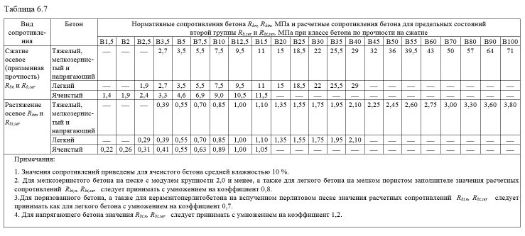
а - трехлинейная диаграмма состояния сжатого бетона; б - двухлинейная диаграмма состояния сжатого бетона
Рисунок 6.1 - Диаграммы состояния сжатого бетона
Значения относительных деформаций b 2 для тяжелого, мелкозернистого и напрягающего бетонов принимают: при непродолжительном действии нагрузки: для бетонов класса по прочности на сжатие В60 и ниже - b 2 = 0,0035; для высокопрочных бетонов класса по прочности на сжатие В70-В100 b 2 принимают по линейному закону от 0,0033 при В70 до 0,0028 при В100; при продолжительном действии нагрузки - по таблице 6.10.
Значения Rb , Eb и b 0 принимают согласно 6.1.11, 6.1.12, 6.1.14, 6.1.15.
при b 1 b b 2
Значения приведенного модуля деформации бетона Eb,red принимают:
Значения относительных деформаций b 1, red принимают: =0,0015; для тяжелого бетона при продолжительном действии нагрузки по таблице 6.10. для тяжелого бетона при непродолжительном действии нагрузки b 1, red для легкого бетона при непродолжительном действии нагрузки b 1, red =0,0022; Значения Rb , b 2 принимают как в 6.1.20.
Деформации бетона следует определять с учетом плоского или объемного напряженных состояний.
6.2Арматура
- горячекатаную гладкую и периодического профиля с постоянной и переменной высотой выступов (кольцевой и серповидный профиль соответственно) диаметром 6-50 мм;
- термомеханически упрочненную периодического профиля диаметром 6-50 мм;
- холоднодеформированную периодического профиля диаметром 3-16 мм;
- арматурные канаты диаметром 6-18 мм.
А - для горячекатаной и термомеханически упрочненной арматуры;
В, Вр - для холоднодеформированной арматуры;
- К - для арматурных канатов.
Классы арматуры по прочности на растяжение соответствуют гарантированному значению предела текучести, физического или условного (равного значению напряжений, соответствующих остаточному относительному удлинению 0,1 % или 0,2 %), с обеспеченностью не менее 0,95, определяемому по соответствующим стандартам.
Кроме того, в необходимых случаях к арматуре предъявляют требования по дополнительным показателям качества: свариваемость, пластичность, хладостойкость, коррозионную стойкость, характеристики сцепления с бетоном и др.
Для поперечного и косвенного армирований применяют гладкую арматуру класса А240 из стали марок Ст3сп и Ст3пс (с категориями нормируемых показателей не ниже 2), а также арматуру периодического профиля классов А400, А500, В500 и Вр500.
Для предварительно напряженных железобетонных конструкций следует предусматривать: в качестве напрягаемой арматуры:
- горячекатаную и термомеханически упрочненную периодического профиля классов А600, А800 и А1000;
- холоднодеформированную периодического профиля классов от Вр1200 до Вр1600;
- канатную семипроволочную классов К1400, К1500, К1600, К1700; К1800; К1900 в качестве ненапрягаемой арматуры:
- горячекатаную гладкую класса А240;
- горячекатаную, термомеханически упрочненную и холоднодеформированную периодического профиля классов А400, А500, А600, В500 и Вр500.
В конструкциях, эксплуатируемых при статической (и квазистатической) нагрузке в отапливаемых зданиях, а также на открытом воздухе и в неотапливаемых зданиях при расчетной температуре минус 40 °С и выше может быть применена арматура всех вышеуказанных классов, за исключением арматуры класса А400 из стали марки 35ГС, класса А240 из стали марки Ст3кп, применяемых при расчетной температуре минус 30 °С и выше.
При расчетной температуре ниже минус 55 °С используют арматуру класса Ас500С и А600 из стали марки 20Г2СФБА.
При других условиях эксплуатации класс арматуры и марку стали принимают по специальным указаниям.
При проектировании зоны передачи предварительного напряжения, анкеровки арматуры в бетоне и соединений арматуры внахлестку (без сварки) следует учитывать характер поверхности арматуры, устанавливаемый соответствующими стандартами на арматуру.
При проектировании сварных соединений арматуры следует учитывать способ изготовления арматуры, устанавливаемый соответствующими стандартами на арматуру.
В случае если монтаж конструкций возможен при расчетной зимней температуре ниже минус 40 °С, для монтажных петель не допускается применять сталь марки Ст3пс.
Таблица 6.13
| Класс арматуры | Номинальный диаметр арматуры, мм | Нормативные значения сопротивления растяжению R s,n и расчетные значения сопротивления растяжению для предельных состояний второй группы R s,ser , МПа |
|---|---|---|
| А240 | 6-40 | 240 |
| А400 | 6-40 | 400 |
| А500 | 6-40 | 500 |
| А600 | 6-40 | 600 |
| А800 | 10-40 | 800 |
| А1000 | 10-40 | 1000 |
| В500 | 3-16 | 500 |
| В р 500 | 3-5 | 500 |
| В р 1200 | 8 | 1200 |
| В р 1300 | 7 | 1300 |
| В р 1400 | 4; 5; 6 | 1400 |
| В р 1500 | 3 | 1500 |
| В р 1600 | 3-5 | 1600 |
| К1400 | 15 | 1400 |
| К1500 | 6-18 | 1500 |
| К1600 | 6-16 | 1600 |
| К1700 | 6-9 | 1700 |
| К1800 | 6,9 | 1800 |
|---|---|---|
| К1900 | 6,9 | 1900 |
где γ s - коэффициент надежности по арматуре, принимаемый равным 1,15 для предельных состояний первой группы и 1,0 - для предельных состояний второй группы.
Расчетные значения сопротивления арматуры растяжению Rs приведены (с округлением) для предельных состояний первой группы в таблице 6.14, второй группы - в таблице 6.13. При этом значения Rs,n для предельных состояний первой группы приняты равными наименьшим контролируемым значениям по соответствующим стандартам.
Значения расчетного сопротивления арматуры сжатию Rsc принимают равными расчетным значениям сопротивления арматуры растяжению Rs , но не более значений, соответствующих деформациям укорочения бетона, окружающего сжатую арматуру: не более 400 МПа - при кратковременном действии нагрузки, не более 500 МПа - при длительном действии нагрузки .
Для арматуры классов В500 и А600 граничные значения сопротивления сжатию принимаются с понижающим коэффициентом условий работы. Расчетные значения Rsc приведены в таблице 6.14.
Таблица 6.14
| Класс арматуры | Значения расчетного сопротивления арматуры для предельных состояний первой группы, МПа | Значения расчетного сопротивления арматуры для предельных состояний первой группы, МПа |
|---|---|---|
| Класс арматуры | растяжению R s | сжатию R sс |
| А240 | 210 | 210 |
| А400 | 350 | 350 |
| А500 | 435 | 435(400) |
| А600 | 520 | 470(400) |
| А800 | 695 | 500(400) |
| А1000 | 870 | 500(400) |
| В500 | 435 | 415(380) |
| В р 500 | 415 | 390(360) |
| В р 1200 | 1050 | 500(400) |
| В р 1300 | 1130 | 500(400) |
| В р 1400 | 1215 | 500(400) |
| В р 1500 | 1300 | 500(400) |
| В р 1600 | 1390 | 500(400) |
| К1400 | 1215 | 500(400) |
| К1500 | 1300 | 500(400) |
| К1600 | 1390 | 500(400) |
| К1700 | 1475 | 500(400) |
| К1800 | 1565 | 500 (400) |
| К1900 | 1650 | 500 (400) |
Примечание - Значения Rsc в скобках используют только при расчете на кратковременное действие нагрузки.
Для поперечной арматуры всех классов расчетные значения сопротивления Rsw следует принимать не более 300 МПа.
Таблица 6.15
| Класс арматуры | Расчетные значения сопротивления поперечной арматуры (хомутов и отогнутых стержней) растяжению для предельных состояний первой группы, МПа |
|---|---|
| А240 | 170 |
| А400 | 280 |
| А500 | 300 |
| В500 | 300 |
- относительных деформаций удлинения арматуры ε s 0 при достижении напряжениями расчетного сопротивления Rs ;
- модуля упругости арматуры Es .
для арматуры с условным пределом текучести
- Еs = 1,95 10 5 МПа - для арматурных канатов (К);
- Еs = 2,0 10 5 МПа - для остальной арматуры (А и В).
При расчете железобетонных элементов по нелинейной деформационной модели в качестве расчетной диаграммы состояния (деформирования) арматуры, устанавливающей связь между напряжениями и относительными деформациями арматуры, принимают упрощенные диаграммы по типу диаграмм Прандтля для арматуры с физическим пределом текучести классов А240-А500, В500 двухлинейную диаграмму (рисунок 6.2, а ), а для арматуры с условным пределом текучести классов А600-А1000, Вр1200-Вр1500, К1400, К1500 и К1600 - трехлинейную (рисунок 6.2, б ), без учета упрочнения за площадкой текучести. s s
Диаграммы состояния арматуры при растяжении и сжатии принимают одинаковыми, с учетом нормируемых расчетных сопротивлений арматуры растяжению и сжатию.
Допускается в качестве расчетных диаграмм состояния арматуры использовать криволинейные расчетные диаграммы, аппроксимирующие фактические диаграммы деформирования арматуры.
Значения , и принимают согласно 6.2.11, 6.2.12 и 6.2.8. Значения относительной деформации принимают равными 0,025. 0 s s E s R 2 s
Допускается по результатам экспериментальных испытаний и расчетных обоснований принимать величину относительной деформации менее или более значения 0,025 в зависимости от марки стали, типа армирования, критерия надежности конструкции и других факторов. 2 s а - двухлинейная диаграмма; б - трехлинейная диаграмма
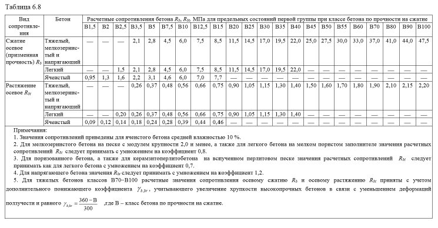
Рисунок 6.2 - Диаграммы состояния растянутой арматуры
Значения , и принимают согласно 6.2.11, 6.2.12 и 6.2.8. 0 s s E s R
Значения напряжений принимают равными 0,9 Rs , а напряжений σ s 2 - равно 1,1 Rs . 1 s
Значения относительных деформаций ε s 1 принимают равными , а деформаций 0,9 s s R E ε s 2 - равными 0,015.
7Бетонные конструкции
Конструкции рассматривают как бетонные, если их прочность обеспечена одним только бетоном.
Бетонные элементы применяют:
- преимущественно на сжатие при расположении продольной сжимающей силы в пределах поперечного сечения элемента;
- в отдельных случаях в конструкциях, работающих на сжатие при расположении продольной сжимающей силы за пределами поперечного сечения элемента, а также в изгибаемых конструкциях, когда их разрушение не представляет непосредственной опасности для жизни людей и сохранности оборудования.
Конструкции с арматурой, площадь сечения которой меньше минимально допустимой по конструктивным требованиям 10.3, рассматривают как бетонные.
7.1Расчет бетонных элементов по прочности
Расчет бетонных элементов производят на основе нелинейной деформационной модели согласно 8.1.20-8.1.30, принимая в расчетных зависимостях площадь арматуры равной нулю. Допускается расчет бетонных элементов прямоугольного и таврового сечений при действии усилий в плоскости симметрии нормального сечения производить по предельным усилиям согласно 7.1.7-7.1.12.
Без учета сопротивления бетона растянутой зоны (рисунок 7.1) производят расчет внецентренно сжатых элементов при расположении продольной сжимающей силы в пределах поперечного сечения элемента, принимая, что достижение предельного состояния характеризуется разрушением сжатого бетона. Сопротивление бетона сжатию при расчете по предельным усилиям условно представляют напряжениями, равными Rb , равномерно распределенными по части сжатой зоны (условной сжатой зоны) с центром тяжести, совпадающим с точкой приложения продольной силы (7.1.9).
Рисунок 7.1 - Схема усилий и эпюра напряжений в сечении, нормальном к продольной оси внецентренно сжатого бетонного элемента, рассчитываемого по прочности без учета сопротивления бетона растянутой зоны
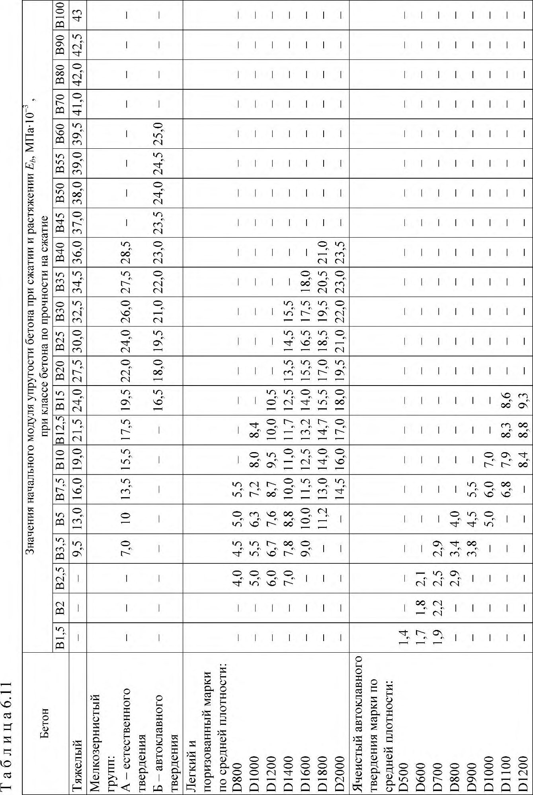
С учетом сопротивления бетона растянутой зоны (рисунок 7.2) производят расчет элементов, работающих на сжатие при расположении продольной сжимающей силы за пределами поперечного сечения элемента, изгибаемых элементов, а также элементов, в которых не допускают трещины по условиям эксплуатации конструкций. При этом при расчете по предельным усилиям принимают, что предельное состояние характеризуется достижением предельных усилий в бетоне растянутой зоны, определяемых в предположении упругой работы бетона (7.1.9, 7.1.10, 7.1.12).
Рисунок 7.2 - Схема усилий и эпюра напряжений в сечении, нормальном к продольной оси изгибаемого (внецентренно сжатого) бетонного элемента, рассчитываемого по прочности с учетом сопротивления бетона растянутой зоны
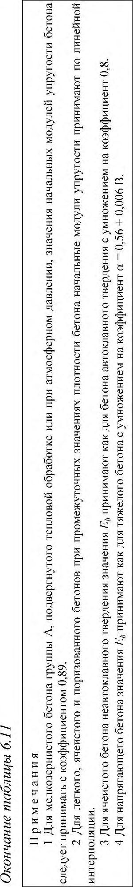
Расчет внецентренно сжатых бетонных элементов по предельным усилиям
- 1/600 длины элемента или расстояния между его сечениями, закрепленными от смещения;
1/30 высоты сечения;
10 мм.
Для элементов статически неопределимых конструкций значение эксцентриситета продольной силы относительно центра тяжести приведенного сечения е 0 принимают равным значению эксцентриситета, полученного из статического расчета, но не менее еа .
Для элементов статически определимых конструкций эксцентриситет е 0 принимают равным сумме эксцентриситетов - из статического расчета конструкций и случайного.
где N - действующая продольная сила;
Аb - площадь сжатой зоны бетона, определяемая из условия, что ее центр тяжести совпадает с точкой приложения продольной силы N (с учетом прогиба).
Для элементов прямоугольного сечения
Допускается при эксцентриситете продольной силы е 0 ≤ h /30 и l 0 20 h расчет внецентренно сжатых элементов прямоугольного сечения производить из условия
где А - площадь поперечного сечения элемента;
- φ - коэффициент, принимаемый при длительном действии нагрузки по таблице 7.1 в зависимости от гибкости элемента, при кратковременном действии нагрузки 0 l значения φ определяют по линейному закону, принимая φ = 0,9 при 0 l
- =10 и φ = h
- =20; h h l 0 - расчетная длина элемента, определяемая как для железобетонных элементов.
Таблица 7.1
| l 0 /h | 6 | 10 | 15 | 20 |
|---|---|---|---|---|
| | 0,92 | 0,9 | 0,8 | 0,6 |
Внецентренно сжатые бетонные элементы, в которых появление трещин не допускается по условиям эксплуатации, независимо от расчета из условия (7.1) должны быть проверены с учетом сопротивления бетона растянутой зоны из условия
Для элементов прямоугольного сечения условие (7.4) имеет вид
В формулах (7.4) и (7.5):
А - площадь поперечного сечения бетонного элемента;
I - момент инерции сечения бетонного элемента относительно его центра тяжести; уt - расстояние от центра тяжести сечения элемента до наиболее растянутого волокна;
- коэффициент, определяемый согласно 7.1.11.
где Ncr - условная критическая сила, определяемая по формуле
где D - жесткость элемента в предельной по прочности стадии, определяемая как для железобетонных элементов, но без учета арматуры, согласно 8.1.15.
Расчет изгибаемых бетонных элементов по предельным усилиям
где М - изгибающий момент от внешней нагрузки;
Мult - предельный изгибающий момент, который может быть воспринят сечением элемента.
Значение Мult определяют по формуле
где W - момент сопротивления сечения элемента для крайнего растянутого волокна.
Для элементов прямоугольного сечения
8Железобетонные конструкции без предварительного напряжения арматуры
8.1Расчет элементов железобетонных конструкций по предельным состояниям первой группы
Расчет железобетонных элементов по прочности
Железобетонные элементы рассчитывают по прочности на действие изгибающих моментов, продольных сил, поперечных сил, крутящих моментов и на местное действие нагрузки (местное сжатие, продавливание).
Расчет по прочности железобетонных элементов на действие изгибающих моментов и продольных сил
Общие положения
Расчет по прочности нормальных сечений железобетонных элементов следует производить на основе нелинейной деформационной модели согласно 8.1.20-8.1.30, а также на основе предельных усилий:
- железобетонных элементов прямоугольного, таврового и двутаврового сечений с арматурой, расположенной у перпендикулярных к плоскости изгиба граней элемента, при действии усилий в плоскости симметрии нормальных сечений согласно 8.1.4-8.1.16;
- внецентренно сжатых элементов круглого и кольцевого поперечных сечений - по приложению Д.
Допускается производить расчет конструкций по недеформированной схеме, учитывая при гибкости > 14 влияние прогиба элемента на его прочность путем 0 l i умножения начального эксцентриситета е 0 на коэффициент , определяемый согласно 8.1.15.
Расчет по прочности нормальных сечений по предельным усилиям
- сопротивление бетона растяжению принимают равным нулю;
- сопротивление бетона сжатию представляется напряжениями, равными Rb и равномерно распределенными по сжатой зоне бетона;
- деформации (напряжения) в арматуре определяют в зависимости от высоты сжатой зоны бетона;
- растягивающие напряжения в арматуре принимают не более расчетного сопротивления растяжению Rs ;
- сжимающие напряжения в арматуре принимают не более расчетного сопротивления сжатию Rsc .
- x соотношения между значением относительной высоты сжатой зоны бетона 0 , h = определяемым из соответствующих условий равновесия, и значением граничной относительной высоты сжатой зоны ξ R , при котором предельное состояние элемента наступает одновременно с достижением в растянутой арматуре напряжения, равного расчетному сопротивлению Rs .
где s , el - относительная деформация растянутой арматуры при напряжениях, равных Rs , определяемая по формуле
b 2 - относительная деформация сжатого бетона при напряжениях, равных Rb , принимаемая в соответствии с 6.1.20 при непродолжительном действии нагрузки.
Для тяжелого бетона классов В70 - В100 и для мелкозернистого бетона в числителе формулы (8.1) вместо 0,8 следует принимать 0,7.
- 1/600 длины элемента или расстояния между его сечениями, закрепленными от смещения;
- 1/30 высоты сечения;
10 мм.
Для элементов статически неопределимых конструкций значение эксцентриситета продольной силы относительно центра тяжести приведенного сечения е 0 принимают равным значению эксцентриситета, полученного из статического расчета, но не менее еа .
Для элементов статически определимых конструкций эксцентриситет е 0 принимают равным сумме эксцентриситетов из статического расчета конструкций и случайного.
Расчет изгибаемых элементов
где М - изгибающий момент от внешней нагрузки;
Мult - предельный изгибающий момент, который может быть воспринят сечением элемента.
при этом высоту сжатой зоны х определяют по формуле
Рисунок 8.1 - Схема усилий и эпюра напряжений в сечении, нормальном к продольной оси изгибаемого железобетонного элемента, при его расчете по прочности
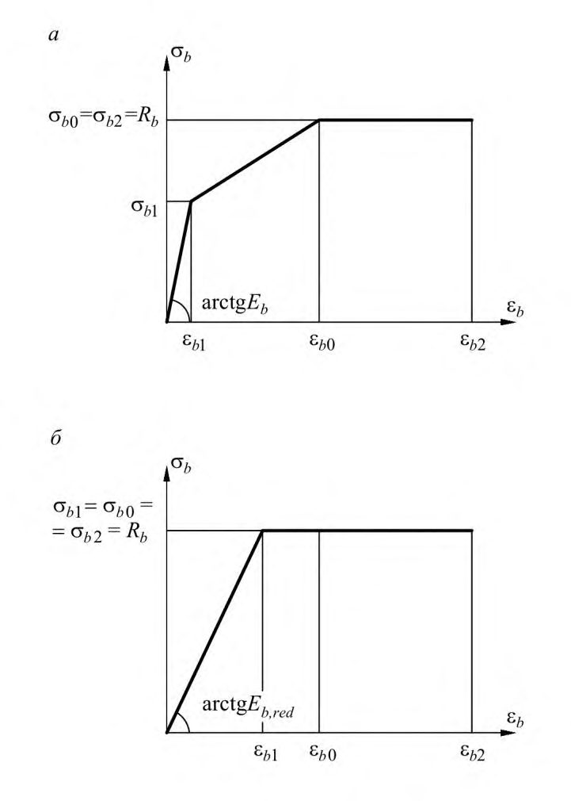
- а) если граница проходит в полке (рисунок 8.2, а ), т. е. соблюдается условие
значение Мult определяют по 8.1.9 как для прямоугольного сечения шириной ; f b б) если граница проходит в ребре (рисунок 8.2, б ), т. е. условие (8.6) не соблюдается, значение Мult определяют по формуле
при этом высоту сжатой зоны бетона х определяют по формуле
Рисунок 8.2 - Положение границы сжатой зоны в сечении изгибаемого железобетонного элемента
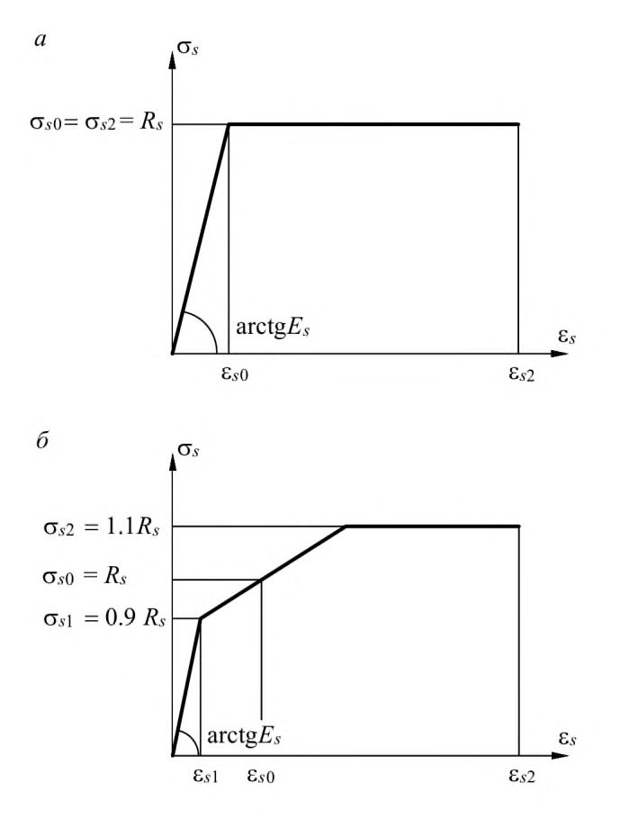
- а) при наличии поперечных ребер или при - 1/2 расстояния в свету между продольными ребрами; 0,1 f h h
- б) при отсутствии поперечных ребер (или при расстояниях между ними больших, чем расстояния между продольными ребрами) и - 6 ; 0,1 6 f f h h h -f h
- в) при консольных свесах полки:
при - свесы не учитывают. 0,05 f h h
В случае, когда по конструктивным соображениям или из расчета по предельным состояниям второй группы площадь растянутой арматуры принята большей, чем это требуется для соблюдения условия допускается предельный изгибающий момент Мult определять по формулам (8.4) или (8.7), подставляя в них значения высоты сжатой зоны . 0 , R x h 0 R x h =
Если вычисленная без учета сжатой арматуры ( ) высота сжатой зоны x< 2 a ´, в формулу (8.9) подставляют вместо а ´ значение 0 s А = . 2 x
Расчет внецентренно сжатых элементов
где N - продольная сила от внешней нагрузки;
- е - расстояние от точки приложения продольной силы N до центра тяжести сечения растянутой или наименее сжатой (при полностью сжатом сечении элемента) арматуры, равное
Здесь - коэффициент, учитывающий влияние продольного изгиба (прогиба) элемента на его несущую способность и определяемый согласно 8.1.15; е 0 - по 8.1.7.
Высоту сжатой зоны х определяют:
Рисунок 8.3 - Схема усилий и эпюра напряжений в сечении, нормальном к продольной оси внецентренно сжатого железобетонного элемента, при расчете его по прочности
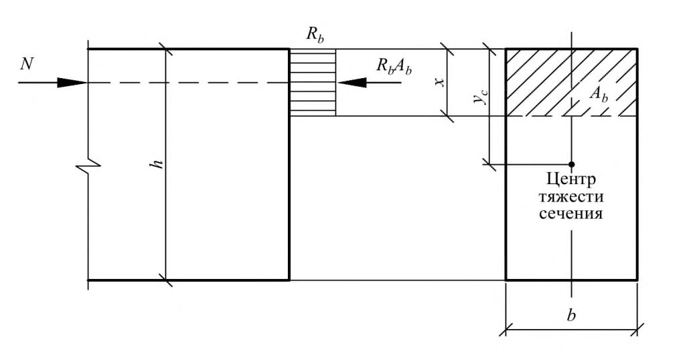
где N - продольная сила от внешней нагрузки;
Ncr - условная критическая сила, определяемая по формуле
здесь D - жесткость железобетонного элемента в предельной по прочности стадии; l 0 - расчетная длина элемента, определяемая согласно 8.1.17.
Допускается значение D определять по формуле
где Eb, Es - модули упругости бетона и арматуры соответственно;
, Is - моменты инерции площадей сечения бетона и всей продольной арматуры соответственно относительно оси, проходящей через центр тяжести поперечного сечения элемента;
ks = 0,7;
l -коэффициент, учитывающий влияние длительности действия нагрузки , но не более 2;
здесь M 1, Ml 1 - моменты относительно центра наиболее растянутого или наименее сжатого (при целиком сжатом сечении) стержня соответственно от действия полной нагрузки и от действия постоянных и длительных нагрузок;
е - относительное значение эксцентриситета продольной силы , принимаемое 0 e h не менее 0,15 и не более 1,5.
Допускается уменьшать значение коэффициента с учетом распределения изгибающих моментов по длине элемента, характера его деформирования и влияния прогибов на значение изгибающего момента в расчетном сечении путем расчета конструкции как упругой системы.
где Nult - предельное значение продольной силы, которую может воспринять элемент, определяемое по формуле
здесь А - площадь бетонного сечения;
Аs,tot - площадь всей продольной арматуры в сечении элемента;
- коэффициент, принимаемый при длительном действии нагрузки по таблице 8.1 в зависимости от гибкости элемента; при кратковременном действии нагрузки значения определяют по линейному закону, принимая =0,9 при и 0 10 l h =
Таблица 8.1
| Класс бетона | при l 0 /h, равном | при l 0 /h, равном | при l 0 /h, равном | при l 0 /h, равном |
|---|---|---|---|---|
| Класс бетона | 6 | 10 | 15 | 20 |
| В20 - В55 | 0,92 | 0,9 | 0,83 | 0,7 |
| В60 | 0,91 | 0,89 | 0,80 | 0,65 |
| В80 | 0,90 | 0,88 | 0,79 | 0,64 |
Допускается расчетную длину l 0 элементов постоянного поперечного сечения по длине l при действии продольной силы принимать равной:
- а) для элементов с шарнирным опиранием на двух концах - 1,0 l;
- б) для элементов с жесткой заделкой (исключающей поворот опорного сечения) на одном конце и незакрепленным другим концом (консоль) - 2,0 l ;
- в) для элементов с шарнирным несмещаемым опиранием на одном конце, а на другом конце:
- с жесткой (без поворота) заделкой
- 0,7 l
;
- с податливой (допускающей ограниченный поворот) заделкой - 0,9 l ;
- г) для элементов с податливым шарнирным опиранием (допускающем ограниченное смещение опоры) на одном конце, а на другом конце:
- с податливой (с ограниченным поворотом) заделкой - 2,0 l ;
- д) для элементов с несмещаемыми заделками на двух концах: жесткими (без поворота) - 0,5 l податливыми (с ограниченным поворотом) - 0,8 l
; ;
- е) для элементов с ограниченно смещаемыми заделками на двух концах: жесткими (без поворота) - 0,8 l ; податливыми (с ограниченным поворотом) - 1,2 l .
Расчет центрально-растянутых элементов
где N - продольная растягивающая сила от внешних нагрузок;
Nult - предельное значение продольной силы, которое может быть воспринято элементом, определяемой по формуле
- площадь сечения всей продольной арматуры.
Аs
, tot
Расчет внецентренно растянутых элементов
- а) если продольная сила N приложена между равнодействующими усилий в арматуре S и S ´ (рисунок 8.4, а ) - из условий
где N e и N e ' - усилия от внешних нагрузок; и - предельные усилия, которые может воспринять сечение. ult M ult M
Усилия и определяют по формулам ult M ult M
где б) если продольная сила N приложена за пределами расстояния между равнодействующими усилий в арматуре S и S ´ (рисунок 8.4, б ) - из условия (8.20), определяя предельный момент Mult по формуле
при этом высоту сжатой зоны х определяют по формуле
Если полученное из расчета по формуле (8.25) значение , в формулу (8.24) подставляют , где R определяют согласно 8.1.6. 0 R x h R x h = а - между равнодействующими усилий в арматуре S и S ´; б - за пределами расстояний между равнодействующими усилий в арматуре S и S ´
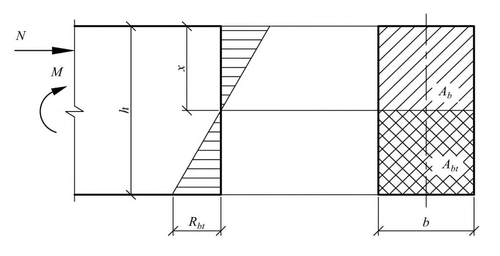
Рисунок 8.4 - Схема усилий и эпюра напряжений в сечении, нормальном к продольной оси внецентренно растянутого железобетонного элемента, при расчете его по прочности при приложении продольной силы N
Расчет по прочности нормальных сечений на основе нелинейной деформационной модели
- распределение относительных деформаций бетона и арматуры по высоте сечения элемента принимают по линейному закону (гипотеза плоских сечений);
- связь между осевыми напряжениями и относительными деформациями бетона и арматуры принимают в виде диаграмм состояния (деформирования) бетона и арматуры;
- сопротивление бетона растянутой зоны допускается не учитывать, принимая при напряжения . В отдельных случаях (например, изгибаемые и внецентренно сжатые бетонные конструкции, в которых не допускают трещины) расчет по прочности производят с учетом работы растянутого бетона. 0 bi 0 bi =
- значения сжимающей продольной силы, а также сжимающих напряжений и деформаций укорочения бетона и арматуры со знаком «минус»;
- значения растягивающей продольной силы, а также растягивающих напряжений и деформаций удлинения бетона и арматуры со знаком «плюс».
Знаки координат центров тяжести арматурных стержней и выделенных участков бетона, а также точки приложения продольной силы принимают в соответствии с назначенной системой координат ХОY . В общем случае начало координат этой системы (точка 0 на рисунке 8.5) располагают в произвольном месте в пределах поперечного сечения элемента.
Рисунок 8.5 - Расчетная схема нормального сечения железобетонного элемента
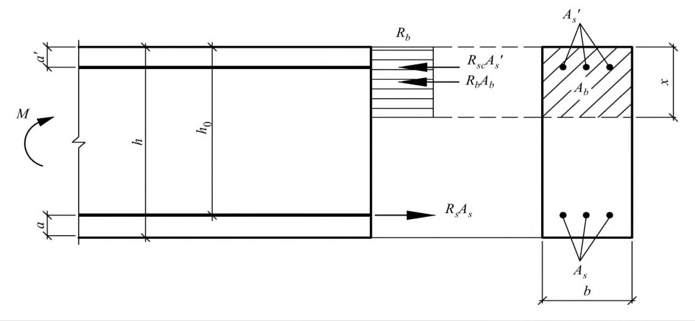
уравнения, определяющие распределение деформаций по сечению элемента
зависимости, связывающие напряжения и относительные деформации бетона и арматуры
в уравнениях (8.26) - (8.32):
Mx , My - изгибающие моменты от внешней нагрузки относительно выбранных и располагаемых в пределах поперечного сечения элемента координатных осей (соответственно действующих в плоскостях ХОZ и YОZ или параллельно им), определяемые по формулам:
здесь Mxd , Myd - изгибающие моменты в соответствующих плоскостях от внешней нагрузки, определяемые из статического расчета конструкции.
N e
- продольная сила от внешней нагрузки; x , ey -расстояния от точки приложения продольной силы N до соответствующих выбранных осей;
Abi , Zbxi , Zby i , bi - площадь, координаты центра тяжести i -го участка бетона и напряжение на уровне его центра тяжести;
Asj , Zsxj , Zsyj , sj - площадь, координаты центра тяжести j -го стержня арматуры и напряжение в нем;
0 - относительная деформация волокна, расположенного на пересечении выбранных осей (в точке 0);
, - кривизна продольной оси в рассматриваемом поперечном сечении 1 x r 1 y r элемента в плоскостях действия изгибающих моментов Мх и Му ;
Еb - начальный модуль упругости бетона;
Еsj - модуль упругости jго стержня арматуры;
bi - коэффициент упругости бетона i -го участка;
sj - коэффициент упругости j -го стержня арматуры.
Коэффициенты bi и sj принимают по соответствующим диаграммам состояния бетона и арматуры (6.1.19, 6.2.13).
Значения коэффициентов bi и sj определяют по формулам (8.35) и (8.36) как соотношение значений напряжений и деформаций для рассматриваемых точек соответствующих диаграмм состояния бетона и арматуры, принятых в расчете, деленное на модуль упругости бетона Eb и арматуры Es (при двухлинейной диаграмме состояния бетона - на приведенный модуль деформации сжатого бетона Eb , red ). При этом используют зависимости «напряжение - деформация» (6.5)-(6.9), (6.14) и (6.15) на рассматриваемых участках диаграмм.
При статическом расчете конструкции по недеформированной схеме значения Мх и Му определяют с учетом влияния прогибов согласно 8.1.2.
где b , max - относительная деформация наиболее сжатого волокна бетона в нормальном сечении элемента от действия внешней нагрузки;
s , max - относительная деформация наиболее растянутого стержня арматуры в нормальном сечении элемента от действия внешней нагрузки;
b , ult - предельное значение относительной деформации бетона при сжатии, принимаемое согласно 8.1.30;
- s , ult - предельное значение относительной деформации удлинения арматуры, принимаемое согласно 8.1.30.
Жесткостные характеристики Dij ( i,j = 1,2,3) в системе уравнений (8.39) - (8.41) определяют по формулам
Обозначения в формулах - см. 8.1.23.
Для изгибаемых и внецентренно сжатых бетонных элементов, в которых не допускаются трещины, расчет производят с учетом работы растянутого бетона в поперечном сечении элемента из условия
где bt ,max - относительная деформация наиболее растянутого волокна бетона в нормальном сечении элемента от действия внешней нагрузки, определяемая согласно 8.1.258.1.28;
bt , ult - предельное значение относительной деформации бетона при растяжении, принимаемое согласно 8.1.30
При внецентренном сжатии или растяжении элементов и распределении в поперечном сечении бетона элемента деформаций только одного знака предельные значения относительных деформаций бетона ε b , ult (ε bt , ult ) определяют в зависимости от соотношения деформаций бетона на противоположных гранях сечения элемента ε1 и ε2 по формулам: ( ) 2 1
где ε b 0, ε bt 0, ε b 2 и ε bt 2 - деформационные параметры расчетных диаграмм состояния бетона (6.1.14, 6.1.20, 6.1.22).
Предельные значения относительной деформации арматуры εs,ult принимают равными:
0,025 - для арматуры с физическим пределом текучести;
0,015 - для арматуры с условным пределом текучести.
Расчет по прочности железобетонных элементов при действии поперечных сил Общие положения
При расчете по модели наклонных сечений должны быть обеспечены прочность элемента по полосе между наклонными сечениями и наклонному сечению на действие поперечных сил, а также прочность по наклонному сечению на действие момента.
Прочность по наклонной полосе характеризуется максимальным значением поперечной силы, которое может быть воспринято наклонной полосой, находящейся под воздействием сжимающих усилий вдоль полосы и растягивающих усилий от поперечной арматуры, пересекающей наклонную полосу. При этом прочность бетона определяют по сопротивлению бетона осевому сжатию с учетом влияния сложного напряженного состояния в наклонной полосе.
Расчет по наклонному сечению на действие поперечных сил производят на основе уравнения равновесия внешних и внутренних поперечных сил, действующих в наклонном сечении с длиной проекции С на продольную ось элемента. Внутренние поперечные силы включают поперечную силу, воспринимаемую бетоном в наклонном сечении, и поперечную силу, воспринимаемую пересекающей наклонное сечение поперечной арматурой. При этом поперечные силы, воспринимаемые бетоном и поперечной арматурой, определяют по сопротивлениям бетона и поперечной арматуры растяжению с учетом длины проекции С наклонного сечения.
Расчет по наклонному сечению на действие момента производят на основе уравнения равновесия моментов от внешних и внутренних сил, действующих в наклонном сечении с длиной проекции С на продольную ось элемента. Моменты от внутренних сил включают момент, воспринимаемый пересекающей наклонное сечение продольной растянутой арматурой, и момент, воспринимаемый пересекающей наклонное сечение поперечной арматурой. При этом моменты, воспринимаемые продольной и поперечной арматурой, определяют по сопротивлениям продольной и поперечной арматуры растяжению с учетом длины проекции С наклонного сечения.
Расчет железобетонных элементов по полосе между наклонными сечениями
где Q - поперечная сила в нормальном сечении элемента; φ b 1 - коэффициент, принимаемый равным 0,3.
Расчет железобетонных элементов по наклонным сечениям на действие поперечных сил
где Q - поперечная сила в наклонном сечении с длиной проекции С на продольную ось элемента, определяемая от всех внешних сил, расположенных по одну сторону от рассматриваемого наклонного сечения; при этом учитывают наиболее опасное загружение в пределах наклонного сечения;
Qb - поперечная сила, воспринимаемая бетоном в наклонном сечении;
Qsw
- поперечная сила, воспринимаемая поперечной арматурой в наклонном сечении. Поперечную силу Qb определяют по формуле
но принимают не более и не менее ; 0 2,5 bt R b h 0 0,5 bt R b h φ b 2 - коэффициент, принимаемый равным 1,5.
Рисунок 8.6 - Схема усилий при расчете железобетонных элементов по наклонному сечению на действие поперечных сил
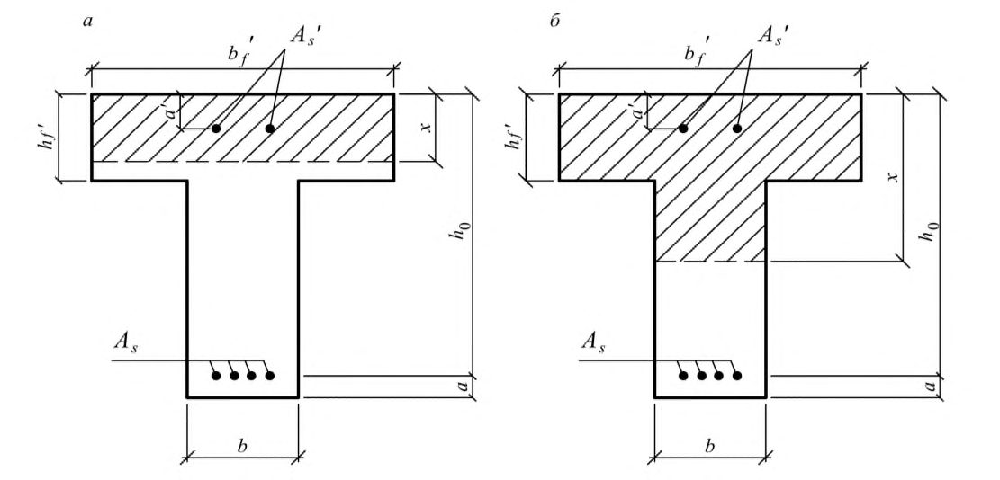
Усилие Qsw для поперечной арматуры, нормальной к продольной оси элемента, определяют по формуле
где φ sw - коэффициент, принимаемый равным 0,75; qsw - усилие в поперечной арматуре на единицу длины элемента, равное
Расчет производят для ряда расположенных по длине элемента наклонных сечений при наиболее опасной длине проекции наклонного сечения С . При этом длину проекции С в формуле (8.58) принимают не менее 1,0 h 0 и не более 2,0 h 0.
Допускается производить расчет наклонных сечений, не рассматривая наклонные сечения при определении поперечной силы от внешней нагрузки, из условия
где Q 1 - поперечная сила в нормальном сечении от внешней нагрузки;
При расположении нормального сечения, в котором учитывают поперечную силу Q 1, вблизи опоры на расстоянии а менее 2,5 h 0 расчет из условия (8.60) производят, умножая значения Qb 1, определяемые по формуле (8.61), на коэффициент, равный , но 0 2,5 / a h принимают значение Qb 1 не более 2,5 Rbt b h 0.
При расположении нормального сечения, в котором учитывают поперечную силу Q 1, на расстоянии а менее h 0 расчет из условия (8.60) производят, умножая значение Qsw ,1 , определяемое по формуле (8.62), на коэффициент, равный a / h 0.
Поперечную арматуру учитывают в расчете, если соблюдается условие
Допускается учитывать поперечную арматуру и при невыполнении этого условия, если значение Qb в условии (8.56) определять по формуле
и принимать его с учетом ограничений к формуле (8.57).
Шаг поперечной арматуры, учитываемой в расчете, должен быть не больше 0 s w h
При отсутствии поперечной арматуры или нарушении вышеуказанных требований, а также приведенных в 10.3 конструктивных требований расчет производят из условия (8.56) или (8.60), принимая усилие Qsw или Qsw ,1 равным нулю.
Поперечная арматура должна соответствовать конструктивным требованиям, приведенным в 10.3.
Значения коэффициента n принимаются равными 1 - для изгибаемых конструкций без предварительного напряжения арматуры. В остальных случаях принимают значения коэффициента n равными:
где ср и t - средние сжимающее и растягивающее напряжения в бетоне от воздействия продольных сил, принимаемые положительными.
Величины ср и t принимают как средние напряжения в сечениях элементов. Допускается величины ср и t определять без учета арматуры при содержании продольной арматуры не более 3 %.
Расчет железобетонных элементов по наклонным сечениям на действие моментов
где М - момент в наклонном сечении с длиной проекции С на продольную ось элемента, определяемый от всех внешних сил, расположенных по одну сторону от рассматриваемого наклонного сечения, относительно конца наклонного сечения (точка 0), противоположного концу, у которого располагается проверяемая продольная арматура, испытывающая растяжение от момента в наклонном сечении; при этом учитывают наиболее опасное загружение в пределах наклонного сечения;
- Мs - момент, воспринимаемый продольной арматурой, пересекающей наклонное сечение, относительно противоположного конца наклонного сечения (точка 0);
- Мsw - момент, воспринимаемый поперечной арматурой, пересекающей наклонное сечение, относительно противоположного конца наклонного сечения (точка 0).
Момент Мs определяют по формуле
где Ns - усилие в продольной растянутой арматуре, принимаемое равным Rs As , а в зоне анкеровки определяемое согласно 10.3.21-10.3.28; z s - плечо внутренней пары сил; допускается принимать zs =0,9 h 0.
Момент Мsw для поперечной арматуры, нормальной к продольной оси элемента, определяют по формуле
где Qsw - усилие в поперечной арматуре, принимаемое равным qsw C ; q sw - определяют по формуле (8.59), а С принимают в пределах от 1,0 h 0 до 2,0 h 0.
Расчет производят для наклонных сечений, расположенных по длине элемента на его концевых участках и в местах обрыва продольной арматуры, при наиболее опасной длине проекции наклонного сечения С , принимаемой в указанных выше пределах.
Допускается производить расчет наклонных сечений, принимая в условии (8.63) момент М в наклонном сечении при длине проекции С на продольную ось элемента, равной 2,0 h 0, а момент Мsw - равным . 2 0 0,5 q sw h
Рисунок 8.7 - Схема усилий при расчете железобетонных элементов по наклонному сечению на действие моментов
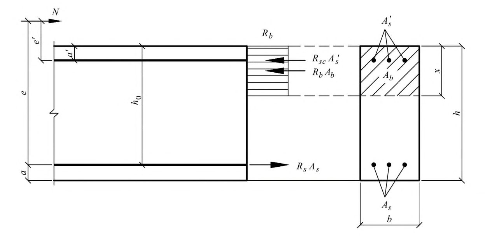
Расчет по прочности железобетонных элементов при действии крутящих моментов
Общие положения
При расчете по модели пространственных сечений рассматривают сечения, образованные наклонными отрезками прямых, следующими по трем растянутым граням элемента, и замыкающим отрезком прямой по четвертой сжатой грани элемента.
Расчет железобетонных элементов на действие крутящих моментов производят по прочности элемента между пространственными сечениями и по прочности пространственных сечений.
Прочность по бетону между пространственными сечениями характеризуется максимальным значением крутящего момента, определяемым по сопротивлению бетона осевому сжатию с учетом напряженного состояния в бетоне между пространственными сечениями.
Расчет по пространственным сечениям производят на основе уравнений равновесия всех внутренних и внешних сил относительно оси, расположенной в центре сжатой зоны пространственного сечения элемента. Внутренние моменты включают момент, воспринимаемый арматурой, следующей вдоль оси элемента, и арматурой, следующей поперек оси элемента, пересекающей пространственное сечение и расположенной в растянутой зоне пространственного сечения и у растянутой грани элемента, противоположной сжатой зоне пространственного сечения. При этом усилия, воспринимаемые арматурой, определяют соответствию по расчетным значениям сопротивления растяжению продольной и поперечной арматуры.
При расчете рассматривают все положения пространственного сечения, принимая сжатую зону пространственного сечения у нижней, боковой и верхней граней элемента.
Расчет на совместное действие крутящих и изгибающих моментов, а также крутящих моментов и поперечных сил производят исходя из уравнений взаимодействия между соответствующими силовыми факторами.
Расчет на действие крутящего момента
где Т - крутящий момент от внешних нагрузок в нормальном сечении элемента; b и h - меньший и больший размеры соответственно поперечного сечения элемента.
где Т - крутящий момент в пространственном сечении, определяемый от всех внешних сил, расположенных по одну сторону пространственного сечения;
Тsw - крутящий момент, воспринимаемый арматурой пространственного сечения, расположенной в поперечном по отношению к оси элемента направлении;
Т s - крутящий момент, воспринимаемый арматурой пространственного сечения, расположенной в продольном направлении.
Рисунок 8.8 - Схемы усилий в пространственных сечениях при расчете на действие крутящего момента
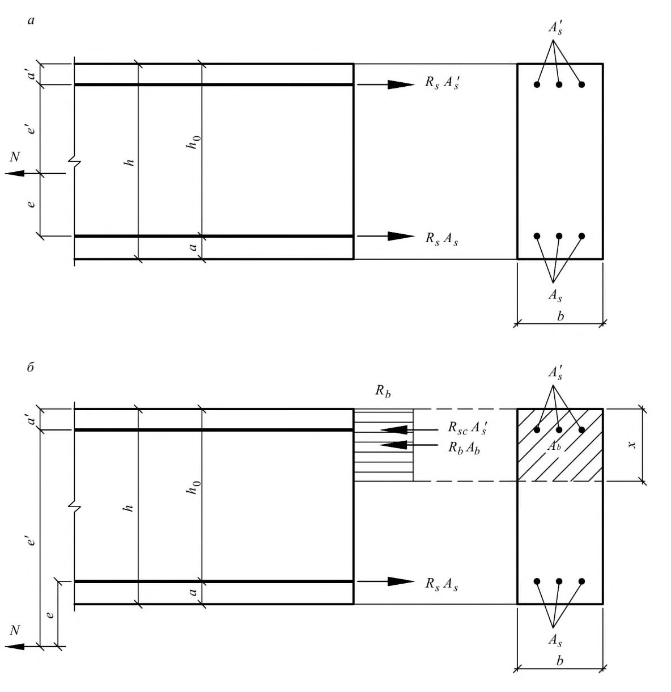
Значение соотношения между усилиями в поперечной и продольной арматуре, учитываемое в условии (8.67), приведено ниже.
Крутящий момент Tsw определяют по формуле
где Nsw - усилие в арматуре, расположенной в поперечном направлении; для арматуры, нормальной к продольной оси элемента, усилие Nsw определяют по формуле
где qsw, 1 - усилие в этой арматуре на единицу длины элемента,
а крутящий момент Тs - по формуле
Asw, 1 - площадь сечения арматуры, расположенной в поперечном направлении; sw - шаг этой арматуры;
Csw - длина проекции растянутой стороны пространственного сечения на продольную ось элемента
- коэффициент, учитывающий соотношение размеров поперечного сечения
C - длина проекции сжатой стороны пространственного сечения на продольную ось элемента;
Ns - усилие в продольной арматуре, расположенной у рассматриваемой грани элемента
Аs, 1 - площадь сечения продольной арматуры, расположенной у рассматриваемой грани элемента;
Z 1 и Z 2 - длина стороны поперечного сечения у рассматриваемой растянутой грани элемента и длина другой стороны поперечного сечения элемента.
Соотношение принимают в пределах от 0,5 до 1,5. В случае, если значение , 1 1 , 1 sw s s q Z R A выходит за указанные пределы, в расчете учитывают такое количество арматуры , 1 1 , 1 sw s s q Z R A
(продольной или поперечной), при котором значение оказывается в указанных , 1 1 , 1 sw s s q Z R A пределах.
Расчет производят для ряда пространственных сечений, расположенных по длине элемента, при наиболее опасной длине проекции пространственного сечения С на продольную ось элемента. При этом значение С принимают не более 2 Z 2 +Z 1 и не более . 1 2 Z
Допускается производить расчет на действие крутящего момента, не рассматривая пространственные сечения при определении крутящего момента от внешней нагрузки, из условия
где Т 1 - крутящий момент в нормальном сечении элемента;
Тsw, 1 - крутящий момент, воспринимаемый арматурой, расположенной у рассматриваемой грани элемента в поперечном направлении, и определяемый по формуле
Тs, 1 - крутящий момент, воспринимаемый продольной арматурой, расположенной у рассматриваемой грани элемента, и определяемый по формуле
Соотношение принимают в указанных выше пределах. , 1 1 , 1 sw s s q Z R A
Расчет производят для ряда нормальных сечений, расположенных по длине элемента, для арматуры, расположенной у каждой рассматриваемой грани элемента.
При действии крутящих моментов следует соблюдать конструктивные требования, приведенные в 10.3.
Расчет на совместное действие крутящего и изгибающего моментов
где Т - крутящий момент от внешней нагрузки в пространственном сечении;
Т 0 - предельный крутящий момент, воспринимаемый пространственным сечением;
М - изгибающий момент от внешней нагрузки в нормальном сечении;
М 0 - предельный изгибающий момент, воспринимаемый нормальным сечением.
При расчете на совместное действие крутящего и изгибающего моментов рассматривают пространственное сечение с растянутой арматурой, расположенной у грани, растянутой от изгибающего момента, т. е. у грани, нормальной к плоскости действия изгибающего момента.
Крутящий момент Т от внешней нагрузки определяют в нормальном сечении, расположенном в середине длины проекции С вдоль продольной оси элемента. В этом же нормальном сечении определяют изгибающий момент М от внешней нагрузки.
Предельный крутящий момент Т 0 определяют согласно 8.1.37 и принимают равным правой части условия (8.67) для рассматриваемого пространственного сечения.
Предельный изгибающий момент М 0 определяют согласно 8.1.9.
Для определения крутящих моментов допускается использовать условие (8.75). В этом случае крутящий момент Т=Т 1 и изгибающий момент М определяют в нормальных сечениях по длине элемента. В рассматриваемом нормальном сечении предельный крутящий момент принимают равным правой части условия (8.75).
Предельный изгибающий момент М 0 определяют для того же нормального сечения, как было указано выше.
При совместном действии крутящих и изгибающих моментов следует соблюдать расчетные и конструктивные требования, приведенные в 8.1.38 и 10.3.
Расчет на совместное действие крутящего момента и поперечной силы
где Т - крутящий момент от внешней нагрузки в нормальном сечении;
Т 0 - предельный крутящий момент, воспринимаемый элементом между пространственными сечениями и принимаемый равным правой части условия (8.66); Q - поперечная сила от внешней нагрузки в том же нормальном сечении;
- Q 0 - предельная поперечная сила, воспринимаемая бетоном между наклонными сечениями и принимаемая равной правой части условия (8.55).
Т - крутящий момент от внешней нагрузки в пространственном сечении;
Т 0 - предельный крутящий момент, воспринимаемый пространственным сечением;
Q - поперечная сила в наклонном сечении;
Q 0 - предельная поперечная сила, воспринимаемая наклонным сечением.
При расчете на совместное действие крутящего момента и поперечной силы рассматривают пространственное сечение с растянутой арматурой, расположенной у одной из граней, растянутой от поперечной силы, т. е. у грани, параллельной плоскости действия поперечной силы.
Крутящий момент Т от внешней нагрузки определяют в нормальном сечении, расположенном в середине длины С вдоль продольной оси элемента. В том же нормальном сечении определяют поперечную силу Q от внешней нагрузки.
Предельный крутящий момент Т 0 определяют согласно 8.1.38 и принимают равным правой части условия (8.67) для рассматриваемого пространственного сечения.
Предельную поперечную силу Q 0 определяют согласно 8.1.33 и принимают равной правой части условия (8.56). При этом середину длины проекции наклонного сечения на продольную ось элемента располагают в нормальном сечении, проходящем через середину длины проекции пространственного сечения на продольную ось элемента.
Допускается для определения крутящих моментов использовать условие (8.75), а для определения поперечных сил - условие (8.60). В этом случае крутящий момент Т=Т 1 и поперечную силу Q=Q 1 от внешней нагрузки определяют в нормальных сечениях по длине элемента. В рассматриваемом нормальном сечении предельный крутящий момент Т 0 принимают равным правой части условия (8.75), а предельную поперечную силу Q 0 в том же нормальном сечении принимают равной правой части условия (8.60).
При совместном действии крутящих моментов и поперечных сил следует соблюдать расчетные и конструктивные требования, приведенные в 10.3.
Расчет железобетонных элементов на местное сжатие
При наличии косвенной арматуры в зоне местного сжатия учитывают дополнительное повышение сопротивления сжатию бетона под грузовой площадью за счет сопротивления косвенной арматуры.
Расчет элементов на местное сжатие при отсутствии косвенной арматуры производят согласно 8.1.44, а при наличии косвенной арматуры - согласно 8.1.45.
где N - местная сжимающая сила от внешней нагрузки;
- коэффициент, принимаемый равным 1,0 при равномерном и 0,75 при неравномерном распределении местной нагрузки по площади смятия;
Ab,loc - площадь приложения сжимающей силы (площадь смятия);
Rb,loc - расчетное сопротивление бетона сжатию при местном действии сжимающей силы.
Значение Rb , loc определяют по формуле
где b - коэффициент, определяемый по формуле
но принимаемый не более 2,5 и не менее 1,0.
В формуле (8.82):
Аb, max - максимальная расчетная площадь, устанавливаемая по следующим правилам: центры тяжести площадей Аb,loc и Аb, max совпадают; границы расчетной площади Аb, max отстоят от каждой стороны площади Аb,loc на расстоянии, равном соответствующему размеру этих сторон (рисунок 8.9). а - вдали от краев элемента; б - по всей ширине элемента; в - у края (торца) элемента по всей его ширине; г - на углу элемента; д - у одного края элемента; е - вблизи одного края элемента; 1 - элемент, на который действует местная нагрузка; 2 - площадь смятия Аb , loc ; 3 - максимальная расчетная площадь Аb ,max ; 4 - центр тяжести площадей Аb , loc и Аb ,max ; 5 - минимальная зона армирования сетками, при которой косвенное армирование учитывается в расчете
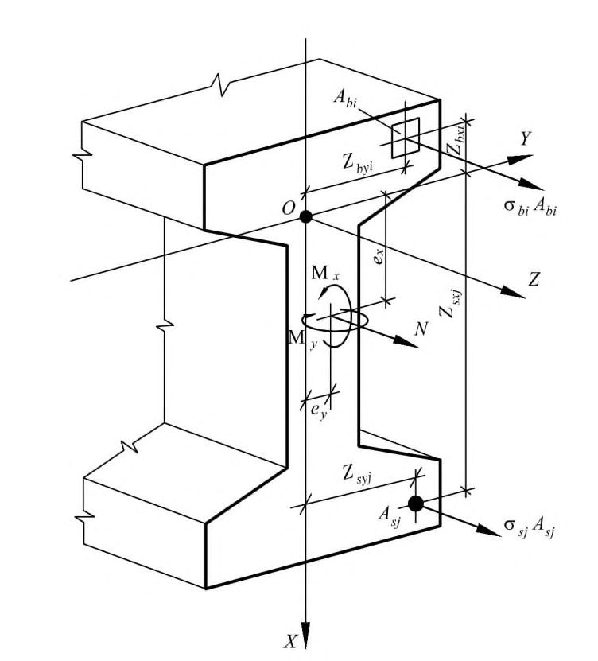
Рисунок 8.9 - Схемы для расчета элементов на местное сжатие при расположении местной нагрузки
где Rbs,loc - приведенное с учетом косвенной арматуры в зоне местного сжатия расчетное сопротивление бетона сжатию, определяемое по формуле
здесь s,xy - коэффициент, определяемый по формуле
Ab , loc , ef - площадь, заключенная внутри контура сеток косвенного армирования, считая по их крайним стержням, и принимаемая в формуле (8.85) не более Аb ,max;
Rs , xy - расчетное сопротивление растяжению косвенной арматуры;
s , xy - коэффициент косвенного армирования, определяемый по формуле
nx , Asx , l x - число стержней, площадь сечения и длина стержня сетки, считая в осях крайних стержней, в направлении Х ; ny , Asy , l y - то же, в направлении Y ; s - шаг сеток косвенного армирования.
Значения Rb,loc , Аb,loc , и N принимают согласно 8.1.44.
Значение местной сжимающей силы, воспринимаемое элементом с косвенным армированием (правая часть условия (8.83)), принимают не более удвоенного значения местной сжимающей силы, воспринимаемого элементом без косвенного армирования (правая часть условия (8.80)).
Косвенное армирование должно соответствовать конструктивным требованиям 10.3.
Расчет железобетонных элементов на продавливание
Общие положения
При расчете на продавливание рассматривают расчетное поперечное сечение, расположенное вокруг зоны передачи усилий на элемент на расстоянии нормально к его 0 2 h продольной оси, по поверхности которого действуют касательные усилия от сосредоточенных силы и изгибающего момента (рисунок 8.10).
Действующие касательные усилия по площади расчетного поперечного сечения должны быть восприняты бетоном с сопротивлением осевому растяжению Rbt и поперечной арматурой, расположенной от грузовой площадки на расстоянии не более h 0 и не менее 0 3 h
, с сопротивлением растяжению Rsw .
При действии сосредоточенной силы касательные усилия, воспринимаемые бетоном и арматурой, принимают равномерно распределенными по всей площади расчетного поперечного сечения. При действии изгибающего момента касательные усилия, воспринимаемые бетоном и поперечной арматурой, принимают линейно изменяющимися по длине расчетного поперечного сечения в направлении действия момента с максимальными касательными усилиями противоположного знака у краев расчетного поперечного сечения в этом направлении.
Рисунок 8.10 - Условная модель для расчета на продавливание
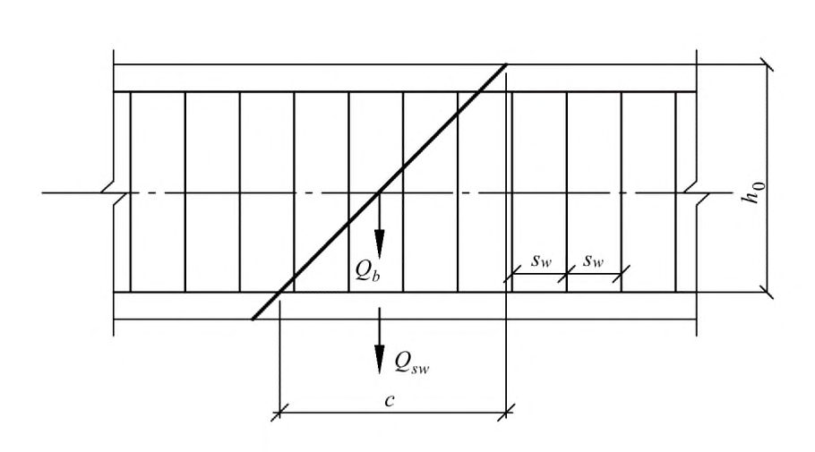
Расчет на продавливание при действии сосредоточенной силы и отсутствии поперечной арматуры производят согласно 8.1.47, при действии сосредоточенной силы и наличии поперечной арматуры - согласно 8.1.48, при действии сосредоточенных силы и изгибающего момента и отсутствии поперечной арматуры - согласно 8.1.49 и при действии сосредоточенных силы и изгибающего момента и наличии поперечной арматуры - согласно 8.1.50.
Расчетный контур поперечного сечения принимают: при расположении площадки передачи нагрузки внутри плоского элемента - замкнутым и расположенным вокруг площадки передачи нагрузки (рисунок 8.11, а , г ), при расположении площадки передачи нагрузки у края или угла плоского элемента - в виде двух вариантов: замкнутым и расположенным вокруг площадки передачи нагрузки, и незамкнутым, следующим от краев плоского элемента (рисунок 8.11, б , в ), в этом случае учитывают наименьшую несущую способность при двух вариантах расположения расчетного контура поперечного сечения.
В случае расположения отверстия в плите на расстоянии менее 6 h от угла или края площадки передачи нагрузки до угла или края отверстия, часть расчетного контура, расположенная между двумя касательными к отверстию, проведенными из центра тяжести площадки передачи нагрузки, в расчете не учитывается.
При действии момента Мloc в месте приложения сосредоточенной нагрузки половину этого момента учитывают при расчете на продавливание, а другую половину - при расчете по нормальным сечениям по ширине сечения, включающей ширину площадки передачи нагрузки и высоту сечения плоского элемента по обе стороны от площадки передачи нагрузки.
При действии сосредоточенных моментов и силы в условиях прочности соотношение между действующими сосредоточенными моментами М , учитываемыми при продавливании, и предельными Мult принимают не более половины соотношения между действующим сосредоточенным усилием F и предельным Fult .
При расположении сосредоточенной силы внецентренно относительно центра тяжести контура расчетного поперечного сечения значения изгибающих сосредоточенных моментов от внешней нагрузки определяют с учетом дополнительного момента от внецентренного приложения сосредоточенной силы относительно центра тяжести контура расчетного поперечного сечения с положительным или обратным знаком по отношению к моментам в колонне.
Значение сосредоточенной силы следует принимать за вычетом сил, действующих в пределах основания пирамиды продавливания в противоположном направлении.
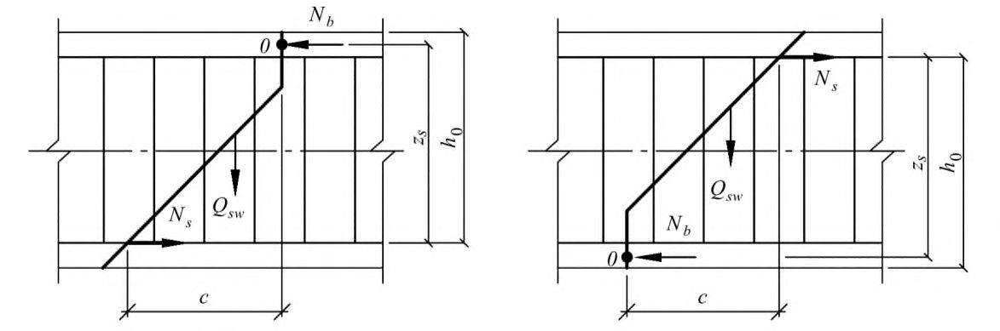
а - площадка приложения нагрузки внутри плоского элемента; б , в - то же, у края плоского элемента; г - при крестообразном расположении поперечной арматуры;
1 - площадь приложения нагрузки; 2 - расчетный контур поперечного сечения; 2' - второй вариант расположения расчетного контура; 3 - центр тяжести расчетного контура (место пересечения осей X 1 и Y 1 ); 4 - центр тяжести площадки приложения нагрузки (место пересечения осей X и Y ); 5 - поперечная арматура; 6 - контур расчетного поперечного сечения без учета в расчете поперечной арматуры; 7 - граница (край) плоского элемента
Рисунок 8.11 - Схема расчетных контуров поперечного сечения при продавливании
Расчет элементов на продавливание при действии сосредоточенной силы
где F - сосредоточенная сила от внешней нагрузки;
Fb , ult - предельное усилие, воспринимаемое бетоном.
Усилие Fb,ult определяют по формуле
где Аb - площадь расчетного поперечного сечения, расположенного на расстоянии 0,5 h 0 от границы площади приложения сосредоточенной силы F с рабочей высотой сечения h 0 (рисунок 8.12).
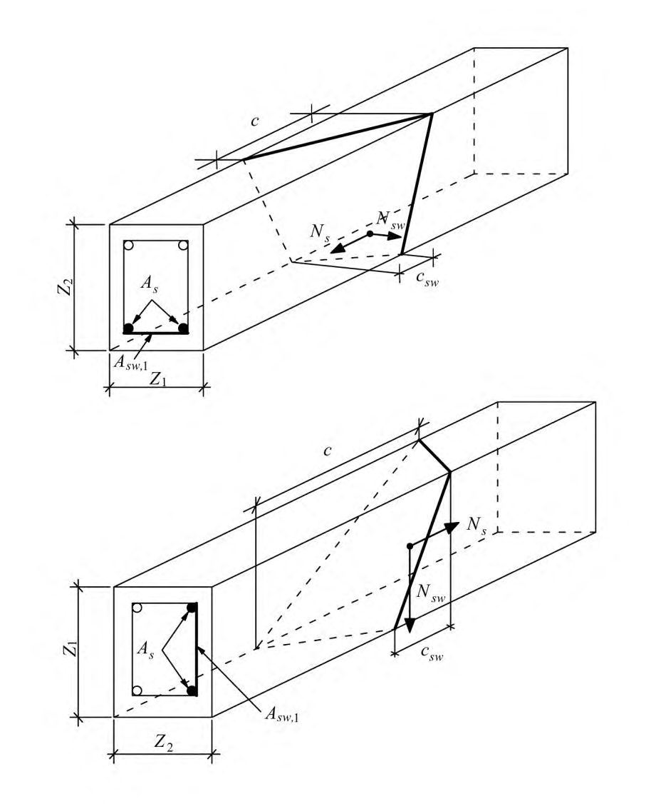
1 - расчетное поперечное сечение; 2 - контур расчетного поперечного сечения; 3 - контур площадки приложения нагрузки
Рисунок 8.12 - Схема для расчета железобетонных элементов без поперечной арматуры на продавливание
Площадь Ab определяют по формуле
где u - периметр контура расчетного поперечного сечения; h 0 - приведенная рабочая высота сечения , 0 0 0 0,5( ) x y h h h = + здесь h 0 x и h 0 y - рабочая высота сечения для продольной арматуры, расположенной в направлении осей Х и Y .
где Fsw , ult - предельное усилие, воспринимаемое поперечной арматурой при продавливании;
Fb , ult - предельное усилие, воспринимаемое бетоном, определяемое согласно 8.1.47.
Усилие Fsw,ult , воспринимаемое поперечной арматурой, нормальной к продольной оси элемента и расположенной равномерно вдоль контура расчетного поперечного сечения, определяют по формуле
где qsw - усилие в поперечной арматуре на единицу длины контура расчетного поперечного сечения, расположенной в пределах расстояния 0,5 h 0 по обе стороны от контура расчетного сечения
Asw - площадь сечения поперечной арматуры с шагом s w, расположенная в пределах расстояния 0,5 h 0 по обе стороны от контура расчетного поперечного сечения по периметру контура расчетного поперечного сечения; u - периметр контура расчетного поперечного сечения, определяемый согласно 8.1.47.
При расположении поперечной арматуры неравномерно по контуру расчетного поперечного сечения, а сосредоточенно у осей площадки передачи нагрузки (крестообразное расположение поперечной арматуры) периметр контура u для поперечной арматуры принимают по фактическим длинам участков расположения поперечной арматуры Lswx и Lswy по расчетному контуру продавливания (рисунок 8.11, г ).
Значение принимают не более 2 Fb , ult . Поперечную арматуру учитывают в расчете при Fsw , ult не менее 0,25 Fb , ult . , , b ult sw ult F F +
За границей расположения поперечной арматуры расчет на продавливание производят согласно 8.1.47, рассматривая контур расчетного поперечного сечения на расстоянии 0,5 h 0 от границы расположения поперечной арматуры (рисунок 8.13). При сосредоточенном расположении поперечной арматуры по осям площадки передачи нагрузки, кроме того, расчетный контур поперечного сечения бетона принимают по диагональным линиям, следующим от края расположения поперечной арматуры (рисунок 8.11, г ).
Поперечная арматура должна удовлетворять конструктивным требованиям, приведенным в 10.3. При нарушении указанных в 10.3 конструктивных требований в расчете на продавливание следует учитывать только поперечную арматуру, пересекающую пирамиду продавливания, при обеспечении условий ее анкеровки.
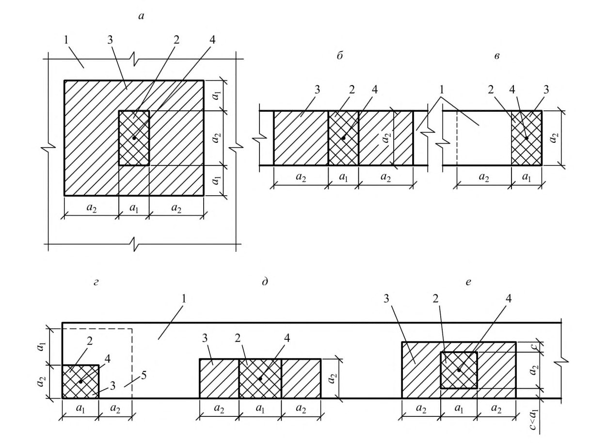
1 - расчетное поперечное сечение; 2 - контур расчетного поперечного сечения; 3 - границы зоны, в пределах которых в расчете учитывается поперечная арматура; 4 - контур расчетного поперечного сечения без учета в расчете поперечной арматуры; 5 - контур площадки приложения нагрузки
Рисунок 8.13 - Схема для расчета железобетонных плит с вертикальной равномерно распределенной поперечной арматурой на продавливание
Расчет элементов на продавливание при действии сосредоточенных силы и изгибающего момента
где F - сосредоточенная сила от внешней нагрузки;
M - сосредоточенный изгибающий момент от внешней нагрузки, учитываемый при расчете на продавливание (8.1.46);
Fb,ult и Mb,ult - предельные сосредоточенные сила и изгибающий момент, которые могут быть восприняты бетоном в расчетном поперечном сечении при их раздельном действии.
- В железобетонном каркасе зданий с плоскими перекрытиями сосредоточенный изгибающий момент Mloc равен суммарному изгибающему моменту в сечениях верхней и нижней колонн, примыкающих к перекрытию в рассматриваемом узле.
Предельную силу Fb,ult определяют согласно 8.1.47.
Предельный изгибающий момент Mb,ult определяют по формуле
где Wb - момент сопротивления расчетного поперечного сечения, определяемый согласно 8.1.51.
При действии изгибающих моментов в двух взаимно перпендикулярных плоскостях расчет производят из условия
где F , Mx и My - сосредоточенные сила и изгибающие моменты в направлениях осей Х и Y , учитываемые при расчете на продавливание (8.1.46), от внешней нагрузки;
Fb,ult , Mbx,ult , Mby,ult - предельные сосредоточенные сила и изгибающие моменты в направлениях осей Х и Y , которые могут быть восприняты бетоном в расчетном поперечном сечении при их раздельном действии.
Усилие Fb,ult определяют согласно 8.1.47.
Усилия Mbx,ult и Mby,ult определяют согласно указаниям, приведенным выше, при действии момента в плоскости осей Х и Y соответственно.
при этом принимают при этом принимают
где F , Mx и My - см. 8.1.49;
F b,ult , Mbx,ult и Mby,ult - предельные сосредоточенные сила и изгибающие моменты в направлениях осей Х и Y , которые могут быть восприняты бетоном в расчетном поперечном сечении при их раздельном действии;
Fsw,ult , Msw , x,ult и Msw,y,ult - предельные сосредоточенные сила и изгибающие моменты в направлениях осей Х и Y , которые могут быть восприняты поперечной арматурой при их раздельном действии.
Усилия Fb,ult , Mbx,ult , Мby,ult и Fsw,ult определяют согласно указаниям 8.1.48 и 8.1.49.
Усилия Msw,x,ult и Msw,y,ult , воспринимаемые поперечной арматурой, нормальной к продольной оси элемента и расположенной равномерно вдоль контура расчетного сечения, определяют при действии изгибающего момента, соответственно в направлении осей Х и Y по формуле
где qsw и Wsw - определяют согласно 8.1.48 и 8.1.52.
Значения , , в условии (8.96) принимают не более 2 Fb , ult , 2 Mbx , ult , 2 Mby , ult соответственно. , , b ult sw ult F F + , , , bx ult sw x ult M M + , , , by ult sw y ult M M +
Поперечная арматура должна отвечать конструктивным требованиям, приведенным в 10.3. При нарушении указанных в разделе 10.3 конструктивных требований в расчете на продавливание следует учитывать только поперечную арматуру, пересекающую пирамиду продавливания, при обеспечении условий ее анкеровки.
где Ibx ( y ) - момент инерции расчетного контура относительно осей Y 1 и Х 1, проходящих через его центр тяжести (рисунок 8.11); x ( y )max - максимальное расстояние от расчетного контура до его центра тяжести;
Значение момента инерции Ibx ( y ) определяют как сумму моментов инерции Ibx ( y ) i отдельных участков расчетного контура поперечного сечения относительно центральных осей, проходящих через центр тяжести расчетного контура, принимая условно ширину каждого участка равной единице.
Положение центра тяжести расчетного контура относительно выбранной оси определяют по формуле
где Li - длина отдельного участка расчетного контура; xi ( yi )0 - расстояние от центров тяжести отдельных участков расчетного контура до выбранных осей.
При расчетах принимают наименьшие значения моментов сопротивления Wbx и Wby .
Момент сопротивления расчетного контура бетона для колонн круглого сечения определяют по формуле
где D - диаметр колонны.
При расположении поперечной арматуры в плоском элементе сосредоточенно по осям грузовой площадки, например по оси колонн (крестообразное расположение поперечной арматуры в перекрытии), моменты сопротивления поперечной арматуры определяют по тем же правилам, что и моменты сопротивления бетона, принимая соответствующую фактическую длину ограниченного участка расположения поперечной арматуры по расчетному контуру продавливания Lswx и Lswy (рисунок 8.11, г ).
Расчет плоскостных железобетонных элементов плит и стен по прочности
Кроме того, при опирании плоских плит на колонны следует производить расчет плит на продавливание на действие сосредоточенных нормальных сил и моментов согласно 8.1.46-8.1.52.
Рисунок 8.14 - Схема усилий, действующих на выделенный плоский элемент единичной ширины
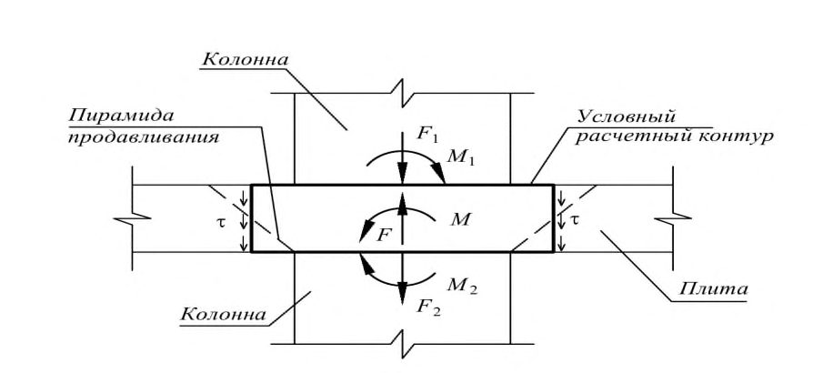
Рисунок 8.15 - Схема усилий, действующих в бетонном и арматурном слоях выделенного плоского элемента плиты (усилия на противоположных сторонах условно не показаны)
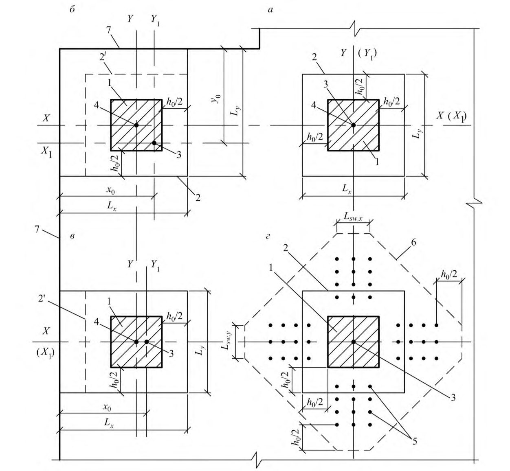
Расчет плоских элементов плит может также производиться без разделения на слои бетона и растянутой арматуры на совместное действие изгибающих и крутящих моментов из условий, основанных на обобщенных уравнениях предельного равновесия:
где Mx , My , Mxy - изгибающие и крутящие моменты, действующие на выделенный плоский элемент;
Mx,ult , My,ult , Mxy,ult - предельные изгибающие и крутящие моменты, воспринимаемые плоским выделенным элементом.
Значения предельных изгибающих моментов Mx . ult и My , ult следует определять из расчета нормальных сечений, перпендикулярных осям X и Y , плоского выделенного элемента с продольной арматурой, параллельной осям X и Y , согласно 8.1.1-8.1.13.
Значения предельных крутящих моментов следует определять по бетону Mbxy , ult и по растянутой продольной арматуре Msxy , ult по формулам:
где b и h - меньший и больший размеры соответственно плоского выделенного элемента;
где Asx и Asy - площади сечения продольной арматуры в направлении осей X и Y ; h 0 - рабочая высота поперечного сечения плиты.
Допускается применять и другие методы расчета по прочности плоского выделенного элемента, полученные на основе равновесия внешних усилий, действующих по боковым сторонам выделенного элемента и внутренних усилий в диагональном сечении плоского выделенного элемента.
При действии на выделенный плоский элемент плит также продольной силы расчет следует производить как для выделенного плоского элемента стен согласно 8.1.57.
где Qx и Qy - поперечные силы, действующие по боковым сторонам плоского выделенного элемента;
Qx,ult и Qy,ult - предельные поперечные силы, воспринимаемые плоским выделенным элементом.
Значения предельных поперечных сил определяют по формуле
где Qb и Qsw - предельные поперечные силы, воспринимаемые соответственно бетоном и поперечной арматурой и определяемые по формулам
где qsw - интенсивность поперечного армирования, определяемая по формуле (8.59).
Рисунок 8.16 - Схема усилий, действующих на выделенный плоский элемент единичной ширины стены (усилия на противоположных сторонах условно не показаны)
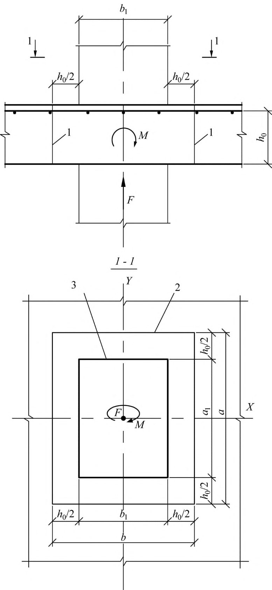
Допускается производить расчет без разделения на слои бетона и растянутой арматуры отдельно из плоскости стены на совместное действие изгибающих моментов, крутящих моментов и нормальных сил и в плоскости стены на совместное действие нормальных и сдвигающих сил.
Расчет стены в своей плоскости производят из условий, основанных на обобщенных уравнениях предельного равновесия:
где Nx , Ny и Nxy - нормальные и сдвигающие силы, действующие по боковым сторонам плоского выделенного элемента;
Nx,ult , Ny,ult и Nxy,ult - предельные нормальные и сдвигающие силы, воспринимаемые плоским выделенным элементом;
Значения предельных нормальных сил Nx,ult и Ny,ult следует определять из расчета нормальных сечений, перпендикулярных осям X и Y , плоского выделенного элемента с вертикальной и горизонтальной арматурой, параллельной осям X и Y , согласно 8.1.148.1.19.
Значения предельных сдвигающих сил следует определять по бетону Nbxy,ult и по арматуре Nsxy,ult по формулам:
где Ab - рабочая площадь поперечного сечения бетона выделенного элемента;
где Asx и Asy - площадь сечения арматуры в направлении осей X и Y в выделенном элементе.
Расчет из плоскости стены производят аналогично расчету плоских плит перекрытий, определяя значения предельных изгибающих моментов с учетом влияния нормальных сил.
Допускается применять и другие методы расчета по прочности плоского выделенного элемента, полученные на основе равновесия внешних усилий, действующих по боковым сторонам выделенного элемента, и внутренних усилий в диагональном сечении выделенного элемента.
Общие положения
- расчет по образованию трещин;
- расчет по раскрытию трещин;
- расчет по деформациям.
Расчет железобетонных элементов по образованию и раскрытию трещин
где М - изгибающий момент от внешней нагрузки относительно оси, нормальной к плоскости действия момента и проходящей через центр тяжести приведенного поперечного сечения элемента;
Мcrc - изгибающий момент, воспринимаемый нормальным сечением элемента при образовании трещин, определяемый по формуле (8.121).
Для центрально-растянутых элементов образование трещин определяют из условия
где N - продольное растягивающее усилие от внешней нагрузки;
Ncrc - продольное растягивающее усилие, воспринимаемое элементом при образовании трещин, определяемое согласно 8.2.13.
Непродолжительное раскрытие трещин определяют от совместного действия постоянных и временных (длительных и кратковременных) нагрузок, продолжительное только от постоянных и временных длительных нагрузок (4.6).
(8.118)
где acrc - ширина раскрытия трещин от действия внешней нагрузки, определяемая согласно 8.2.7, 8.2.15 - 8.2.17. acrc,ult - предельно допустимая ширина раскрытия трещин.
Значения acrc,ult принимают равными:
- а) из условия обеспечения сохранности арматуры
- классов А240…А600, В500:
- 0,3 мм - при продолжительном раскрытии трещин;
- 0,4 мм - при непродолжительном раскрытии трещин;
- классов А800, А1000, Вр1200-Вр1400, К1400, К1500 (К-19) и К1500 (К-7), К1600 диаметром 12 мм и более:
- 0,2 мм - при продолжительном раскрытии трещин;
- 0,3 мм - при непродолжительном раскрытии трещин; классов Вр1500, К1500 (К-7), К1600, К1700, К1800, К1900 диаметром менее 12мм:
- 0,1 мм - при продолжительном раскрытии трещин;
- 0,2 мм - при непродолжительном раскрытии трещин;
- б) из условия ограничения проницаемости конструкций
- 0,2 мм - при продолжительном раскрытии трещин;
- 0,3 мм - при непродолжительном раскрытии трещин.
Ширину продолжительного раскрытия трещин определяют по формуле
а ширину непродолжительного раскрытия трещин - по формуле
где - ширина раскрытия трещин от продолжительного действия постоянных и временных длительных нагрузок; 1 crc a
- ширина раскрытия трещин от непродолжительного действия постоянных и временных (длительных и кратковременных) нагрузок; 2 crc a
- ширина раскрытия трещин от непродолжительного действия постоянных и временных длительных нагрузок. 3 crc a
Определение момента образования трещин, нормальных к продольной оси элемента
Для элементов прямоугольного, таврового или двутаврового сечения с арматурой, расположенной у верхней и нижней граней, момент трещинообразования с учетом неупругих деформаций растянутого бетона допускается определять согласно указаниям 8.2.10-8.2.12.
- сечения после деформирования остаются плоскими;
- эпюру напряжений в сжатой зоне бетона принимают треугольной формы, как для упругого тела (рисунок 8.17);
- эпюру напряжений в растянутой зоне бетона принимают трапециевидной формы с напряжениями, не превышающими расчетных значений сопротивления бетона растяжению Rbt,ser ;
- относительную деформацию крайнего растянутого волокна бетона принимают равной ее предельному значению при кратковременном действии нагрузки (8.1.30); при двухзначной эпюре деформаций в сечении элемента ; , bt ult , 0,00015 bt ult =
- напряжения в арматуре принимают в зависимости от относительных деформаций как для упругого тела.
где Wpl - упругопластический момент сопротивления сечения для крайнего растянутого волокна бетона, определяемый с учетом положений 8.2.10; е
- х - расстояние от точки приложения продольной силы N (расположенной в центре тяжести приведенного сечения элемента) до ядровой точки, наиболее удаленной от растянутой зоны, трещинообразование которой проверяется.
В формуле (8.121) знак «плюс» принимают при сжимающей продольной силе N , «минус» - при растягивающей силе.
1 уровень центра тяжести приведенного поперечного сечения
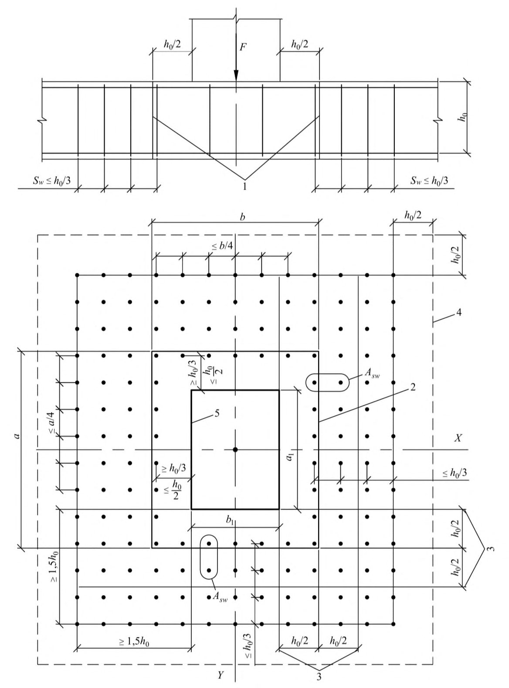
Рисунок 8.17 - Схема напряженно-деформированного состояния сечения элемента при проверке образования трещин при действии изгибающего момента ( а ), изгибающего момента и продольной силы ( б )
Для прямоугольных сечений и тавровых сечений с полкой, расположенной в сжатой зоне, значение Wpl при действии момента в плоскости оси симметрии допускается принимать равным
где Wred - упругий момент сопротивления приведенного сечения по растянутой зоне сечения, определяемый в соответствии с 8.2.12.
где Ired - момент инерции приведенного сечения элемента относительно его центра тяжести, определяемый по формуле
I , I s , I' s - моменты инерции сечений бетона, растянутой арматуры и сжатой арматуры соответственно;
Ared - площадь приведенного поперечного сечения элемента, определяемая по формуле
- коэффициент приведения арматуры к бетону
- площади поперечного сечения бетона, растянутой и сжатой арматуры соответственно; , , s s A A A y t - расстояние от наиболее растянутого волокна бетона до центра тяжести приведенного поперечного сечения элемента
здесь St,red - статический момент площади приведенного поперечного сечения элемента относительно наиболее растянутого волокна бетона.
Допускается момент сопротивления Wred определять без учета арматуры.
Значение Mcrc определяют из решения системы уравнений, представленных в 8.1.208.1.30, принимая относительную деформацию бетона bt, max у растянутой грани элемента от действия внешней нагрузки, равной предельному значению относительной деформации бетона при растяжении bt,ult , определяемому согласно 8.1.30.
Расчет ширины раскрытия трещин, нормальных к продольной оси элемента
( i
=1, 2, 3 - см. 8.2.7) определяют
, crc i
где s - напряжение в продольной растянутой арматуре в нормальном сечении с трещиной от соответствующей внешней нагрузки, определяемое согласно 8.2.16;
- l s - базовое (без учета влияния вида поверхности арматуры) расстояние между смежными нормальными трещинами, определяемое согласно 8.2.17;
- s - коэффициент, учитывающий неравномерное распределение относительных деформаций растянутой арматуры между трещинами; допускается принимать коэффициент s = 1; если при этом условие (8.118) не удовлетворяется, то значение s следует определять по формуле (8.138);
- φ1 - коэффициент, учитывающий продолжительность действия нагрузки, принимаемый равным:
1,0 - при непродолжительном действии нагрузки;
1,4 - при продолжительном действии нагрузки; φ2 - коэффициент, учитывающий профиль продольной арматуры, принимаемый равным:
0,5 - для арматуры периодического профиля и канатной;
0,8 - для гладкой арматуры; φ3 - коэффициент, учитывающий характер нагружения, принимаемый равным:
1,0 - для элементов изгибаемых и внецентренно сжатых;
1,2 - для растянутых элементов.
где - момент инерции и высота сжатой зоны приведенного поперечного сечения элемента, определяемые с учетом площади сечения только сжатой зоны бетона, площадей сечения растянутой и сжатой арматуры согласно 8.2.27, принимая в соответствующих формулах значения коэффициента приведения арматуры к бетону . , red c I y 2 1 s s =
Для изгибаемых элементов yc=x (рисунок 8.18), где х - высота сжатой зоны бетона, определяемая согласно 8.2.28 при . 2 1 s s =
Значение коэффициента приведения арматуры к бетону α s 1 определяют по формуле
где Eb , red - приведенный модуль деформации сжатого бетона, учитывающий неупругие деформации сжатого бетона и определяемый по формуле
Относительную деформацию бетона ε b 1, red
Допускается напряжение s принимают равной 0,0015. определять по формуле
где - расстояние от центра тяжести растянутой арматуры до точки приложения равнодействующей усилий в сжатой зоне элемента. s z
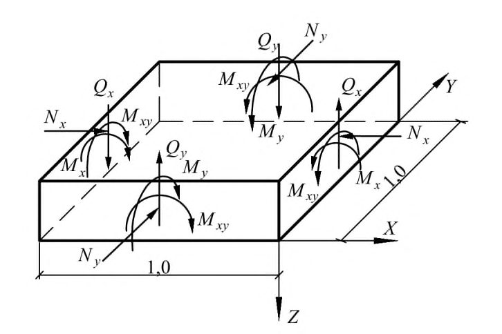
1 - уровень центра тяжести приведенного поперечного сечения
Рисунок 8.18 - Схема напряженно-деформированного состояния элемента с трещинами при действии изгибающего момента ( а , б ), изгибающего момента и продольной силы ( в )
Для элементов прямоугольного поперечного сечения при отсутствии (или без учета) сжатой арматуры значение определяют по формуле s z
Для элементов прямоугольного, таврового (с полкой в сжатой зоне) и двутаврового поперечного сечения допускается значение принимать равным . s z 0 0,8 h
При действии изгибающего момента и продольной силы напряжение в растянутой арматуре определяют по формуле M N s
где - площадь приведенного поперечного сечения элемента и расстояние от наиболее сжатого волокна бетона до центра тяжести приведенного сечения, определяемые по общим правилам расчета геометрических характеристик сечений упругих элементов с учетом площади сечения только сжатой зоны бетона, площадей сечения растянутой и сжатой арматуры согласно 8.2.28, принимая коэффициент приведения арматуры к бетону . , red c A y 1 s
Допускается напряжение определять по формуле s
где еs - расстояние от центра тяжести растянутой арматуры до точки приложения продольной силы N с учетом эксцентриситета, равного . M N
Для элементов прямоугольного сечения при отсутствии (или без учета) сжатой арматуры значение допускается определять по формуле (8.133), в которой - высота сжатой зоны бетона с учетом влияния продольной силы, определяемая согласно 8.2.28, принимая коэффициент приведения арматуры к бетону . s z x m 2 1 s s =
Для элементов прямоугольного, таврового (с полкой в сжатой зоне) и двутаврового поперечного сечения допускается значение принимать равным . s z 0 0,7 h
- В формулах (8.134) и (8.135) знак «плюс» принимают при растягивающей, а знак «минус» при сжимающей продольной силе.
Напряжения s не должны превышать Rs,ser .
и принимают не менее 10 ds и 10 см и не более 40 ds и 40 см; где Аbt - площадь сечения растянутого бетона;
А s - площадь сечения растянутой арматуры; d s - номинальный диаметр арматуры.
Значения Abt определяют по высоте растянутой зоны бетона xt , используя правила расчета момента образования трещин согласно 8.2.8 - 8.2.14.
- В любом случае значение Abt принимают равным площади сечения при ее высоте в пределах не менее 2 a и не более 0,5 h .
где σ s,crc - напряжение в продольной растянутой арматуре в сечении с трещиной сразу после образования нормальных трещин, определяемое по 8.2.16, принимая в соответствующих формулах значения M = Mcrc ; σ s - то же, при действии рассматриваемой нагрузки.
Для изгибаемых элементов значение коэффициента ψ s допускается определять по формуле
где Mcrc определяют по формуле (8.121).
Расчет элементов железобетонных конструкций по деформациям
Расчет по деформациям следует производить на действие:
- постоянных, временных длительных и кратковременных нагрузок (4.6) при ограничении деформаций технологическими или конструктивными требованиями;
- постоянных и временных длительных нагрузок при ограничении деформаций эстетическими требованиями.
Расчет железобетонных элементов по прогибам
где f - прогиб железобетонного элемента от действия внешней нагрузки; f ult - значение предельно допустимого прогиба железобетонного элемента;
Прогибы железобетонных конструкций определяют по общим правилам строительной механики в зависимости от изгибных, сдвиговых и осевых деформационных характеристик железобетонного элемента в сечениях по его длине (кривизн, углов сдвига и т. д.).
- В тех случаях, когда прогибы железобетонных элементов в основном зависят от изгибных деформаций, значения прогибов определяют по жесткостным характеристикам согласно 8.2.22 и 8.2.31.
Определение кривизны железобетонных элементов
- а) для элементов или участков элемента, где в растянутой зоне не образуются нормальные к продольной оси трещины, согласно 8.2.24, 8.2.26;
- б) для элементов или участков элемента, где в растянутой зоне имеются трещины, согласно 8.2.24, 8.2.25 и 8.2.27.
Элементы или участки элементов рассматривают без трещин, если трещины не образуются [т. е. условие (8.116) не выполняется] при действии полной нагрузки, включающей постоянную, временную длительную и кратковременную нагрузки.
Кривизну железобетонных элементов с трещинами и без трещин можно также определять на основе деформационной модели согласно 8.2.32.
для участков с трещинами в растянутой зоне
В формуле (8.140):
кратковременных нагрузок и от продолжительного действия постоянных и временных длительных нагрузок.
В формуле (8.141):
- кривизна от непродолжительного действия всей нагрузки, на которую производят расчет по деформациям; 1 1 r
- кривизна от непродолжительного действия постоянных и временных 2 1 r длительных нагрузок;
- кривизна от продолжительного действия постоянных и временных длительных нагрузок. 3 1 r
Кривизны , и определяют согласно 8.2.25. 1 1 r 2 1 r 3 1 r
где М - изгибающий момент от внешней нагрузки (с учетом момента от продольной силы N ) относительно оси, нормальной плоскости действия изгибающего момента и проходящей через центр тяжести приведенного поперечного сечения элемента;
- D - изгибная жесткость приведенного поперечного сечения элемента, определяемая по формуле
где Eb 1 - модуль деформации сжатого бетона, определяемый в зависимости от продолжительности действия нагрузки и с учетом наличия или отсутствия трещин;
I red - момент инерции приведенного поперечного сечения относительно его центра тяжести, определяемый с учетом наличия или отсутствия трещин.
Значения модуля деформации бетона Eb 1 и момента инерции приведенного сечения Ired для элементов без трещин в растянутой зоне и с трещинами определяют по 8.2.26 и 8.2.27 соответственно.
Жесткость железобетонного элемента на участке без трещин в растянутой зоне
Момент инерции Ired приведенного поперечного сечения элемента относительно его центра тяжести определяют как для сплошного тела по общим правилам сопротивления упругих элементов с учетом всей площади сечения бетона и площадей сечения арматуры с коэффициентом приведения арматуры к бетону .
где I - момент инерции бетонного сечения относительно центра тяжести приведенного поперечного сечения элемента;
I s , I' s - моменты инерции площадей сечения соответственно растянутой и сжатой арматуры относительно центра тяжести приведенного поперечного сечения элемента; α - коэффициент приведения арматуры к бетону
Значение определяют по общим правилам расчета геометрических характеристик сечений упругих элементов. I
Допускается определять момент инерции Ired без учета арматуры.
Значения модуля деформации бетона в формулах (8.143), (8.145) принимают равными: при непродолжительном действии нагрузки
при продолжительном действии нагрузки
где φ b , cr - принимают по таблице 6.12.
Жесткость железобетонного элемента на участке с трещинами в растянутой зоне
Жесткость железобетонного элемента D на участках с трещинами определяют по формуле (8.143) и принимают не более жесткости без трещин.
Значения модуля деформации сжатого бетона Eb 1 принимают равными значениям приведенного модуля деформации Eb,red , определяемым по формуле (6.9) при расчетных сопротивления бетона Rb,ser для соответствующих нагрузок (непродолжительного и продолжительного действия).
Момент инерции приведенного поперечного сечения элемента Ired относительно его центра тяжести определяют по общим правилам сопротивления упругих элементов с учетом площади сечения бетона только сжатой зоны, площадей сечения сжатой арматуры с коэффициентом приведения арматуры к бетону αs 1 и растянутой арматуры с коэффициентом приведения арматуры к бетону αs 2 по формуле
где , , - моменты инерции площадей сечения соответственно сжатой зоны бетона, растянутой и сжатой арматуры относительно центра тяжести приведенного без учета бетона растянутой зоны поперечного сечения. b I s I s I
Значения и определяют по общим правилам сопротивления материалов, принимая расстояние от наиболее сжатого волокна бетона до центра тяжести приведенного (с коэффициентами приведения и ) поперечного сечения без учета бетона растянутой зоны (рисунок 8.19); для изгибаемых элементов s I s I 1 s 2 s
где xm - средняя высота сжатой зоны бетона, учитывающая влияние работы растянутого бетона между трещинами и определяемая согласно 8.2.28 (рисунок 8.19).
Значения и определяют по общим правилам расчета геометрических характеристик сечений упругих элементов. b I cm y
Значения коэффициентов приведения арматуры к бетону α s1 и α s2 определяют по 8.2.30.
где , и - статические моменты соответственно сжатой зоны бетона, растянутой и сжатой арматуры относительно нейтральной оси. 0 b S 0 s S 0 s S
Для прямоугольных сечений только с растянутой арматурой высоту сжатой зоны определяют по формуле
где . 0 s s A b h =
Для прямоугольных сечений с растянутой и сжатой арматурой высоту сжатой зоны определяют по формуле
где . 0 s s A bh =
Для тавровых (с полкой в сжатой зоне) и двутавровых сечений высоту сжатой зоны определяют по формуле
где . 0 f f A bh =
- площадь сечения свесов сжатой полки. f A
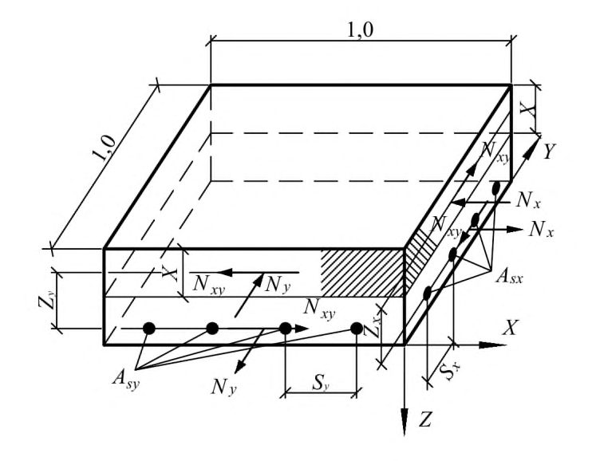
1 - уровень центра тяжести приведенного без учета растянутой зоны бетона поперечного сечения
Рисунок 8.19 - Приведенное поперечное сечение ( а ) и схема напряженно-деформированного состояния элемента с трещинами ( б ) для расчета его по деформациям при действии изгибающего момента
Для внецентренно сжатых и внецентренно растянутых элементов положение нейтральной оси (высоту сжатой зоны) определяют из уравнения
где - расстояние от нейтральной оси до точки приложения продольной силы , отстоящей от центра тяжести полного сечения (без учета трещин) на расстояние y N N
- моменты инерции и статические моменты соответственно сжатой зоны бетона, растянутой и сжатой арматуры относительно нейтральной оси. 0 0 0 0 0 0 , , , , , b s s b s s I I I S S S
Допускается для элементов прямоугольного сечения высоту сжатой зоны при действии изгибающих моментов и продольной силы определять по формуле M N
где - высота сжатой зоны изгибаемого элемента, определяемая по формулам (8.149)(8.152); x M
- момент инерции и площадь приведенного поперечного сечения, определяемые для полного сечения (без учета трещин). , red red I A
Значения геометрических характеристик сечения элемента определяют по общим правилам расчета сечения упругих элементов.
- В формуле (8.154) знак «плюс» принимают при сжимающей, а знак «минус» при растягивающей продольной силе.
где - расстояние от центра тяжести растянутой арматуры до точки приложения равнодействующей усилий в сжатой зоне. z
Для элементов прямоугольного сечения при отсутствии (или без учета) сжатой арматуры значение определяют по формуле z
Для элементов прямоугольного, таврового (с полкой в сжатой зоне) и двутаврового поперечных сечений значение допускается принимать равным . z 0 0,8 h
где Eb , red - приведенный модуль деформации сжатого бетона, определяемый по формуле (6.9) при непродолжительном и продолжительном действии нагрузки, заменяя Rb на Rb,ser ;
E s , red - приведенный модуль деформации растянутой арматуры, определяемый с учетом влияния работы растянутого бетона между трещинами по формуле
Значения коэффициента определяют по формуле (8.138). s
Допускается принимать s =1 и, следовательно, При этом, если условие (8.139) не удовлетворяется, расчет производят с учетом коэффициента s , определяемого по формуле (8.138). 2 1 . s s =
При совместном действии кратковременной и длительной нагрузок полный прогиб элементов без трещин и с трещинами в растянутой зоне определяют путем суммирования прогибов от соответствующих нагрузок по аналогии с суммированием кривизны по 8.2.24, принимая жесткостные характеристики D в зависимости от указанной в этом пункте принятой продолжительности действия рассматриваемой нагрузки.
Допускается при определении жесткостных характеристик D элементов с трещинами в растянутой зоне принимать коэффициент s =1. В этом случае при совместном действии кратковременной и длительной нагрузок полный прогиб изгибаемых элементов с трещинами определяют путем суммирования прогибов от непродолжительного действия кратковременной нагрузки и от продолжительного действия длительной нагрузки с учетом соответствующих значений жесткостных характеристик D , т. е. подобно тому, как это принято для элементов без трещин.
Определение кривизны железобетонных элементов на основе нелинейной деформационной модели
Значения кривизн, входящих в формулы (8.140) и (8.141), определяют из решения системы уравнений (8.26) - (8.30). При этом для элементов с нормальными трещинами в растянутой зоне напряжение в арматуре, пересекающей трещины, определяют по формуле
- относительная деформация растянутой арматуры в сечении с трещиной сразу после образования нормальных трещин;
Здесь , sj crc
- усредненная относительная деформация растянутой арматуры, пересекающей трещины, в рассматриваемой стадии расчета. sj
При определении кривизн от непродолжительного действия нагрузки в расчете используют диаграммы кратковременного деформирования сжатого и растянутого бетона, а при определении кривизн от продолжительного действия нагрузки - диаграммы длительного деформирования бетона с расчетными характеристиками для предельных состояний второй группы.
Для частных случаев действия внешней нагрузки (изгиб в двух плоскостях, изгиб в плоскости оси симметрии поперечного сечения элемента и т.п.) кривизны, входящие в формулы (8.140) и (8.141), определяют из решения систем уравнений, указанных в 8.1.268.1.28.
9Предварительно напряженные железобетонные конструкции
9.1Предварительные напряжения арматуры
При натяжении арматуры на упоры следует учитывать: первые потери -от релаксации предварительных напряжений в арматуре, температурного перепада при термической обработке конструкций, деформации анкеров и деформации формы (упоров); вторые потери - от усадки и ползучести бетона.
При натяжении арматуры на бетон следует учитывать: первые потери - от деформации анкеров, трения арматуры о стенки каналов или поверхность конструкции; где вторые потери - от релаксации предварительных напряжений в арматуре, усадки и ползучести бетона.
для арматуры классов Вр1200 - Вр1500, К1400-К1800 при способе натяжения:
Здесь , МПа, принимается без потерь. sp
При отрицательных значениях принимают . 1 sp 1 0 sp =
При наличии более точных данных о релаксации арматуры допускается принимать иные значения потерь от релаксации.
При отсутствии точных данных по температурному перепаду допускается принимать °С. 65 t =
При наличии более точных данных о температурной обработке конструкции допускается принимать иные значения потерь от температурного перепада.
где n - число стержней (групп стержней), натягиваемых неодновременно;
- сближение упоров по линии действия усилия натяжения арматуры, определяемое из расчета деформации формы; l
- l - расстояние между наружными гранями упоров.
При отсутствии данных о конструкции формы и технологии изготовления допускается принимать =30 МПа. 3 sp
При электротермическом способе натяжения арматуры потери от деформации формы не учитываются.
где - обжатие анкеров или смещение стержня в зажимах анкеров; l - расстояние между наружными гранями упоров. l
При отсутствии данных допускается принимать мм. 2 l =
При электротермическом способе натяжения арматуры потери от деформации анкеров не учитывают.
где - основание натуральных логарифмов; e
- коэффициенты, определяемые по таблице 9.1; ,
- длина участка от натяжного устройства до расчетного сечения, м; x
- суммарный угол поворота оси арматуры, рад;
- принимается без потерь. sp
Таблица 9.1
| Коэффициенты для определения потерь от трения арматуры | Коэффициенты для определения потерь от трения арматуры | Коэффициенты для определения потерь от трения арматуры | |
|---|---|---|---|
| Канал или поверхность | при арматуре в виде | при арматуре в виде | |
| | пучков, канатов | стержней периодического профиля | |
| 1 Канал: | |||
| с металлической поверхностью | 0,0030 | 0,35 | 0,40 |
| с бетонной поверхностью, образованный жестким | 0 | 0,55 | 0,65 |
| то же, гибким каналообразователем | 0,0015 | 0,55 | 0,65 |
| 2 Бетонная поверхность | 0 | 0,55 | 0,65 |
где - деформации усадки бетона, значения которых можно приближенно принимать в зависимости от класса бетона равными: , b sh
0,0002 - для бетона классов В35 и ниже;
0,00025 - для бетона класса В40;
0,0003 - для бетона классов В45 и выше.
Для бетона, подвергнутого тепловой обработке при атмосферном давлении, потери от усадки бетона вычисляют по формуле (9.8) с умножением полученного результата на коэффициент, равный 0,85. 5 sp
Потери от усадки бетона при натяжении арматуры на бетон определяют по формуле (9.8) с умножением полученного результата независимо от условий твердения бетона на коэффициент, равный 0,75. 5 sp
Допускается потери от усадки бетона определять более точными методами.
где - коэффициент ползучести бетона, определяемый согласно 6.1.16; , b cr
- напряжения в бетоне на уровне центра тяжести, рассматриваемой j -й группы стержней напрягаемой арматуры; bpj
- расстояние между центрами тяжести сечения рассматриваемой группы стержней напрягаемой арматуры и приведенного поперечного сечения элемента; sj y
, - площадь приведенного сечения элемента и ее момент инерции относительно центра тяжести приведенного сечения; red A red I μ spj - коэффициент армирования, равный Aspj / A , где A и Aspj - площади поперечного сечения элемента и рассматриваемой группы стержней напрягаемой арматуры соответственно.
Для бетона, подвергнутого тепловой обработке, потери вычисляют по формуле (9.9) с умножением полученного результата на коэффициент, равный 0,85.
Допускается потери от ползучести бетона определять более точными методами.
Напряжения определяют по правилам расчета упругих материалов, принимая приведенное сечение элемента, включающее площадь сечения бетона и площадь сечения всей продольной арматуры (напрягаемой и ненапрягаемой) с коэффициентом приведения арматуры к бетону , согласно 9.1.11. bpj s b E E =
При < 0 принимается и . bpj 6 0 sp = 5 0 sp =
где i - номер потерь предварительного напряжения.
Усилие предварительного обжатия бетона с учетом первых потерь равно:
где и - площадь сечения j -й группы стержней напрягаемой арматуры в сечении элемента и предварительное напряжение в группе с учетом первых потерь spj A (1) sp j
Здесь - начальное предварительное напряжение рассматриваемой группы стержней арматуры. spj
Полные значения первых и вторых потерь предварительного напряжения арматуры (9.1.3-9.1.8) определяют по формуле где . (2) (2) sp j spj sp j = -
При проектировании конструкций полные суммарные потери для арматуры, расположенной в растянутой при эксплуатации зоне сечения элемента (основной рабочей арматуры), следует принимать не менее 100 МПа. (2) sp j
При определении усилия предварительного обжатия бетона Р с учетом полных потерь напряжений следует учитывать сжимающие напряжения в ненапрягаемой арматуре, численно равные сумме потерь от усадки и ползучести бетона на уровне этой арматуры.
При определении усилий обжатия с учетом ненапрягаемой арматуры на уровне ненапрягаемой арматуры, потери от ползучести на этом уровне принимают равными
, где - потери от ползучести для стержней напрягаемой арматуры, 6 bs spj bp 6 spj ближайшей к рассматриваемой ненапрягаемой арматуре; и - напряжения в бетоне на уровне рассматриваемой ненапрягаемой и напрягаемой арматуры соответственно. bs bp
Напряжения в бетоне определяют по формуле bp
где - усилие предварительного обжатия с учетом первых потерь; (1) P
- изгибающий момент от внешней нагрузки, действующий в стадии обжатия (собственный вес элемента); M
- расстояние от центра тяжести сечения до рассматриваемого волокна; y
0 p e - эксцентриситет усилия относительно центра тяжести приведенного поперечного сечения элемента. (1) P
но не менее 10 и 200 мм, а для арматурных канатов также не менее 300 мм. s d
В формуле (9.15):
- предварительное напряжение в напрягаемой арматуре с учетом первых потерь; sp
Усилие в напрягаемой арматуре с учетом полных потерь равно
- сопротивление сцепления напрягаемой арматуры с бетоном, отвечающее передаточной прочности бетона и определяемое согласно 10.3.24; bond R
, - площадь и периметр стержня арматуры. s A s u
Передачу предварительного напряжения с арматуры на бетон следует осуществлять плавно.
9.2Расчет элементов предварительно напряженных железобетонных конструкций по предельным состояниям первой группы
Расчет предварительно напряженных железобетонных элементов по прочности
Общие положения
Расчет по прочности нормальных сечений в общем случае производят на основе нелинейной деформационной модели согласно 9.2.13-9.2.15, а также на основе предельных усилий согласно 9.2.7-9.2.12.
Значения коэффициента принимают равными: sp
0,9 - при благоприятном влиянии предварительного напряжения;
- 1,1 - при неблагоприятном влиянии предварительного напряжения.
Расчет предварительно напряженных элементов на действие изгибающих моментов в стадии эксплуатации по предельным усилиям
Допускается принимать для растянутой арматуры с условным пределом текучести напряжения выше , но не более 1,1 в зависимости от соотношения и R (8.1.5). s R s R
где - предварительное напряжение в арматуре с учетом всех потерь и ; Значения , , Es в формуле (9.16) принимают в МПа. sp 0,9 sp = R для ненапрягаемой арматуры с физическим пределом текучести
- при учете коэффициента условий работы бетона (6.1.12); 500 sp - 1 0,9 b =
Здесь принимают в МПа. sp
Значения определяют с коэффициентом . sp 1,1 sp =
Во всех случаях напряжение принимают не более . sc sc R
Расчет предварительно напряженных элементов в стадии предварительного обжатия
где и - площади сечения напрягаемой арматуры, расположенной соответственно в наиболее обжатой и в растянутой (менее обжатой) зонах сечения; sp A sp A и - предварительные напряжения с учетом первых потерь и коэффициента sp =1,1 в арматуре с площадью сечения и . sp sp sp A sp A
где - расстояние от точки приложения продольной силы с учетом влияния изгибающего момента M от внешней нагрузки, действующей в стадии изготовления (собственная масса элемента), до центра тяжести сечения ненапрягаемой арматуры растянутой или наименее сжатой (при полностью сжатом сечении элемента) от этих усилий (рисунок 9.1), определяемое по формуле p e p N
0 p e - расстояние от точки приложения силы до центра тяжести сечения элемента; p N
- расчетное сопротивление бетона сжатию, принимаемое по линейной интерполяции (таблица 6.8) как для класса бетона по прочности на сжатие, численно равного передаточной прочности бетона ; b R bp R
- расчетное сопротивление ненапрягаемой арматуры сжатию, принимаемое в стадии предварительного обжатия не более 330 МПа; sc R
- площадь сечения ненапрягаемой арматуры, расположенной в наиболее сжатой зоне сечения элемента. s A
Высоту сжатой зоны бетона определяют в зависимости от величины , определяемой по формуле (8.1) с подстановкой в нее значения , где - расчетное сопротивление растянутой ненапрягаемой арматуры , и 0,003: R , s s el s R E = s R s A , b ult =
Рисунок 9.1 - Схема усилий и эпюра напряжений в сечении, нормальном к продольной оси изгибаемого предварительно напряженного элемента при его расчете по прочности в стадии обжатия
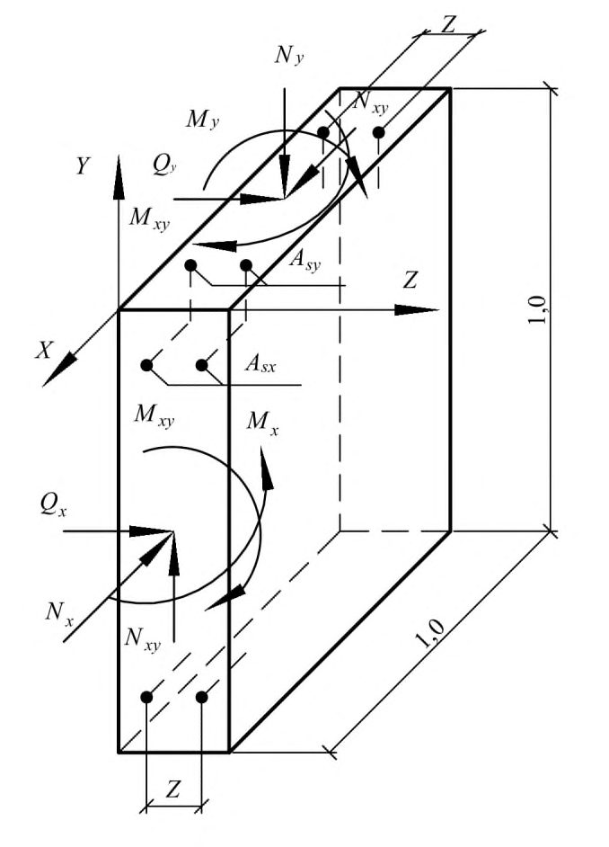
- а) если граница сжатой зоны проходит в полке (рисунок 8.2, а ), т. е. соблюдается условие
расчет производят как для прямоугольного сечения шириной согласно 9.2.11; f b б) если граница сжатой зоны проходит в ребре (рисунок 8.2, б ), т. е. условие (9.22) не соблюдается, расчет производят из условия
- расстояние от центра тяжести сечения элемента до растянутой (наименее сжатой) ненапрягаемой арматуры. s z
Высоту сжатой зоны определяют по формулам:
Расчет по прочности нормальных сечений на основе нелинейной деформационной модели
уравнения, определяющие распределение деформаций от действия внешней нагрузки по сечению элемента напрягаемой арматуры
Рисунок 9.2 - Расчетная схема нормального сечения предварительно напряженного железобетонного элемента
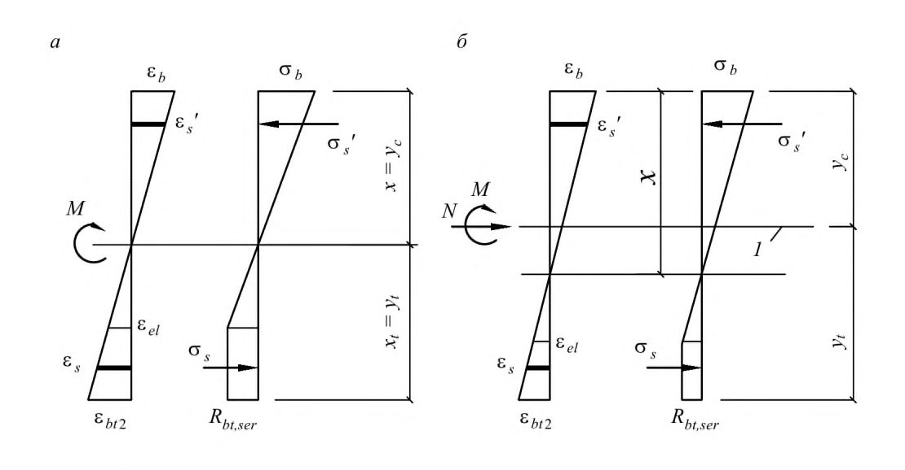
В уравнениях (9.26)-(9.34) :
Asi , Zsxi , Zsyi , si - площадь, координаты центра тяжести i -го стержня напрягаемой арматуры и напряжение в нем;
зависимости, связывающие напряжения и относительные деформации бетона и арматуры: бетона
ненапрягаемой арматуры
- относительная деформация i -го стержня напрягаемой арматуры от действия внешней нагрузки; si
- относительная деформация предварительного напряжения арматуры, spi определяемая с учетом потерь предварительного напряжения, соответствующих рассматриваемой расчетной стадии;
Е si - модуль упругости i -го стержня напрягаемой арматуры;
si - коэффициент упругости i -го стержня ненапрягаемой арматуры, остальные параметры - см. 8.1.23.
Значения коэффициентов bi и sj определяют по указаниям 8.1.23, а значения коэффициентов si - по формуле
Общие положения
- расчет по образованию трещин;
- расчет по раскрытию трещин;
- расчет по деформациям.
Требования по отсутствию трещин предъявляют к предварительно напряженным конструкциям, у которых при полностью растянутом сечении должна быть обеспечена непроницаемость (находящихся под давлением жидкости или газов, испытывающих воздействие радиации и т.п.), к уникальным конструкциям, а также к конструкциям при воздействии сильно агрессивной среды.
Расчет предварительно напряженных железобетонных элементов по образованию и раскрытию трещин
Определение момента образования трещин, нормальных к продольной оси элемента
(прямоугольного и таврового сечений с арматурой, расположенной у верхней и нижней граней сечения, с полкой в сжатой зоне) определять момент трещинообразования согласно 9.3.7.
Допускается момент образования трещин определять без учета неупругих деформаций растянутого бетона, принимая в формуле (9.36) Wpl=Wred . Если при этом условия (8.118) и (8.139) не удовлетворяются, то момент образования трещин следует определять с учетом неупругих деформаций растянутого бетона.
где Wpl - момент сопротивления приведенного сечения для крайнего растянутого волокна с учетом 8.2.10;
0 яp р e e r = + - расстояние от точки приложения усилия предварительного обжатия P до ядровой точки, наиболее удаленной от растянутой зоны, трещинообразование которой проверяется;
0 p e - то же, до центра тяжести приведенного сечения;
- расстояние от центра тяжести приведенного сечения до ядровой точки, r
В формуле (9.36) знак «плюс» принимают, когда направления вращения моментов и внешнего изгибающего момента противоположны; «минус» -когда направления совпадают. яр P e M
Значения и Ared определяют согласно указаниям 8.2. red W
Для прямоугольных сечений и тавровых сечений с полкой, расположенной в сжатой зоне, значение Wpl при действии момента в плоскости оси симметрии допускается определять по формуле (8.122).
Значение Mcrc определяют из решения системы уравнений, представленных в 9.2.139.2.15, принимая относительную деформацию бетона bt, max у растянутой грани элемента от действия внешней нагрузки, равной предельному значению относительной деформации бетона при растяжении bt,ult , определяемому согласно указаниям 8.1.30.
Расчет ширины раскрытия трещин, нормальных к продольной оси элемента
где - момент инерции, площадь приведенного поперечного сечения элемента и расстояние от наиболее сжатого волокна до центра тяжести приведенного сечения, определяемые с учетом площади сечения только сжатой зоны бетона, площадей сечения растянутой и сжатой арматуры согласно 8.2.27, принимая в соответствующих формулах значения коэффициента приведения арматуры к бетону ; , , red red c I A y 2 1 s s =
- внешняя продольная сила, равная усилию предварительного обжатия (9.3.4); p N
- изгибающий момент от внешней нагрузки и усилия предварительного обжатия, определяемый по формуле p M
где 0 p e - расстояние от точки приложения внешней продольной силы до центра тяжести приведенного сечения. p N
Знак «минус» в формуле (9.39) принимают, когда направления вращений моментов и 0 p p N e не совпадают, и «плюс» - когда совпадают. M
Допускается напряжение s определять по формуле
где - расстояние от центра тяжести арматуры, расположенной в растянутой зоне сечения, до точки приложения равнодействующей усилий в сжатой зоне элемента; z
- расстояние от центра тяжести той же арматуры до точки приложения внешней продольной силы Np . sp e
Для элементов прямоугольного поперечного сечения при отсутствии (или без учета) сжатой арматуры значение определяют по формуле z
где - высота сжатой зоны, определяемая согласно 8.2.28 с учетом действия внешней продольной силы Np . x N
Для элементов прямоугольного, таврового (с полкой в сжатой зоне) и двутаврового поперечного сечения допускается значение z принимать равным 0 0,7 h .
Напряжения s , определяемые по формулам (9.38), (9.40), не должны превышать ( Rs,ser - sp ).
Расчет предварительно напряженных железобетонных элементов по деформациям
обжатия.
Допускается при определении кривизны учитывать влияние деформаций усадки и ползучести бетона в стадии предварительного обжатия.
где М - изгибающий момент от внешней нагрузки; и 0 p e - продольная сила, равная усилию предварительного обжатия, и ее эксцентриситет относительно центра тяжести приведенного поперечного сечения элемента; p N
D - изгибная жесткость приведенного поперечного сечения элемента, определяемая по 8.2 как для внецентренно сжатого усилием предварительного обжатия элемента с учетом изгибающего момента от внешней нагрузки (рисунок 9.3).
1 - уровень центра тяжести приведенного без учета растянутой зоны бетона поперечного сечения
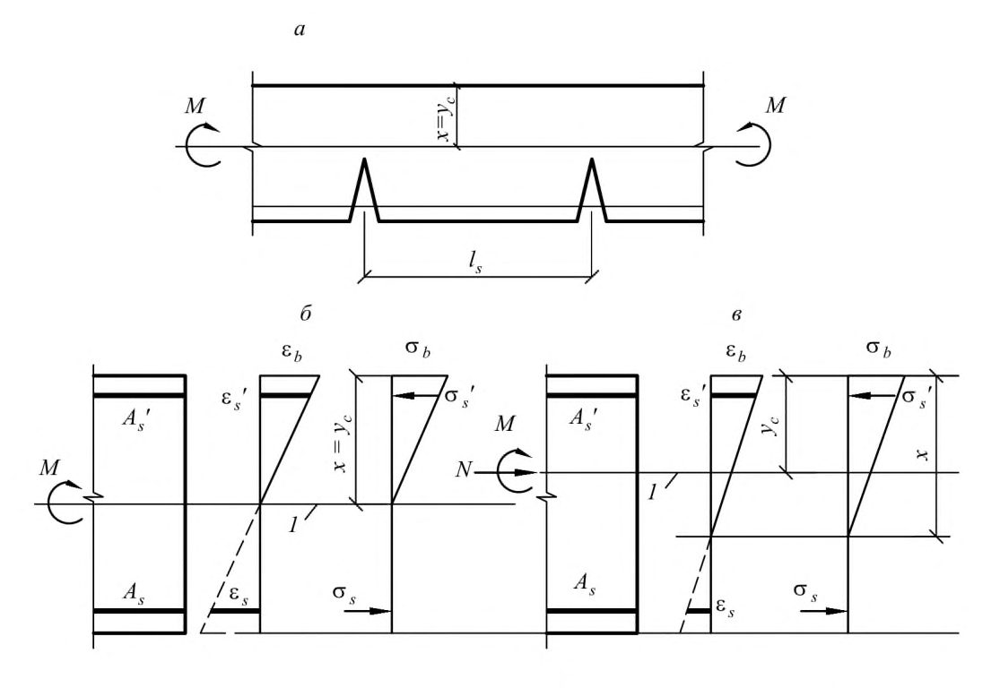
Рисунок 9.3 - Приведенное поперечное сечение ( а ) и схема напряженно-деформированного состояния изгибаемого предварительно напряженного элемента с трещинами ( б ) при его расчете по деформациям
- где - расстояние от точки приложения усилия предварительного обжатия до точки приложения равнодействующей усилий в сжатой зоне; p z
- расстояние от центра тяжести растянутой арматуры до точки приложения равнодействующей усилий в сжатой зоне; z
- высота сжатой зоны с учетом влияния предварительного обжатия. N x
Высоту сжатой зоны определяют как для изгибаемых элементов без преднапряжения . согласно 8.2.28 с умножением значения на s 1 p p N z M +
Значения и допускается определять, принимая расстояние от точки приложения равнодействующей усилий в сжатой зоне до наиболее сжатого волокна сечения равным . p z z 0 0,3 h
Определение кривизны предварительно напряженных элементов на основе нелинейной деформационной модели
Значения кривизн, входящих в формулы (8.140) и (8.141), определяют из решения системы уравнений (9.26)-(9.34) с учетом 9.2.13. При этом для элементов с нормальными трещинами в растянутой зоне напряжение в напрягаемой арматуре, пересекающей трещины, определяют по формуле
а в ненапрягаемой арматуре
Здесь - относительная деформация растянутой арматуры в сечении с трещиной от действия внешней нагрузки сразу после образования трещин; ( ), si j crc
- относительные деформации растянутой арматуры, пересекающей трещины, в рассматриваемой стадии; ( ) si j
- относительная деформация предварительного напряжения арматуры. spi
При определении кривизны от непродолжительного действия нагрузки в расчете применяют диаграммы кратковременного деформирования сжатого и растянутого бетона, а при определении кривизны от продолжительного действия нагрузки - диаграммы длительного деформирования бетона с расчетными характеристиками для предельных состояний второй группы.
10Конструктивные требования
10.1Общие положения
Конструктивные требования устанавливают для случаев, когда:
- расчетом не представляется возможным достаточно точно и определенно полностью гарантировать сопротивление конструкции внешним нагрузкам и воздействиям;
- конструктивные требования определяют граничные условия, в пределах которых могут быть использованы принятые расчетные положения;
- конструктивные требования обеспечивают выполнение технологии изготовления бетонных и железобетонных конструкций.
10.2Требования к геометрическим размерам
- возможность размещения арматуры, анкеровки и совместной работы с бетоном, с учетом подраздела 10.3;
- ограничение гибкости сжатых элементов;
- требуемые показатели качества бетона в конструкции (ГОСТ 13015).
- жесткости следует принимать такими, чтобы их гибкость 0 l
превышала:
- 200 - для железобетонных элементов;
- 120 - для колонн, являющихся элементами зданий;
- 90 - для бетонных элементов.
При неравномерной осадке фундаментов следует предусматривать разделение конструкций осадочными швами.
10.3Требования к армированию
Защитный слой бетона
- совместную работу арматуры с бетоном;
- анкеровку арматуры в бетоне и возможность устройства стыков арматурных элементов;
- сохранность арматуры от воздействий окружающей среды (в том числе агрессивных);
- огнестойкость конструкций.
Минимальные значения толщины слоя бетона рабочей арматуры (в том числе арматуры, расположенной у внутренних граней полых элементов кольцевого или коробчатого сечения) следует принимать по таблице 10.1.
Для сборных элементов минимальные значения толщины защитного слоя бетона рабочей арматуры, указанные в таблице 10.1, уменьшают на 5 мм.
Для конструктивной арматуры минимальные значения толщины защитного слоя бетона принимают на 5 мм меньше по сравнению с требуемыми для рабочей арматуры.
Во всех случаях толщину защитного слоя бетона следует также принимать не менее диаметра стержня арматуры и не менее 10 мм.
В однослойных конструкциях из легкого и поризованного бетонов классов В7,5 и ниже толщина защитного слоя должна составлять не менее 20 мм, а для наружных стеновых
- их в любом направлении не i панелей (без фактурного слоя) - не менее 25 мм. В однослойных конструкциях из ячеистого бетона толщина защитного слоя во всех случаях принимается не менее 25 мм.
Таблица 10.1
| Условие эксплуатации конструкций зданий | Толщина защитного слоя бетона, мм, не менее |
|---|---|
| В закрытых помещениях при нормальной и пониженной влажности | 20 |
| В закрытых помещениях при повышенной влажности (при отсутствии дополнительных защитных мероприятий) | 25 |
| На открытом воздухе (при отсутствии дополнительных защитных мероприятий) | 30 |
| В грунте (при отсутствии дополнительных защитных мероприятий), в фундаментах при наличии бетонной подготовки | 40 |
В защитном слое бетона толщиной более 50 мм изгибаемых, растянутых и внецентренно сжатых элементов (при соотношении M/N >0,3 h от постоянных и длительных нагрузок), кроме фундаментов следует устанавливать конструктивную арматуру в виде сеток с площадью сечения продольной арматуры не менее 0,05 Аs , при этом шаг поперечной арматуры должен быть не более наименьшего размера поперечного сечения элемента.
Допускается защитный слой бетона сечения у опоры для напрягаемой арматуры с анкерами и без них принимать таким же, как для сечения в пролете для предварительно напряженных элементов с сосредоточенной передачей опорных усилий при наличии стальной опорной детали и косвенной арматуры (сварных поперечных сеток или охватывающих продольную арматуру хомутов), установленных согласно 10.3.20.
Минимальные расстояния между стержнями арматуры
- 25 мм - при горизонтальном или наклонном положении стержней при бетонировании - для нижней арматуры, расположенной в один или два ряда;
- 30 мм - то же, для верхней арматуры;
- 50 мм - то же, при расположении нижней арматуры более чем в два ряда (кроме стержней двух нижних рядов), а также при вертикальном положении стержней при бетонировании.
При стесненных условиях допускается располагать стержни группами - пучками (без зазора между ними). При этом расстояния в свету между пучками должны быть также не менее приведенного диаметра стержня, эквивалентного по площади сечения пучка арматуры, принимаемого равным , где dsi - диаметр одного стержня в пучке, 2 , n s red si i d d = n - число стержней в пучке.
Продольное армирование
0,1 % - в изгибаемых, внецентренно растянутых элементах и внецентренно сжатых элементах при гибкости (для прямоугольных сечений ); 0 17 l i 0 5 l h
прямоугольных сечений ); 0 25 l h для промежуточных значений гибкости элементов значение s определяют по интерполяции.
В элементах с продольной арматурой, расположенной равномерно по контуру сечения, а также в центрально-растянутых элементах минимальную площадь сечения всей продольной арматуры следует принимать вдвое большей указанных выше значений и относить ее к полной площади сечения бетона.
Элементы, не удовлетворяющие по значению минимального процента армирования вышеуказанному, следует относить к бетонным.
200 мм - при высоте поперечного сечения h 150 мм;
1,5 h и 400 мм - при высоте поперечного сечения h 150 мм; в железобетонных колоннах:
400 мм - в направлении, перпендикулярном к плоскости изгиба;
500 мм - в направлении плоскости изгиба.
В железобетонных стенах расстояния между стержнями вертикальной арматуры принимают не более 2 t и 400 мм ( t - толщина стены), а горизонтальной - не более 400 мм.
В плитах до опоры следует доводить стержни продольной рабочей арматуры на 1 м ширины плиты с площадью сечения не менее 1/3 площади сечения стержней на 1 м ширины плиты в пролете.
Поперечное армирование
Поперечную арматуру устанавливают у всех поверхностей железобетонных элементов, вблизи которых устанавливается продольная арматура.
Диаметр поперечной арматуры в вязаных каркасах изгибаемых элементов принимают не менее 6 мм.
В сварных каркасах диаметр поперечной арматуры принимают не менее диаметра, устанавливаемого из условия сварки с наибольшим диаметром продольной арматуры.
В сплошных плитах, а также в часторебристых плитах высотой менее 300 мм и в балках (ребрах) высотой менее 150 мм на участках элемента, где поперечная сила по расчету воспринимается только бетоном, поперечную арматуру можно не устанавливать.
В балках и ребрах высотой 150 мм и более, а также в часторебристых плитах высотой 300 мм и более, на участках элемента, где поперечная сила по расчету воспринимается только бетоном, следует предусматривать установку поперечной арматуры с шагом не более 0,75 h 0 и не более 500 мм.
Если содержание сжатой продольной арматуры, устанавливаемой у одной из граней элемента, более 1,5 %, поперечную арматуру следует устанавливать с шагом не более 10 d и не более 300 мм.
Расстояния между стержнями поперечной арматуры в направлении, параллельном сторонам расчетного контура, принимают не более 1/4 длины соответствующей стороны расчетного контура.
По глубине сетки располагают: в пределах удвоенного размера грузовой площади - при толщине элемента более удвоенного бо ́ льшего размера грузовой площади; в пределах толщины элемента - при толщине элемента менее удвоенного бо ́ льшего размера грузовой площади.
При применении в качестве напрягаемой рабочей арматуры высокопрочной арматурной проволоки периодического профиля, арматурных канатов однократной свивки, горячекатаной и термически упрочненной стержневой арматуры периодического профиля, натягиваемой на упоры, установку анкеров у концов напрягаемых стержней допускается не предусматривать.
Анкеровка арматуры
- в виде прямого окончания стержня (прямая анкеровка);
- с загибом на конце в виде крюка, отгиба (лапки) или петли (только для ненапрягаемой арматуры);
- с приваркой дополнительных поперечных стержней, расположенных поперек оси анкеруемого арматурного стержня (только для ненапрягаемой арматуры);
- с установкой дополнительных арматурных изделий в виде П-образных стержней с заведением концов в сжатую зону бетона на длину анкеровки, сварных сеток в направлении анкеруемого арматурного стержня (только для ненапрягаемой арматуры);
- с применением специальных анкерных устройств на конце стержня (пластин, шайб, гаек, высаженных головок и т.п.).
Размеры анкерных устройств и дополнительные поперечные стержни определяют с учетом 10.3.28.
Лапки, крюки и петли не применяют для анкеровки сжатой арматуры, за исключением гладкой арматуры, которая может подвергаться растяжению при некоторых возможных сочетаниях нагрузки.
где As и us - соответственно площадь поперечного сечения анкеруемого стержня арматуры и периметр его сечения, определяемые по номинальному диаметру стержня;
Rbond - расчетное сопротивление сцепления арматуры с бетоном, принимаемое равномерно распределенным по длине анкеровки и определяемое по формуле
здесь Rbt - расчетное сопротивление бетона осевому растяжению;
1 - коэффициент, учитывающий влияние вида поверхности арматуры, принимаемый равным: для ненапрягаемой арматуры:
- 1,5 - для гладкой арматуры;
2,0 - для холоднодеформируемой арматуры периодического профиля;
- 2,5 - для горячекатаной и термомеханически обработанной арматуры периодического профиля; для напрягаемой арматуры:
- 1,7 - для холоднодеформированной арматуры периодического профиля класса Вр1500 диаметром 3 мм и арматурных канатов класса К диаметром 6 и 6,9 мм;
- 1,8 - для холоднодеформированной арматуры класса Вр диаметром 4 мм и более;
- 2,2 - для арматурных канатов класса К диаметром 9 мм и более, изготовленных из гладкой проволоки;
- 2,4 - для арматурных канатов класса К диаметром 9 мм и более, изготовленных из проволоки периодического профиля;
- 2,5 - для горячекатаной и термомеханически обработанной арматуры класса А.
- 2 - коэффициент, учитывающий влияние размера диаметра арматуры, принимаемый равным: для ненапрягаемой арматуры:
2 = 1,0 - при диаметре арматуры ds 32 мм;
2 = 0,9 - при диаметре арматуры 36 и 40 мм; для напрягаемой арматуры:
2 = 1,0 для всех типов напрягаемой арматуры.
где 1 - коэффициент, учитывающий влияние на длину анкеровки напряженного состояния бетона и арматуры и конструктивного решения элемента в зоне анкеровки; l
0, an
- базовая длина анкеровки, определяемая по формуле (10.1);
As,cal , As,ef - площади поперечного сечения арматуры, требуемая по расчету и фактически установленная соответственно.
Для ненапрягаемой арматуры при анкеровке стержней периодического профиля с прямыми концами (прямая анкеровка) или гладкой арматуры с крюками или петлями без дополнительных анкерующих устройств для растянутых стержней принимают 1,0 1 = , а для сжатых 0,75 1 = ; для напрягаемой арматуры 1,0 1 = .
Допускается уменьшать длину анкеровки стержней ненапрягаемой арматуры в зависимости от количества и диаметра поперечной арматуры, вида анкерующих устройств (приварка дополнительных поперечных стержней, загиб концов стержней периодического профиля) и величины поперечного обжатия бетона в зоне анкеровки (например, от опорной реакции), но не более чем на 30%.
В любом случае фактическую длину анкеровки принимают не менее 15 ds и 200 мм, а для ненапрягаемых стержней также не менее 0,3 l 0, аn .
Для элементов из мелкозернистого бетона группы А требуемое расчетное значение длины анкеровки должно быть увеличено на 10 ds для растянутого бетона и на 5 ds - для сжатого.
где lan - длина анкеровки, определяемая согласно 10.3.25, принимая соотношение ;
l s - расстояние от конца анкеруемого стержня до рассматриваемого поперечного сечения элемента.
Соединения ненапрягаемой арматуры
- а) стыки внахлестку без сварки:
- с прямыми концами стержней периодического профиля;
- с прямыми концами стержней с приваркой или установкой на длине нахлестки поперечных стержней;
- с загибами на концах (крюки, лапки, петли); при этом для гладких стержней применяют только крюки и петли.
- б) сварные и механические стыковые соединения:
- со сваркой арматуры;
- с применением специальных механических устройств (стыки с опрессованными муфтами, резьбовыми муфтами и др.).
На соединения арматуры внахлестку распространяется 10.3.22.
Длина перепуска (нахлестки) стыков растянутой или сжатой арматуры должна быть не менее значения длины l l , определяемого по формуле
где l 0, an - базовая длина анкеровки, определяемая по формуле (10.1); As,cal , As , ef - см. 10.3.25;
2 - коэффициент, учитывающий влияние напряженного состояния арматуры, конструктивного решения элемента в зоне соединения стержней, количества стыкуемой арматуры в одном сечении по отношению к общему количеству арматуры в этом сечении, расстояния между стыкуемыми стержнями.
При соединении арматуры периодического профиля с прямыми концами, а также гладких стержней с крюками или петлями без дополнительных анкерующих устройств коэффициент 2 для растянутой арматуры принимают равным 1,2, а для сжатой арматуры - 0,9. При этом должны быть соблюдены следующие условия:
- относительное количество стыкуемой в одном расчетном сечении элемента рабочей растянутой арматуры периодического профиля должно быть не более 50 %, гладкой арматуры (с крюками или петлями) - не более 25 %;
- усилие, воспринимаемое всей поперечной арматурой, поставленной в пределах стыка, должно быть не менее половины усилия, воспринимаемого стыкуемой в одном расчетном сечении элемента растянутой рабочей арматурой;
- расстояние между стыкуемыми рабочими стержнями арматуры не должно превышать 4 ds ;
- расстояние между соседними стыками внахлестку (по ширине железобетонного элемента) должно быть не менее 2 ds и не менее 30 мм.
В качестве одного расчетного сечения элемента, рассматриваемого для определения относительного количества стыкуемой арматуры в одном сечении, принимают участок элемента вдоль стыкуемой арматуры длиной 1,3 l l . Считается, что стыки арматуры расположены в одном расчетном сечении, если центры этих стыков находятся в пределах длины этого участка.
Допускается увеличивать относительное количество стыкуемой в одном расчетном сечении элемента рабочей растянутой арматуры до 100 %, принимая значение коэффициента α2 равным 2,0, а также увеличивать относительное количество стыкуемой в одном расчетном сечении элемента рабочей сжатой арматуры до 100 %, принимая значение коэффициента α2 равным 1,2. При относительном количестве стыкуемой в одном расчетном сечении арматуры периодического профиля более 50 % и гладкой арматуры более 25 % значения коэффициента α2 определяют по линейной интерполяции.
При наличии дополнительных анкерующих устройств на концах стыкуемых стержней (приварка поперечной арматуры, загиб концов стыкуемых стержней периодического профиля и др.) длина перепуска стыкуемых стержней может быть уменьшена, но не более чем на 30 %.
В любом случае фактическая длина перепуска должна быть не менее an l 0, 2 0,4 , не менее 20 ds и не менее 250 мм.
При использовании муфт на резьбе должна быть обеспечена требуемая затяжка муфт для ликвидации люфта в резьбе.
Гнутые стержни
Минимальный диаметр оправки d оп для арматуры принимают в зависимости от диаметра стержня ds не менее:
- для гладких стержней d оп = 2,5 ds при ds < 20 мм; d оп = 4 ds при ds 20 мм; - для стержней периодического профиля d оп = 5 ds при ds < 20 мм; d оп = 8 ds при ds 20 мм.
Диаметр оправки может быть также установлен в соответствии со стандартами на арматуру конкретного вида.
10.4Конструирование основных несущих железобетонных конструкций
Конструкцию поперечной арматуры в пределах поперечного сечения и максимальные расстояния между хомутами и связями по высоте колонны следует принимать такими, чтобы предотвратить выпучивание сжатых продольных стержней и обеспечить равномерное восприятие поперечных сил по высоте колонны.
Максимальное расстояние между вертикальными и горизонтальными стержнями, а также максимальное расстояние между поперечными связями следует принимать такими, чтобы предотвратить выпучивание вертикальных сжатых стержней и обеспечить равномерное восприятие усилий, действующих в стене.
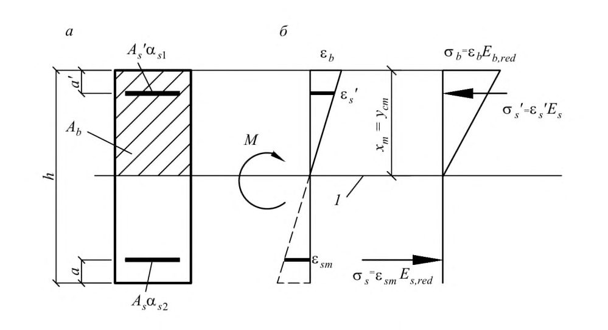
Рисунок 10.1 - Анкеровка с помощью П-образных деталей
Допускается установка части арматуры плит в виде сварных непрерывных каркасов в надколонных полосах плит в двух направлениях (скрытые балки), при этом каркасы должны быть пропущены сквозь тело колонн.
Для сокращения расхода арматуры следует выполнять установку нижней и верхней арматуры, соответствующей минимальному проценту армирования, по всей площади плиты, а на участках, где действующие усилия превышают усилия, воспринимаемые этой арматурой, установку дополнительной арматуры, совместно с вышеуказанной арматурой воспринимающей действующие на этих участках усилия. Армирование фундаментных плит следует производить аналогичным образом.
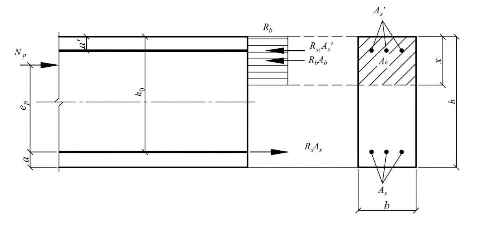
Рисунок 10.2 - Узлы сопряжения балок с колоннами
Рисунок 10.3 - Размещение опорной арматуры в зоне пересечения двух балок
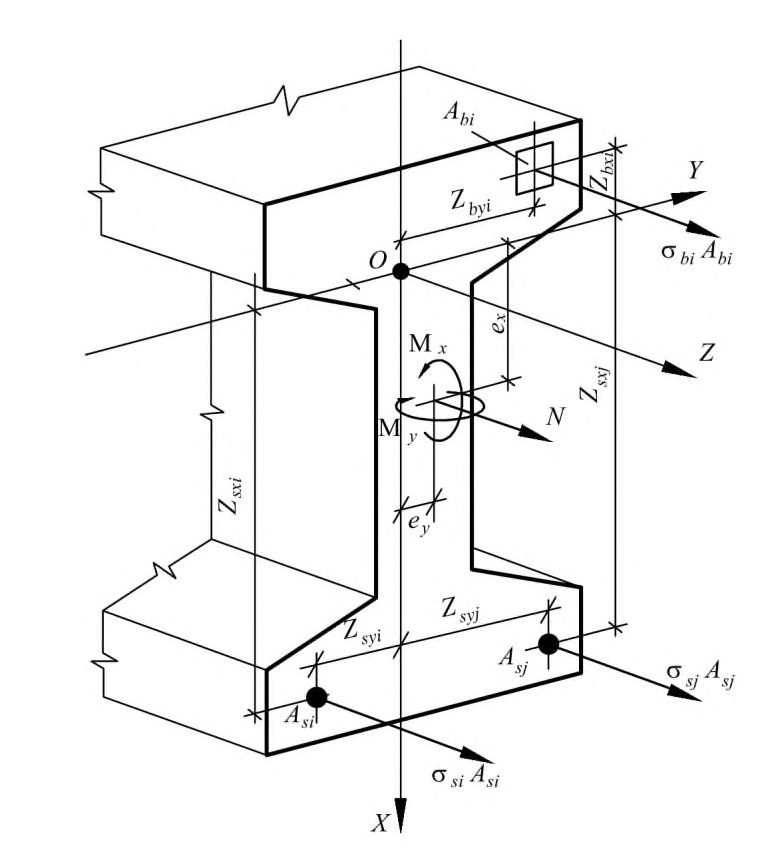
В таких конструкциях расстояния в свету между стержнями рабочей арматуры по ширине сечения определяются крупностью заполнителя бетона, но не менее 2,5 d , где d -диаметр рабочей арматуры.
По периметру и у свободных краев таких плит следует устанавливать поперечную арматуру в виде П-образных деталей, обеспечивающих восприятие крутящих моментов у края плиты и необходимую анкеровку концевых участков продольной арматуры.
Диаметр поперечной арматуры в вязаных каркасах таких плит принимают не менее 8 мм. В сварных каркасах диаметр поперечной арматуры принимают не менее диаметра, устанавливаемого из условия сварки с наибольшим диаметром продольной арматуры.
Конструирование поперечной арматуры в зоне продавливания в таких плитах выполняют согласно 10.3.17, при этом шаг поперечной арматуры в зоне продавливания в направлении, перпендикулярном к сторонам расчетного контура, устанавливают с шагом не более 1/3 h 0 и не более 500 мм.
11Требования к изготовлению, возведению и эксплуатации бетонных и железобетонных конструкций
11.1Бетон
За основу при подборе состава бетона следует принимать определяющий для данного вида бетона и назначения конструкции показатель бетона. При этом должны быть обеспечены и другие установленные проектом показатели качества бетона.
Проектирование и подбор состава бетона по требуемой прочности бетона следует производить согласно ГОСТ 26633, ГОСТ 27006.
При подборе состава бетона должны быть обеспечены требуемые технологические показатели качества бетонной смеси (удобоукладываемость, сохраняемость, нерасслаиваемость, воздухосодержание и другие показатели).
Свойства подобранного состава бетона должны соответствовать технологии производства бетонных работ, включающей сроки и условия твердения бетона, способы, режимы приготовления и транспортирования бетонной смеси и другие особенности технологического процесса (ГОСТ 7473, ГОСТ 10181).
Подбор состава бетона следует производить на основе характеристик материалов, применяемых для его приготовления, включающих вяжущие, заполнители, воду и эффективные добавки (модификаторы) (ГОСТ 8267, ГОСТ 8736, ГОСТ 23732, ГОСТ 24211, ГОСТ 31108).
При подборе состава бетона следует применять материалы с учетом их экологической чистоты (ограничение по содержанию радионуклидов, радона, токсичности и т.п.).
При подборе состава бетона его расчет производят на основании установленных зависимостей, полученных экспериментально.
Перемешиванием бетонной смеси должно быть обеспечено равномерное распределение компонентов по всему объему смеси. Продолжительность перемешивания принимают в соответствии с инструкциями предприятий-изготовителей бетоносмесительных установок (заводов) или устанавливают опытным путем.
Применяемые способы и режимы формования должны обеспечивать заданную однородность и плотность и устанавливаются с учетом показателей качества бетонной смеси, вида конструкции и изделия и конкретных инженерно-геологических и производственных условий.
Порядок бетонирования следует устанавливать, предусматривая расположение швов бетонирования с учетом технологии возведения сооружения и его конструктивных особенностей. При этом должна быть обеспечена необходимая прочность контакта поверхностей бетона в шве бетонирования, а также прочность конструкции с учетом наличия швов бетонирования.
При укладке бетонной смеси при пониженных положительных и отрицательных или повышенных положительных температурах должны быть предусмотрены специальные мероприятия по защите бетона конструкции от температурного воздействия.
В бетоне в процессе твердения следует поддерживать расчетный температурновлажностный режим. При необходимости для создания условий, обеспечивающих нарастание прочности бетона и снижение усадочных явлений, следует применять специальные защитные мероприятия. В технологическом процессе тепловой обработки изделий должны быть приняты меры по снижению температурных перепадов и взаимных перемещений между опалубочной формой и бетоном.
В массивных монолитных конструкциях следует предусматривать мероприятия по уменьшению влияния температурно-влажностных полей напряжений, связанных с экзотермией при твердении бетона, на работу конструкций.
11.2Арматура
Условиями хранения арматуры и ее транспортирования должна быть исключена возможность загрязнения, коррозионного поражения, механического повреждения или появления пластических деформаций, ухудшающих сцепление с бетоном.
Установку сварных арматурных изделий в опалубочные формы следует производить в соответствии с проектом. При этом должна быть предусмотрена надежная фиксация положения арматурных изделий с помощью мероприятий, обеспечивающих невозможность смещения арматурных изделий в процессе установки и бетонирования.
Отклонения арматурных изделий от проектного положения при их установке не должны превышать допустимых значений, установленных СП 70.13330.
При отпуске натяжения арматуры следует обеспечивать плавную передачу предварительного напряжения на бетон.
11.3Опалубка
При изготовлении конструкций применяют инвентарную и специальную, переставную и передвижную опалубку (ГОСТ 34329, ГОСТ Р 52086, ГОСТ 25781).
Опалубку и ее крепления следует проектировать и изготавливать таким образом, чтобы они могли воспринять нагрузки, возникающие в процессе производства работ, позволяли конструкциям свободно деформироваться и обеспечивали соблюдение допусков в пределах, установленных для конкретной конструкции или сооружения.
Опалубка и крепления должны соответствовать принятым способам укладки и уплотнения бетонной смеси, условиям предварительного напряжения, твердения бетона и тепловой обработки.
Съемную опалубку следует проектировать и изготавливать таким образом, чтобы была обеспечена распалубка конструкции без повреждения бетона.
Распалубку конструкций следует производить после набора бетоном распалубочной прочности.
Несъемную опалубку следует проектировать как составную часть конструкции.
11.4Бетонные и железобетонные конструкции
Готовые конструкции должны соответствовать проекту и ГОСТ 13015. Отклонения геометрических размеров должны укладываться в пределах допусков, установленных для конкретной конструкции.
В сборных бетонных и железобетонных конструкциях должна быть обеспечена установленная проектом отпускная прочность бетона (прочность бетона при отправке конструкции потребителю), а для предварительно напряженных конструкций -установленная проектом передаточная прочность (прочность бетона при отпуске натяжения арматуры).
В монолитных конструкциях должна быть обеспечена распалубочная прочность бетона в установленном проектом возрасте (при снятии несущей опалубки).
При возведении зданий и сооружений из монолитного бетона следует предусматривать последовательности бетонирования конструкций, снятия и перестановки опалубки, обеспечивающие прочность, трещиностойкость и жесткость конструкций в процессе возведения. Кроме этого следует предусматривать мероприятия (конструктивные и технологические, а при необходимости - выполнение расчета), ограничивающие образование и развитие технологических трещин.
Отклонения конструкций от проектного положения не должны превышать допустимых значений, установленных для соответствующих конструкций (колонн, балок, плит) зданий и сооружений (СП 70.13330).
11.5Контроль качества
Способы контроля качества (правила контроля, методы испытаний) регламентируются соответствующими стандартами и техническими условиями.
Для монолитных конструкций следует производить сплошной контроль прочности бетона неразрушающими методами, с обязательным построением градуировочных зависимостей. В исключительных случаях (при отсутствии доступа к конструкциям) допускается проведение контроля прочности бетона монолитных конструкций по контрольным образцам, изготовленным на месте укладки бетонной смеси и твердевшим в условиях, идентичным твердению бетона в конструкциях.
Оценку прочности бетона следует проводить статистическими методами по ГОСТ 18105 с учетом фактической однородности бетона по прочности. При контроле прочности бетона неразрушающими методами однородность прочности бетона определяют с учетом погрешности применяемых неразрушающих методов определения прочности бетона.
Применение нестатистических методов контроля прочности бетона допускается для единичных конструкций или в начальный период производства, или при применении неразрушающих методов определения прочности бетона с использованием универсальных зависимостей с их привязкой к бетону контролируемой партии без построения градуировочных зависимостей, а также, в исключительных случаях, при контроле прочности бетона монолитных конструкций по контрольным образцам, изготовленным на строительной площадке по ГОСТ 18105.
Контроль качества сварочных работ производят согласно СП 70.13330, ГОСТ 10922, ГОСТ 23858.
Приемку сборных бетонных и железобетонных изделий и конструкций следует осуществлять по СП 130.13330 и ГОСТ 13015.
12Требования к восстановлению и усилению железобетонных конструкций
12.1Общие положения
Восстановление и усиление железобетонных конструкций следует производить на основе результатов их натурного обследования, поверочного расчета, расчета и конструирования усиливаемых конструкций.
12.2Натурные обследования конструкций
Натурными обследованиями в зависимости от конкретной задачи должны быть установлены: состояние конструкции, геометрические размеры конструкций, армирование конструкций, прочность бетона, вид и класс арматуры и ее состояние, прогибы конструкций, ширина раскрытия трещин, их длина и расположение, размеры и характер дефектов и повреждений, нагрузки, статическая схема конструкций.
12.3Поверочные расчеты конструкций
На основе поверочных расчетов устанавливают пригодность конструкций к эксплуатации, необходимость их усиления, необходимость эксплуатационной нагрузки или полную непригодность конструкций.
Расчетные схемы при проведении поверочных расчетов следует принимать с учетом установленных фактических геометрических размеров, фактического соединения и взаимодействия конструкций и элементов конструкций, выявленных отклонений при монтаже.
При отсутствии проектных данных и невозможности отбора образцов допускается класс арматуры устанавливать по виду профиля арматуры, а расчетные сопротивления принимать на 20 % ниже соответствующих значений, отвечающих данному классу.
Для конструкций, не удовлетворяющих требованиям поверочных расчетов по эксплуатационной пригодности, допускается не предусматривать усиления либо снижения нагрузки, если фактические прогибы превышают допустимые значения, но не препятствуют нормальной эксплуатации, а также если фактическое раскрытие трещин превышает допустимые значения, но не создает опасности разрушения.
12.4Усиление железобетонных конструкций
При заделке трещин с шириной раскрытия более допустимой и других дефектов бетона следует обеспечивать равнопрочность участков конструкций, подвергнувшихся восстановлению, с основным бетоном.
Расчетные значения характеристик материалов усиливаемой конструкции принимают исходя из проектных данных с учетом результатов обследования согласно правилам, принятым при поверочных расчетах.
13Расчет железобетонных конструкций на выносливость
Расчет на выносливость выполняют по упругой стадии с трещинами. Работу растянутого бетона и сжатой арматуры не учитывают и их прочность на выносливость не рассчитывается.
При определении расчетных сопротивлений бетона по выносливости следует учитывать вид бетона (тяжелый или легкий), а также состояние бетона по влажности. При определении расчетных сопротивлений арматуры по выносливости следует учитывать наличие сварных соединений.
Асимметрия циклов нагружений характеризуется отношением минимальных и максимальных напряжений в бетоне и арматуре в пределах цикла изменения нагрузки.
АПриложение А. Основные буквенные обозначения
Усилия от внешних нагрузок и воздействий в поперечном сечении элемента
- М -изгибающий момент;
- Мр -изгибающий момент с учетом момента усилия предварительного обжатия относительно центра тяжести приведенного сечения;
- N -продольная сила;
- Q -поперечная сила;
- T -крутящий момент.
Характеристики материалов
Rb,n -нормативное сопротивление бетона осевому сжатию;
- Rb, Rb,ser -расчетные сопротивления бетона осевому сжатию для предельных состояний соответственно первой и второй групп;
- Rbt,n -нормативное сопротивление бетона осевому растяжению;
- Rbt, Rbt,ser -расчетные сопротивления бетона осевому растяжению для предельных состояний соответственно первой и второй групп;
- Rb,loc -расчетное сопротивление бетона смятию;
Rbp -передаточная прочность бетона;
- Rbond -расчетное сопротивление сцепления арматуры с бетоном;
- Rs, Rs,ser -расчетные сопротивления арматуры растяжению для предельных состояний соответственно первой и второй групп;
- Rsw -расчетное сопротивление поперечной арматуры растяжению;
- Rsc -расчетное сопротивление арматуры сжатию для предельных состояний первой группы;
- Eb -начальный модуль упругости бетона при сжатии и растяжении;
- Eb,red -приведенный модуль деформации сжатого бетона;
Es -модуль упругости арматуры;
- Es,red -приведенный модуль деформации арматуры, расположенной в растянутой зоне элемента с трещинами;
- b 0 , bt 0 -предельные относительные деформации бетона соответственно при равномерном осевом сжатии и осевом растяжении;
- s 0 -относительные деформации арматуры при напряжении, равном Rs ;
- b,sh -относительные деформации усадки бетона;
- b,cr -коэффициент ползучести бетона;
- -отношение соответствующих модулей упругости арматуры Es и бетона Eb .
Характеристики положения продольной арматуры в поперечном сечении элемента
- S -обозначение продольной арматуры:
- а) при наличии сжатой и растянутой от действия внешней нагрузки зон сечения - расположенной в растянутой зоне;
- б) при полностью сжатом от действия внешней нагрузки сечении - расположенной у менее сжатой грани сечения;
- в) при полностью растянутом от действия внешней нагрузки сечении:
- b -
- для внецентренно растянутых элементов - расположенной у более растянутой грани сечения;
- для центрально-растянутых элементов - всей в поперечном сечении элемента;
- S -обозначение продольной арматуры:
- а) при наличии сжатой и растянутой от действия внешней нагрузки зон сечения - расположенной в сжатой зоне;
- б) при полностью сжатом от действия внешней нагрузки сечении расположенной у более сжатой грани сечения;
- в) при полностью растянутом от действия внешней нагрузки сечении внецентренно растянутых элементов - расположенной у менее растянутой грани сечения.
Геометрические характеристики
- ширина прямоугольного сечения;
- ширина ребра таврового и двутаврового сечений;
- bf, b'f -ширина полки таврового и двутаврового сечений соответственно в растянутой и сжатой зонах;
- h -высота прямоугольного, таврового и двутаврового сечений;
- hf, h'f -высота полки таврового и двутаврового сечений соответственно в растянутой и сжатой зонах;
- a, a' -расстояние от равнодействующей усилий в арматуре соответственно S и S до ближайшей грани сечения;
- h 0 , h' 0 -рабочая высота сечения, равная соответственно h -a и h -a' ;
- x -высота сжатой зоны бетона;
- -относительная высота сжатой зоны бетона, равная ; 0 x h
- sw -расстояние между хомутами, измеренное по длине элемента;
- e 0 -эксцентриситет продольной силы N относительно центра тяжести приведенного сечения, определяемый с учетом 7.1.7 и 8.1.7;
- e, e' -расстояния от точки приложения продольной силы N до равнодействующей усилий в арматуре соответственно S и S ;
- е 0 р -эксцентриситет усилия предварительного обжатия относительно центра тяжести приведенного сечения;
- yn -расстояние от нейтральной оси до точки приложения усилия предварительного обжатия с учетом изгибающего момента от внешней нагрузки;
- ер -расстояние от точки приложения усилия предварительного обжатия Nр с учетом изгибающего момента от внешней нагрузки до центра тяжести растянутой или наименее сжатой арматуры;
- l -пролет элемента;
- l an -длина зоны анкеровки;
- l р -длина зоны передачи предварительного напряжения в арматуре на бетон;
- l 0 -расчетная длина элемента, подвергающегося действию сжимающей продольной силы;
- i -радиус инерции поперечного сечения элемента относительно центра тяжести сечения;
- ds , dsw -номинальный диаметр стержней соответственно продольной и поперечной арматуры;
- As,A's -площади сечения арматуры соответственно S и S ;
- Asw -площадь сечения хомутов, расположенных в одной нормальной к продольной оси элемента плоскости, пересекающей наклонное сечение;
- s -коэффициент армирования, определяемый как отношение площади сечения арматуры S к площади поперечного сечения элемента b h 0 без учета свесов сжатых и растянутых полок;
- A -площадь всего бетона в поперечном сечении;
- Ab -площадь сечения бетона сжатой зоны;
- Abt -площадь сечения бетона растянутой зоны;
- Ared -площадь приведенного сечения элемента;
Aloc -площадь смятия бетона;
- I -момент инерции сечения всего бетона относительно центра тяжести сечения элемента;
- Ired -момент инерции приведенного сечения элемента относительно его центра тяжести;
- W -момент сопротивления сечения элемента для крайнего растянутого волокна.
Характеристики предварительно напряженного элемента
- P, Np -усилие предварительного обжатия с учетом потерь предварительного напряжения в арматуре, соответствующих рассматриваемой стадии работы элемента;
- P (1) , P (2) -усилие в напрягаемой арматуре с учетом соответственно первых и всех потерь предварительного напряжения;
- sp -предварительное напряжение в напрягаемой арматуре с учетом потерь предварительного напряжения в арматуре, соответствующих рассматриваемой стадии работы элемента;
- sp -потери предварительного напряжения в арматуре;
- bp -сжимающие напряжения в бетоне в стадии предварительного обжатия с учетом потерь предварительного напряжения в арматуре.
В формулах (Б.1)-(Б.6):
М , N , Q - момент, нормальная и сдвигающая силы, действующие на закладную деталь соответственно; момент определяется относительно оси, расположенной в плоскости наружной грани пластины и проходящей через центр тяжести всех анкеров;
- nan - число рядов анкеров вдоль направления сдвигающей силы; если не обеспечивается равномерная передача сдвигающей силы Q на все ряды анкеров, то при определении сдвигающего усилия Qan учитывается не более четырех рядов; z
- расстояние между крайними рядами анкеров; суммарная площадь поперечного сечения анкеров наиболее напряженного ряда. , an j A -
Площадь сечения анкеров остальных рядов должна приниматься равной площади сечения анкеров наиболее напряженного ряда.
БПриложение Б. Расчет закладных деталей
Б.1 Расчет нормальных анкеров, приваренных втавр к плоским элементам стальных закладных деталей, на действие изгибающих моментов, нормальных и сдвигающих сил от статической нагрузки, расположенных в одной плоскости симметрии закладной детали, производят из условия
где наибольшее растягивающее усилие в одном ряду анкеров, равное: , an j N -
- сдвигающее усилие, приходящееся на один ряд анкеров, равное: , an j Q -
N an - наибольшее сжимающее усилие в одном ряду анкеров, определяемое по формуле
сдвигающая сила, воспринимаемая анкерами, определяется по формуле , ,0 an j Q -
где коэффициент, принимаемый равным 1,65; , s sh - предельная растягивающая сила, воспринимаемая одним рядом анкеров, определяют по формуле , ,0 an j N -
В формулах (Б.2) и (Б.4) нормальная сила N считают положительной, если направлена от закладной детали (рисунок Б.1), и отрицательной - если направлена к ней. В случаях, когда Nan получает отрицательное значение, то в формуле (Б.3) принимают N an = N .
При расположении закладной детали на верхней (при бетонировании) поверхности изделия значение N an принимают равным нулю.
Рисунок Б.1 - Схема усилий, действующих на закладную деталь
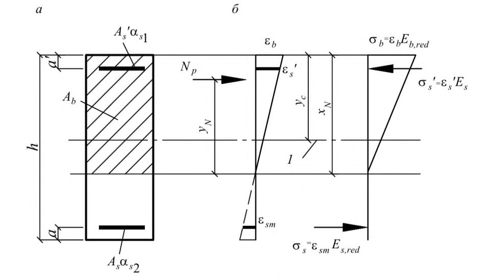
Б.2 В закладной детали с анкерами, приваренными внахлестку под углом от 15° до 30°, наклонные анкеры рассчитывают на действие сдвигающей силы (при Q N , где N - отрывающая сила) по формуле
где Aan,inc - суммарная площадь поперечного сечения наклонных анкеров;
N an - по формуле (Б.4).
При этом должны устанавливаться нормальные анкеры, рассчитываемые по формуле (Б.1) при значениях Qan , равных 0,1 сдвигающего усилия, определяемого по формуле (Б.3).
Б.3 Конструкция сварных закладных деталей с приваренными к ним элементами, передающими нагрузку на закладные детали, должна обеспечивать включение в работу анкерных стержней в соответствии с принятой расчетной схемой. Внешние элементы закладных деталей и их сварные соединения рассчитываются согласно СП 16.13330. При расчете пластин и фасонного проката на отрывающую силу принимается, что они шарнирно соединены с нормальными анкерными стержнями.
Кроме того, толщина пластины t расчетной закладной детали, к которой привариваются втавр анкеры, должна проверяться из условия
где dan - диаметр анкерного стержня, требуемый по расчету;
R sq - расчетное сопротивление стали на срез, принимаемое согласно СП 16.13330.
Для типов сварных соединений, обеспечивающих большую зону включения пластины в работу при вырывании из нее анкерного стержня и соответствующем обосновании возможна корректировка условия (Б.8) для уменьшения толщины пластины.
Толщина пластины должна также удовлетворять технологическим требованиям по сварке.
Б.4 При наличии растягивающих усилий во всех нормальных или наклонных анкерах, приваренных к плоским элементам закладной детали, необходимо предусмотреть обеспечение прочности бетона на выкалывание по соответствующим поверхностям выкалывания.
Расчет на выкалывание допускается не производить, если концы анкеров заведены за продольную арматуру, расположенную у противоположной от закладной детали грани железобетонной конструкции, а усиления анкеров в виде пластин или поперечных коротышей зацепляются за стержни продольной арматуры диаметром: не менее 20 мм - при симметричном зацеплении, не менее 25 мм - при несимметричном. При этом участок железобетонной конструкции между крайними рядами анкеров проверяется на действие соответствующей поперечной силы.
При действии сдвигающих усилий на закладную деталь по направлению к краю железобетонной конструкции также необходимо предусматривать обеспечение прочности на откалывание бетона.
ВПриложение В. Расчет конструктивных систем
В.1 Расчет несущих конструктивных систем должен включать: определение усилий в элементах конструктивной системы (колоннах, плитах перекрытий и покрытия, фундаментных плитах, стенах, ядрах) и усилий, действующих на основания фундаментов; определение перемещений конструктивной системы в целом и отдельных ее элементов, а также ускорений колебания перекрытий верхних этажей; расчет на устойчивость конструктивной системы (устойчивость формы и положения); оценку несущей способности и деформации основания; оценку сопротивляемости конструктивной системы прогрессирующему разрушению (в отдельных случаях).
В.2 Расчет несущей конструктивной системы, включающей надземные и подземные конструкции и фундамент, следует производить для стадии эксплуатации. В случае существенного изменения расчетной ситуации в процессе возведения расчет несущей конструктивной системы следует производить для всех последовательных стадий возведения, принимая расчетные схемы, соответствующие рассматриваемым стадиям.
В.3 Расчет несущей конструктивной системы в общем случае следует производить в пространственной постановке с учетом совместной работы надземных и подземных конструкций, фундамента и основания под ним.
В.4 При расчете несущих конструктивных систем, состоящих из сборных элементов, следует учитывать податливость их соединений.
В.5 Расчет несущих конструктивных систем следует производить с применением линейных и нелинейных деформационных (жесткостных) характеристик железобетонных элементов.
Линейные деформационные характеристики железобетонных элементов определяют как для сплошного упругого тела.
Нелинейные деформационные характеристики железобетонных элементов при известном армировании следует определять с учетом возможного образования трещин в поперечных сечениях, а также с учетом развития неупругих деформаций в бетоне и арматуре, соответствующих кратковременному и длительному действию нагрузки.
В.6 В результате расчета несущей конструктивной системы должны быть установлены: в колоннах - значения продольных и поперечных сил, изгибающих моментов; в плоских плитах перекрытий, покрытия и фундаментов - значения изгибающих моментов, крутящих моментов, поперечных и продольных сил; в стенах - значения продольных и сдвигающих сил, изгибающих моментов, крутящих моментов и поперечных сил.
Определение усилий в элементах конструктивной системы следует производить от действия расчетных постоянных, длительных и кратковременных нагрузок.
В.7 В результате расчета несущей конструктивной системы должны быть установлены значения вертикальных перемещений (прогибов) перекрытий и покрытий, горизонтальные перемещения конструктивной системы, а для зданий повышенной этажности -также ускорения колебаний перекрытий верхних этажей. Значение перемещений и ускорения колебаний не должно превышать допустимых значений, установленных соответствующими нормативными документами.
Горизонтальные перемещения конструктивной системы следует определять от действия расчетных (для предельных состояний второй группы) постоянных, длительных и кратковременных горизонтальных и вертикальных нагрузок.
Вертикальные перемещения (прогибы) перекрытий и покрытий следует определять от действия нормативных постоянных и длительных вертикальных нагрузок.
Жесткостные характеристики элементов конструктивной системы следует принимать с учетом армирования, наличия трещин и неупругих деформаций в бетоне и арматуре согласно 8.2.26, 8.2.27.
Ускорения колебаний перекрытий верхних этажей здания следует определять при действии пульсационной составляющей ветровой нагрузки.
В.8 При расчете на устойчивость конструктивной системы следует производить проверку устойчивости формы конструктивной системы, а также устойчивости положения конструктивной системы на опрокидывание и на сдвиг.
В.9 Расчет на устойчивость конструктивной системы следует производить на действие расчетных постоянных, длительных и кратковременных вертикальных и горизонтальных нагрузок.
При расчете устойчивости формы конструктивной системы жесткостные характеристики элементов конструктивной системы принимают с учетом армирования, наличия трещин и неупругих деформаций в бетоне и арматуре. Запас по устойчивости формы должен быть двукратным и более.
При расчете устойчивости положения конструктивные системы следует рассматривать как жесткое недеформированное тело.
При расчете на опрокидывание удерживающий момент от вертикальной нагрузки должен превышать опрокидывающий момент от горизонтальной нагрузки с коэффициентом запаса 1,5.
При расчете на сдвиг удерживающая горизонтальная сила должна превышать действующую сдвигающую силу с коэффициентом запаса 1,2. При этом следует учитывать наиболее неблагоприятные значения коэффициентов надежности по нагрузке.
В.10 Расчет на устойчивость против прогрессирующего разрушения должен обеспечивать прочность и устойчивость формы конструктивной системы в целом при выходе из строя одного какого-либо элемента конструктивной системы (колонны, участка стены, участка перекрытия) и возможном последующем разрушении близлежащих элементов. Кроме того, в обоснованных случаях рассматривается расчетная ситуация с выходом из строя части основания под фундаментами (например, в случае образования карстовых провалов).
В.11 Расчет на устойчивость против прогрессирующего разрушения следует производить при действии нормативных вертикальных нагрузок с нормативными значениями сопротивления бетона и арматуры.
В.12 Оценивать несущую способность и деформации основания следует согласно соответствующим нормативным документам при действии усилий на основание, установленных при расчете конструктивной системы здания.
Методы расчета
В.13 Расчет конструктивных систем производят методами строительной механики. При этом в общем случае применяют метод конечных элементов, метод конечных разностей и другие численные методы.
В.14 Для оценки несущей способности перекрытий допускается применять метод предельного равновесия.
В.15 Расчет конструктивной системы методом конечных элементов производится как пространственной статически неопределимой системы.
В.16 Моделирование конструктивных систем производят с применением оболочечных, стержневых и, при необходимости, объемных конечных элементов.
В.17 При создании пространственной модели конструктивной системы следует учитывать характер совместной работы стержневых, оболочечных и объемных конечных элементов, связанный с различным числом степеней свободы для каждого из указанных элементов.
В.18 Деформативные свойства основания следует учитывать применением общепринятых расчетных моделей основания, различных типов конечных элементов или краевых условий с заданной податливостью, моделированием всего массива грунта под зданием из объемных конечных элементов, или комплексно - с применением всех вышеперечисленных методов.
В.19 На первой стадии расчета конструктивной системы деформативность основания допускается учитывать с помощью коэффициента постели, принимаемого по усредненным характеристикам грунтов.
В.20 При использовании свайных или свайно-плитных фундаментов сваи следует моделировать как железобетонные конструкции или учитывать их совместную работу с грунтом обобщенно, рассматривая основание как единое целое с приведенными коэффициентами постели.
В.21 При построении конечно-элементной расчетной модели размеры и конфигурацию конечных элементов следует задавать, исходя из возможностей применяемых конкретных расчетных программ, и принимать такими, чтобы была обеспечена необходимая точность определения усилий по длине колонн и по площади плит перекрытий, фундаментов и стен.
В.22 Жесткостные характеристики конечных элементов на первоначальной стадии расчета конструктивной системы, когда армирование конструкций еще не известно, следует определять по линейным деформационным характеристикам.
В.23 После определения требуемого содержания арматуры в плитах перекрытий и покрытий следует произвести дополнительный расчет прогибов этих конструкций, принимая уточненные значения изгибных жесткостных характеристик плит с учетом армирования в двух направлениях.
В.24 Рекомендуется выполнить также дополнительный расчет конструктивной системы для более точной оценки изгибающих моментов в элементах перекрытий, покрытий и фундаментных плитах, а также продольных сил в стенах и колоннах с учетом нелинейных жесткостных характеристик конечных элементов.
В.25 Расчет конструктивных систем методом конечных элементов следует производить с применением специальных сертифицированных компьютерных программ.
Для конструктивных систем зданий и сооружений класса КС-3 с повышенным уровнем ответственности по ГОСТ 27751, расчет необходимо выполнять не менее чем по двум различным компьютерным программам независимыми организациями.
В.26 Расчет несущей способности перекрытий методом предельного равновесия следует производить, используя в качестве критерия равенство работ внешних нагрузок и внутренних сил на перемещениях в предельном равновесии плиты перекрытия с наиболее опасной схемой излома, характеризующей ее разрушение.
В.27 Расчет конструктивных систем зданий и сооружений класса КС-3 с повышенным уровнем ответственности по ГОСТ 27751, следует выполнять при научно-техническом сопровождении специализированной организации.
ГПриложение Г. Диаграммы деформирования бетона
Г.1 Аналитическая зависимость криволинейных диаграмм деформирования бетона принимается в виде:
где ε m , σ m , Em - соответственно относительные деформации, напряжения, начальные модули упругости ( d - знак дифференциала); m - индекс материала (для бетона m = b , bt ; для арматуры m = s ); ν m - коэффициент изменения секущего модуля, определяемый по формуле
здесь - значение коэффициента в вершине диаграммы (при ); m m m = ν0 - начальный коэффициент изменения секущего модуля (в начале диаграммы или в начале ее криволинейного отрезка);
, - коэффициенты, характеризующие полноту диаграммы материала, ; - уровень приращения напряжений, который определяется как отношение 1 2 2 1 1 = -
- напряжения, соответствующие пределу упругости материала; , m el
- коэффициент изменения касательного модуля, связанный с коэффициентом изменения секущего модуля соотношением k m
- В формулах (Г.2) и (Г.4) знак плюс принимают для диаграммы деформирования арматуры и для восходящей ветви диаграммы деформирования бетона, а знак минус - для нисходящей ветви диаграммы деформирования бетона. Нисходящую ветвь диаграммы разрешается использовать до уровня напряжений (с учетом Г.2). 0,85
- Г.2 При одноосном и однородном сжатии бетона исходная диаграмма деформирования бетона (рисунок Г.1) описывается зависимостями (Г.1)-(Г.4), в которых следует принимать: для обеих ветвей диаграммы
для восходящей ветви для нисходящей ветви
Рисунок Г.1 - Криволинейные диаграммы деформирования бетона
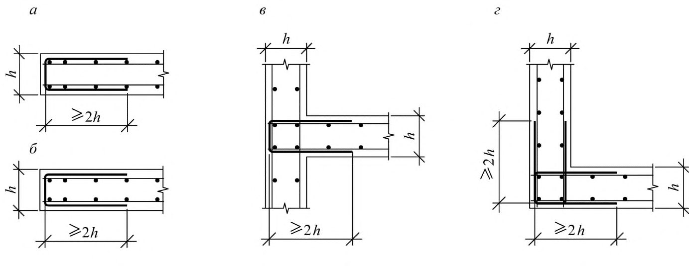
Абцисса вершины диаграммы осевого сжатия бетона определяется по формуле
где В - класс бетона по прочности на сжатие;
- безразмерный коэффициент, зависящий от вида бетона и принимаемый равным:
- для тяжелого и мелкозернистого бетона; 1 =
- для легкого бетона средней плотности D , (кг/м³ ); 2400 D =
- для ячеистого бетона. 0, 25 0,35 B = +
При одноосном и однородном растяжении бетона исходная диаграмма деформирования бетона описывается зависимостями (Г.1)-(Г.3), в которых следует принимать:
где - коэффициент, принимаемый при центральном растяжении равным единице; btq для изгибаемых элементов
здесь см - некоторая эталонная высота сечения, э 30 h = h - высота сечения, см,
R 0 tn
Параметры , , вычисляют по формулам (Г.6), (Г.7) с заменой на . 0 1 2 b bt
ДПриложение Д. Расчет колонн круглого и кольцевого сечений
Д.1 Расчет прочности кольцевых сечений колонн (рисунок Д.1) при соотношении внутреннего и наружного радиусов r 1 /r 2 ≥ 0,5 и арматуре, равномерно распределенной по окружности (при минимум семи продольных стержнях), производятся в зависимости от относительной площади сжатой зоны бетона
а) при 0,15 < ξ cir < 0,6 - из условия
б) при ξ cir ≤ 0,15 - из условия
в) при ξ cir ≥ 0,6 - из условия
В формулах (Д.1) - (Д.5):
As,tot площадь сечения всей продольной арматуры;
rs -радиус окружности, проходящей через центры тяжести стержней продольной арматуры.
Момент М определяется с учетом влияния прогиба элемента.
Рисунок Д.1 - Схема, принимаемая при расчете кольцевого сечения сжатого элемента
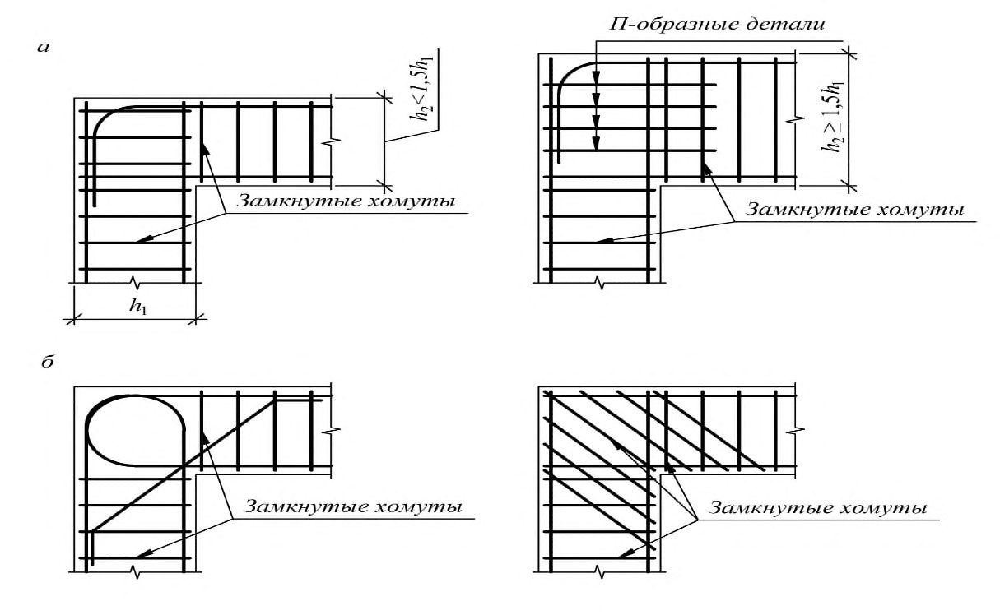
Д.2 Расчет прочности круглых сечений колонн (рисунок Д.2) с арматурой, равномерно распределенной по окружности (при числе минимум семи продольных стержней), при классе арматуры не выше А400 проверяется из условия
где r радиус поперечного сечения; ξ относительная площадь сжатой зоны бетона, определяемая следующим образом: cir при выполнении условия
при невыполнении условия (Д.7) - из решения уравнения
- φ -коэффициент, учитывающий работу растянутой арматуры и принимаемый равным: при выполнении условия (Д.7) φ = 1,6(1 - 1,55ξ cir )ξ cir , но не более 1,0; при невыполнении условия (Д.7) φ = 0;
As,tot площадь сечения всей продольной арматуры;
- r s - радиус окружности, проходящей через центры тяжести стержней продольной арматуры.
Момент М определяется с учетом влияния прогиба элемента.
Рисунок Д.2 - Схема, принимаемая при расчете круглого сечения внецентренно сжатого элемента
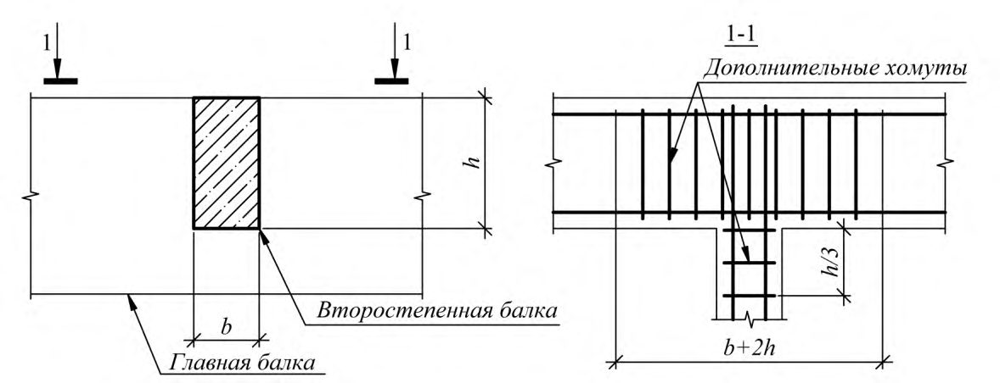
из решения уравнения
ЕПриложение Е. Расчет бетонных шпонок
Е.1 Размеры бетонных шпонок, передающих сдвигающие усилия между сборным элементом и дополнительно уложенным бетоном или раствором, определяют по формулам:
где Q сдвигающая сила, передающаяся через шпонки; tk, hk, lk глубина, высота и длина шпонки; пk число шпонок, вводимое в расчет и принимаемое не более трех.
При наличии сжимающей силы N высоту шпонок допускается определять по формуле
и принимать уменьшенной по сравнению с высотой, определяемой по формуле (Е.2), не более чем в два раза.
При соединении шпонками элементов настила длина шпонки, вводимая в расчет, должна составлять не более половины пролета элемента, при этом значение Q принимается равным сумме сдвигающих усилий по всей длине элемента.
По формулам (Е.1) - (Е.3) следует проверять шпонки сборного элемента и шпонки из дополнительно уложенного бетона, принимая расчетные сопротивления бетона шпонок Rb и Rbt как для бетонных конструкций. При расчете на выдергивание растянутой ветви двухветвевой колонны из стакана фундамента допускается учитывать работу пяти шпонок (рисунок Е.1).
1 сборный элемент; 2 - монолитный бетон
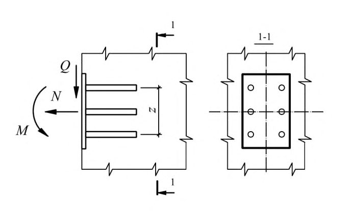
Рисунок Е.1 - Схема для расчета шпонок, передающих сдвигающие усилия от сборного элемента монолитному бетону
ЖПриложение Ж. Расчет коротких консолей
Ж.1 Расчет коротких консолей колонн при l 1 0,9 h 0 (рисунок Ж.1) на действие поперечной силы для обеспечения прочности по наклонной сжатой полосе между грузом и опорой следует производить из условия
в котором правая часть принимается не более 3,5 Rbt b h 0 и не менее 2,5 Rbt b h 0 В условии (Ж.1):
. lsup длина площадки опирания нагрузки вдоль вылета консоли;
-угол наклона расчетной сжатой полосы к горизонтали, определяемый из
- коэффициент армирования хомутами, расположенными по высоте консоли; sw w w A bs = здесь sw расстояние между хомутами, измеренное по нормали к ним.
При расчете учитывают горизонтальные и наклонные хомуты под углом не более 45 ° к горизонтали.
Напряжение сжатия в местах передачи нагрузки на консоль должно быть не более расчетного сопротивления бетона смятию Rb,loc .
Для коротких консолей, входящих в жесткий узел рамной конструкции с замоноличиванием стыка, значение l sup в условии (Ж.1) принимают равным вылету консоли l 1, если при этом выполняются условия М / Q 0,3 м и l sup / l 1 2/3 (где М и Q момент, растягивающий верхнюю грань ригеля, и поперечная сила в нормальном сечении ригеля по краю консоли соответственно). В этом случае правую часть условия (Ж.1) принимают не более 5 Rthbh 0 .
Рисунок Ж.1 - Расчетная схема для короткой консоли при действии поперечной силы
При шарнирном опирании на короткую консоль балки, идущей вдоль вылета консоли, при отсутствии специальных выступающих закладных деталей, фиксирующих площадку опирания (рисунок Ж.2), значение lsup в условии (Ж.1) принимается равным 2/3 длины фактической площадки опирания.
Поперечное армирование коротких консолей должно удовлетворять конструктивным требованиям.
Рисунок Ж.2 - Расчетная схема для короткой консоли при шарнирном опирании сборной балки, идущей вдоль вылета консоли
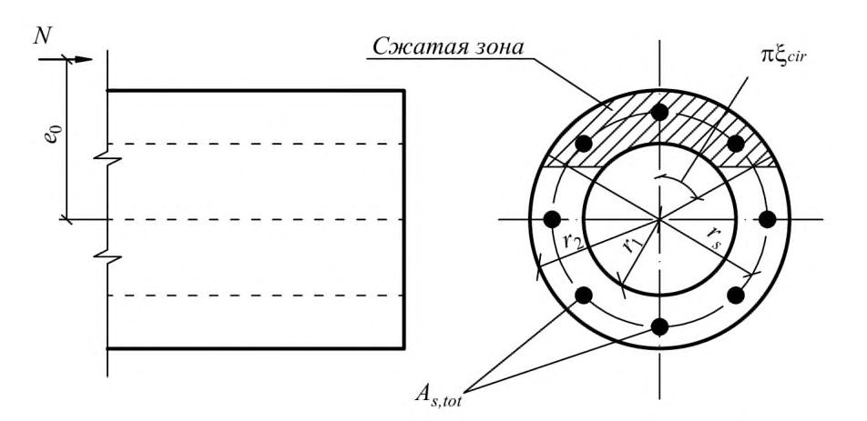
Ж.2 При шарнирном опирании балки на консоль колонны продольная арматура консоли проверяется из условия
где l 1, h 0 -см. рисунок Ж.1.
При этом продольная арматура консоли должна быть доведена до свободного конца консоли и иметь надлежащую анкеровку.
При жестком соединении ригеля и колонны с замоноличиванием стыка и привариванием нижней арматуры ригеля к арматуре консоли через закладные детали продольная арматура консоли проверяется из условия
где l 1, h 0 -соответственно вылет и рабочая высота короткой консоли;
N s -горизонтальное усилие, действующее на верх консоли от ригеля, равное:
и принимаемое не более 1,4 kf lw Rwf + 0,3 Q (где kf и lw -соответственно высота и длина углового шва приваривания закладных деталей ригеля и консоли; Rf расчетное сопротивление угловых швов срезу по металлу шва, определяемое согласно СП 16.13330, при использовании электродов Э42 Rwf = 180 МПа; 0,3 -коэффициент трения стали по стали), а также не более Rsw Аsw (где Rsw и Аsw расчетное сопротивление и площадь сечения соответственно верхней арматуры ригеля).
В формулах (Ж.3) и (Ж.4):
- M, Q -изгибающий момент и поперечная сила соответственно в нормальном сечении ригеля по краю консоли; если момент М растягивает нижнюю грань ригеля, значение М учитывается в формуле (Ж.4) со знаком «минус»; l sup -фактическая длина площадки опирания нагрузки вдоль вылета консоли; h 0 b -рабочая высота ригеля.
ИПриложение И. Учет косвенного армирования при расчете внецентренно сжатых элементов на основе нелинейной деформационной модели
И.1 Расчет внецентренно сжатых стержневых элементов из тяжелого или мелкозернистого бетона с косвенным армированием на основе нелинейной деформационной модели следует производить согласно 8.1.20 - 8.1.30 и И.2 - И.4.
И.2 Жесткостные характеристики Dij ( i,j - 1,2,3) в уравнениях (8.39) - (8.41) для определения деформаций бетона и арматуры в нормальном сечении элементов с косвенным армированием следует определять по формулам:
где Abk , Zbxk , Zbyk - площадь, координаты центра тяжести k -го сжатого участка бетона c косвенным армированием и напряжение на уровне его центра тяжести;
bk - коэффициент упругости бетона с косвенным армированием k -го участка; остальные обозначения - см. 8.1.23.
Допускается в формулах (И.1) - (И.6) принимать Abi =0.
И.3 Значения коэффициента bk следует определять по диаграмме деформирования бетона с косвенным армированием при осевом сжатии.
При использовании двухлинейных или трехлинейных диаграмм в зависимостях (6.5) - (6.9) вместо характеристик бетона Rb , b 0и b 2 следует использовать характеристики бетона с косвенным армированием Rb,red , b 0, red и b 2, red :
где Rs,xy - расчетное сопротивление арматуры сеток косвенного армирования;
здесь nx , Asx , l x - число стержней, площадь поперечного сечения и длина сетки соответственно (по осям крайних стержней) в одном направлении; n y , Asy , l y - то же, в другом направлении;
Rs,xy и Rb в МПа.
И.4 При использовании криволинейных диаграмм деформирования значения коэффициента bk следует определять, используя формулы (И.2)-(И.8), в которых вместо характеристик бетона и следует применять характеристики бетона с косвенным армированием Rb , red и b 0, red , а значение параметра для восходящей ветви диаграммы осевого сжатия бетона следует принимать равным значению, вычисленному по формуле ˆ b ˆ b 0
КПриложение К. Требования к правилам проектирования и конструирования железобетонных конструкций с механическими соединениями арматуры
К.1Общие положения
- К.1.1 Требования настоящего приложения распространяются на изготовление, проектирование и конструирование механических соединений ненапрягаемой арматуры диаметром 10-40 мм железобетонных конструкций.
- К.1.2 При использовании механических соединений арматуры применяют соединения следующих видов:
- опрессованное - соединение арматурных стержней путем пластической деформации без нагрева стальных соединительных муфт с помощью мобильного оборудования в условиях строительной площадки или стационарного в заводских условиях;
- резьбовое - соединение арматурных стержней резьбовыми муфтами заводского изготовления с внутренней резьбой (нарезанной или накатанной цилиндрической и конической), соответствующей профилю резьбы, нарезаемой на соединяемых арматурных стержнях;
- комбинированное - соединение арматурных стержней резьбовыми муфтами заводского изготовления предварительно опрессованных на концах арматурных стержней;
- болтовое - соединение арматурных стержней с помощью длинной муфты, в которой арматурные стержни фиксируются с помощью заостренных болтов, врезающихся в тело арматурного стержня;
- цанговое - соединение арматурных стержней, выполняемое путем защемления арматурных стержней с помощью конусных соединительных пластин располагающихся внутри конусных втулок;
Вид механического соединения и тип соединительных муфт (стандартные, переходные, позиционные, болтовые) должны назначаться с учетом эксплуатации конструкции, характера нагрузок, технологии производства арматурных работ и техникоэкономических показателей.
Сборка механических соединений должна выполняться в соответствии с инструкциями производителя или регламентом.
Область применения механических соединений арматуры по расчетной отрицательной температуре принимается не ниже минус 70 о С, для резьбовых соединений с нарезанной на концах арматурных стержней резьбой область применения ограничена минус 60 о С.
К.2Нормативные характеристики механических соединений арматуры
- К.2.1 При использовании для стыковки арматуры механических соединений нормативное значение прочности (временного сопротивления) принимаемого механического соединения должно быть не менее нормативного значения прочности (временного сопротивления) соединяемой арматуры. Прочностные и деформационные характеристики механического соединения должны соответствовать требованиям таблицы К.1.
Таблица К.1
| Разрывное усилие P в , кН, не менее | Деформативность Δ при растяжении, мм, не более | Равномерное относительное удлинение арматуры δ р после разрушения соединения, %, не менее |
|---|---|---|
| σ в F s | 0,1 | 2 |
О б о з н а ч е н и я:
- Fs - номинальная площадь поперечного сечения соединяемой арматуры по нормативным документам на ее производство; в - браковочное значение временного сопротивления соединяемой арматуры по нормативным документам на ее производство.
Примечания
- 1 Деформативность соединения - значение пластической деформации стыка при напряжении в арматуре, равном 0,6 т (0,6 0,2), где т ( 0,2) - браковочное значение физического или условного предела текучести арматуры по нормативным документам на ее производство.
- 2 Равномерное относительное удлинение соединенных арматурных стержней после испытания соединения на растяжение δр - наибольшее из значений δр, определенных на каждом из стержней.
К.3Железобетонные конструкции с механическими соединениями арматуры
Расчет железобетонных конструкций с механическими соединениями арматуры по предельным состояниям первой и второй группы
- К.3.1 Расчет железобетонных конструкций с механическими соединениями арматуры по предельным состояниям первой и второй групп выполняют по подразделам 8.1 и 8.2, при этом нормативные Rs,n и расчетные Rs сопротивления, модуль упругости Es , коэффициенты условий работы арматуры с механическими соединениями принимаются такими же, как для целых стержней арматуры соответствующего класса в соответствии с подразделом 6.2 со следующими дополнениями:
- при расчете сечений, в которых располагаются резьбовые механические соединения арматуры расчетные значения сопротивления растяжению для предельных состояний второй группы Rs,ser необходимо принимать с понижающим коэффициентом (только для стыкуемой арматуры) γ m = 0,95, учитывающим податливость соединения.
К.4Конструктивные требования
Требования к материалу и размерам соединительных муфт
- К.4.1 Муфты для резьбовых соединений изготовляют из стали марок 40, 45, 45Х, 45Г2 и аналогов по ГОСТ 1050. Муфты для опрессованных соединений изготовляют из стали марок 10, 15 и 20 по ГОСТ 1050 и Ст.2 или Ст.3 по ГОСТ 380.
- К.4.2 Геометрические размеры соединительных муфт назначаются из условия равнопрочности по значению нормативного временного сопротивления растяжению соединяемой арматуры σв и муфты σв,м, при этом основные геометрические размеры соединительных муфт должны приниматься по таблице К.2. Допускается по результатам опытных испытаний уточнять размеры соединительных муфт, которые должны быть указаны в технических условиях конкретных производителей.
- К.4.3 Параметры резьбы резьбовых соединений должны соответствовать ГОСТ 24705, допускается применение резьбы нестандартного размера при условии соответствия механического соединения требованиям таблицы К.1
Таблица К.2
| Тип соединения | Геометрические размеры муфт, мм, не менее | Геометрические размеры муфт, мм, не менее | Длина резьбы на концах арматурных стержней, мм, не менее |
|---|---|---|---|
| Длина L | Наружный диаметр D | ||
| Соединения с цилиндрической накатанной резьбой | 2,5 d | 1,6 d | d |
| Соединения с цилиндрической нарезанной резьбой | 2,3 d | 1,5 d | d |
| Соединения с конической резьбой | 3,3 d | 1,4 d | 1,4 d |
| Опрессованные соединения | 8 d | 1,7 d | 4 d |
К.4.4 Расчет соединительных муфт опрессованных механических соединений в зависимости от способа опрессовки следует выполнять с учетом приложения Л.
Требования к геометрическим размерам железобетонных конструкций с механическими соединениями арматуры
К.4.5 Геометрические размеры железобетонных конструкций с механическими соединениями арматуры должны отвечать 10.2.
Требования к армированию
- К.4.6 Армирование железобетонных конструкций с механическими соединениями арматуры должно выполняться в соответствии с 10.3 и К.4.7-К.4.10.
К.4.7 При стыковании арматуры с помощью механических соединений толщина защитного слоя от края муфты до грани железобетонного элемента должна быть не менее указанной в таблице 10.1.
К.4.8 Механические соединения арматуры в вертикальных железобетонных элементах необходимо располагать в зоне 1/4-1/5 высоты этажа от верха перекрытия, в изгибаемых элементах -вне зоны максимальных моментов или действующих максимальных усилий в арматуре.
Количество стыкуемой в одном сечении элемента рабочей растянутой или сжатой арматуры периодического профиля с помощью механических соединений допускается принимать до 100 % при проценте армирования продольной арматуры s ≤ 3 % и не более 50 % в остальных случаях. Расстояния между сечениями стыкуемой арматуры принимают равными длине перепуска соединяемой арматуры (нахлестки) (рисунок К.1).
К.4.9 Минимальное расстояние в свету между механическими соединениями арматуры определяется габаритными размерами оборудования для выполнения стыка и должно быть не менее 2 d и не менее значений, указанных в 10.3.5 (рисунок К.1).
Рисунок К.1 -Расположение стержней, стыкуемых внахлест и с помощью механических соединений
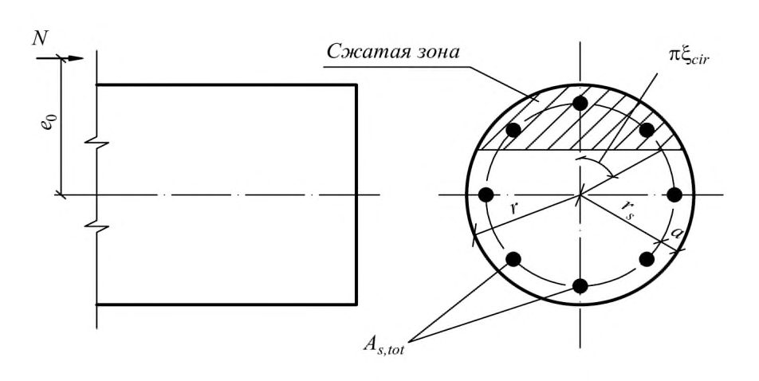
- К.4.10 В каркасах с механическими соединениями арматуры поперечное армирование принимается таким же, как в каркасах без механических соединений арматуры.
К.5Контроль качества
К.5.1. Контроль качества механических соединений арматуры производят согласно СП 70.13330 и К.5.2-К.5.7.
- К.5.2. При производстве работ с механическими соединениями арматуры необходимо проводить следующие виды контроля:
- входной контроль соединительных муфт и оборудования;
- текущий контроль в процессе производства соединений (операционный и приемочный);
- сертификационный контроль.
- К.5.3 Каждая муфта и контргайка должны иметь заводскую маркировку, в которой в обязательном порядке должны быть указаны: тип соединительного элемента, диаметр соединяемых стержней и номер партии или знак завода-изготовителя.
Указанная маркировка наносится на каждую соединительную муфту способами, обеспечивающими ее сохранность до момента ее использования, допускается наносить маркировку несмываемой краской, электромагнитным ударно-точечным методом, непрерывным прочерчиванием твердосплавной иглой или другими способами в соответствии с ГОСТ 7566.
- К.5.4 Для контроля затяжки механических соединений необходимо применять динамометрические ключи по ГОСТ 33530, которые должны проходить ежегодную калибровку. Усилие затяжки муфт и контргаек резьбовых соединений проверяется контрольной затяжкой не менее 10% соединений контролируемой партии. Партия соединений не должна превышать 500 шт.
Длина ключа, применяемого для затяжки механических соединений, должна быть не менее:
- для арматуры диаметром 12-18 мм - 0,3 м;
- для арматуры диаметром 20-28 мм - 0,5 м;
- для арматуры диаметром 32-40 мм - 0,7 м.
Величина затяжки резьбовых соединений должна быть не менее значений по таблице К.3.
Таблица К.3
| Наименование значения | Показатель значения | Показатель значения | Показатель значения | Показатель значения | Показатель значения | Показатель значения | Показатель значения | Показатель значения | Показатель значения | Показатель значения | Показатель значения |
|---|---|---|---|---|---|---|---|---|---|---|---|
| Диаметр арматурного стержня, мм | 12 | 14 | 16 | 18 | 20 | 22 | 25 | 28 | 32 | 36 | 40 |
| Минимальный момент затяжки, Н·м | 30 | 65 | 95 | 120 | 145 | 175 | 200 | 215 | 240 | 265 | 280 |
- К.5.5 Удлинение муфты опрессованного соединения после опрессовки должно соответствовать требованиям нормативной документации на соединения. При отсутствии данных требований значение контролируемого удлинения должно быть не менее 8 % первоначальной длины муфты.
- К.5.6 Для защиты резьбы муфт и стержней от атмосферных осадков, загрязнения бетоном и механических повреждений необходимо применять специальные защитные заглушки и колпачки, пластмассовые или металлические. Колпачки надеваются на торец стержня сразу после нарезки резьбы. Заглушки из муфт удаляются непосредственно перед вкручиванием в них арматурных стержней. Указанные защитные средства применяются на подготовленной арматуре, транспортируемой и подаваемой на строительную площадку, а также на выпусках арматуры.
- К.5.7 Подготовку концов арматуры и ее стыкование с помощью механических соединений должен проводить только аттестованный на эти виды работ персонал. где H d - в сантиметрах.
При опрессовке без промежутков обжатие производится с небольшим нахлестом последующего жима на предыдущий.
ЛПриложение Л. Расчет соединительных муфт опрессованных механических соединений
Л.1 Опрессованными механическими соединениями арматуры допускается соединять арматурный прокат классов А400 А800 любого периодического профиля. Применение опрессованых соединений для арматуры гладкого профиля не допускается.
Л.2 В качестве материала для соединительных муфт используют бесшовные горячедеформированные или холоднодеформированные трубы (по ГОСТ 8731 в части технических требований и ГОСТ 8732 в части сортамента), или круглого горячекатаного проката (по ГОСТ 535 в части технических требований и ГОСТ 2590 в части сортамента). В качестве материала для соединительных муфт используется сталь марок 10, 15 по ГОСТ 1050; Ст.2 или Ст.3 по ГОСТ 380. Допускается применять муфты из стали марки 20 по ГОСТ 1050, учитывая снижение ресурса обжимного оборудования.
Л.3 Опрессованные соединения должны соответствовать параметрам, определяющим их прочность и характер разрушения.
Л.3.1 Площадь поперечного сечения соединительной муфты до опрессовки FM назначается из условия равнопрочности по значению нормативного временного сопротивления при растяжении соединяемой арматуры и муфты:
где σ B,M , σ B,S -нормативные значения временного сопротивления материала соединительной муфты и арматурного проката соответственно по стандартам на их изготовление.
- Л.3.2 Допускается вместо нормативных значений σ B,M материала муфт принимать их фактические значения, определяемые опытным путем.
- Л.3.3 Длина соединительной муфты до опрессовки l 0. Подбирается из следующих условий:
- способ опрессовки. Опрессовка соединительной муфты на арматуре может осуществляться многократным обжатием муфты с промежутками и без промежутков (рисунок Л.1). При опрессовке с промежутками принимают зазор между жимами от 2 до 5 мм;
- для обеспечения требуемого усилия среза материала муфты для опрессованых соединений арматуры классов А400 и А500 значение обжатой части соединительной муфты должно быть не менее 5 d Н (по 2,5 d Н с каждой стороны муфты), где d Н - номинальный диаметр соединяемой арматуры.
Л.3.4 Длина муфты при обжатии без промежутков подбирается по формуле
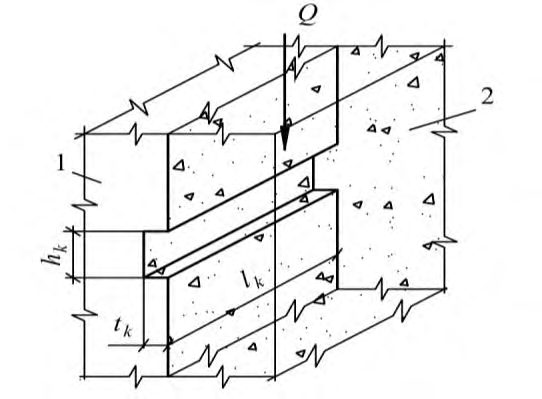
1 - с промежутками; 2 - без промежутков
Рисунок Л.1 - Опрессованный стык построечного изготовления, произведенный на мобильном оборудовании многократным поперечным деформированием соединительной муфты
Л.3.5 Длина муфты при обжатии с промежутками подбирается по формуле
где n - число жимов пресса;
- l i - ширина отпечатка одного жима пресса, см, определяется в зависимости от применяемого оборудования по ширине рабочей части пуансонов;
- а - значение принимаемого промежутка между жимами, см.
Общее число жимов n вычисляется из условия
Л.3.6 Внутренний диаметр муфт опрессованных соединений арматуры подбирается из следующего условия: суммарный зазор между муфтой и стыкуемой арматурой d ВН, М d MAX, S , должен быть не больше 4мм независимо от диаметра стыкуемой арматуры, где d ВН, М - внутренний диаметр муфты, d MAX, S - фактический максимальный габаритный размер поперечного сечения арматуры по ребрам.
- Л.3.7 Для гарантированного обеспечения требований по выносливости для опрессованых соединений арматуры с гарантией выносливости фактический зазор между муфтой и стыкуемыми стержнями арматуры до опрессовки d ВН, М d MAX, S следует принимать не более 2 мм независимо от диаметра арматуры.
- Л.4 Значение усилий поперечного деформирования или протяжки принимается в зависимости от применяемого оборудования и должна гарантировать требуемое удлинение муфты после обжатия в соответствии с К.5.4.
- Л.5 Подобранные геометрические размеры муфт в обязательном порядке должны быть проверены экспериментально испытанием на растяжение пробных образцов - не менее 3 шт. каждого вида и типоразмера. Испытанные образцы соединений должны соответствовать требованиям таблицы К.1. Не допускается при разрушении опрессованных соединений выдергивания арматурного стержня из муфты. Не допускается уменьшение суммарного размера обжатой части муфты ниже значений 4,5 d Н.
Л.6 При подборе толщины стенки муфт необходимо учитывать, что при малой толщине стенки не обеспечивается достаточная жесткость муфты сопротивлению распора периодического профиля арматуры. При значительной толщине стенки муфты усилия обжатия опрессовочного оборудования может быть недостаточно для проведения качественной опрессовки.
Л.7 Допускается размеры или значения параметров муфт, полученные при расчете, корректировать по результатам испытаний на растяжение пробных стыков, изготовленных с использованием конкретного оборудования и соединительных муфт в части толщины муфты и общей длины муфты.
Л.8 Геометрические размеры муфт опрессованных соединений для арматуры класса А800 и более должны быть экспериментально обоснованы с учетом возможностей опрессовочного оборудования.
Л.9 Размеры муфт из стали 10 опрессованных соединений для арматуры классов А400, А500 и А600 приведены в таблице Л.1.
Таблица Л.1
| Класс стыкуемой | Диаметр соединяемой арматуры d Н , | Геометрические размеры соединительных муфт: | Геометрические размеры соединительных муфт: | Геометрические размеры соединительных муфт: |
|---|---|---|---|---|
| арматуры | длина l 0 , мм | толщина стенки t , мм | наружный диаметр d 2 , мм | |
| мм | не менее | не менее | М | |
| А400, А500 | 16 | 8 d Н при многократной опрессовке с промежутками | 4,5 | 28,5 |
| А400, А500 | 18 | 8 d Н при многократной опрессовке с промежутками | 5 | 32 |
| А400, А500 | 20 | 8 d Н при многократной опрессовке с промежутками | 5,5 | 35 |
| А400, А500 | 22 | 8 d Н при многократной опрессовке с промежутками | 6 | 39 |
| А400, А500 | 25 | 8 d Н при многократной опрессовке с промежутками | 8 | 43,5 |
| А400, А500 | 28 | 8 d Н при многократной опрессовке с промежутками | 9 | 49 |
| А400, А500 | 32 | 8 d Н при многократной опрессовке с промежутками | 10 | 55,5 |
| А400, А500 | 36 | 8 d Н при многократной опрессовке с промежутками | 11 | 62 |
| А400, А500 | 40 | 8 d Н при многократной опрессовке с промежутками | 12 | 69,5 |
| А600 | 16 | 9 d Н при многократной опрессовке с промежутками | 6 | 32 |
| А600 | 18 | 9 d Н при многократной опрессовке с промежутками | 6,5 | 36 |
| А600 | 20 | 9 d Н при многократной опрессовке с промежутками | 7,5 | 40 |
| А600 | 22 | 9 d Н при многократной опрессовке с промежутками | 8,5 | 45 |
| А600 | 25 | 9 d Н при многократной опрессовке с промежутками | 10 | 48 |
| А600 | 28 | 9 d Н при многократной опрессовке с промежутками | 11 | 56 |
| А600 | 32 | 9 d Н при многократной опрессовке с промежутками | 12 | 63 |
| А600 | 36 | 9 d Н при многократной опрессовке с промежутками | 13 | 68 |
| А600 | 40 | 9 d Н при многократной опрессовке с промежутками | 14 | 75 |